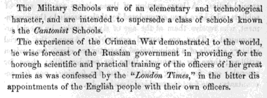

The section on Switzerland (Part IX) was printed after the section on Great Britain (Part VIII). It has been included here, out of sequence, to balance the file sizes. In the “Bavaria” section, and the tables at the end of the “Austria” section, “caligraphy” is consistently spelled with one l.
Italy was unified immediately before the first (1862) edition of the book. The arrangement of Part V generally reflects pre-unification systems.
In this file:
Part III: Austria
Part IV: Bavaria Saxony Holland
Part V: Italy Sardinia (in Italy section)
Part VI: Russia
Part VII: Sweden Norway Denmark
Part IX: Switzerland
In separate files:
Introduction and Contents
I. France
II. Prussia
VIII. Great Britain
X. United States
The Austrian Army is recruited by conscription, the period of service being for eight years, with two years in addition for the reserve; but such soldiers as wish it may generally obtain leave after six years’ service. Those who serve eight years are understood to have a claim for employment on railways and in the custom-houses. Substitutes are allowed, but they are provided solely by the State, and the means used for supplying them is made an element towards securing good Non-Commissioned Officers for the Austrian Army, in the following manner.
The sum paid over by private individuals for avoiding service in the Army is £150 (1,500 florins,) and the Government, in providing a substitute, pays him the interest of this sum during his period of service, and the capital when it is completed. A good substitute is permitted to serve twice, and he may thus receive £300 (3,000 florins) when he quits the army. Generally speaking, the substitutes provided by the Government are good Non-Commissioned Officers, who by these means are induced to continue a length of time in the service.
The Officers are obtained during a state of peace, either from the Military Academies, or by direct entry as Cadets, after passing a slight examination, into the regiments of infantry and cavalry, in which capacity they perform the ordinary duties of soldiers, and no particular period of service is required in this grade. The entry as Cadets is by nomination, part by the Colonels, proprietors of Regiments; part consisting of those having claims on the Regiments; and part of those recommended from the ranks.
Those who join the Army from the Military Academies consist principally of the sons of military men, whose education is mainly provided for by the State, and of others who are placed there by means of funds provided by provinces, districts, municipalities, or private individuals.
Any Austrian subject has a claim for admittance, on payment of the annual sum prescribed by the regulations.
410There is no fixed proportion existing between the Infantry and Cavalry officers supplied from the Military Academies, and those entering regiments directly as cadets, but it is understood that the former do not amount to more than one-twentieth or one-thirtieth of the latter.
The Artillery and Engineers are now entirely supplied with officers from the Military Academies.
There is no difference in the pay of officers of the same rank in the various arms in Austria.
Officers when not required are placed on half-pay, which is rather less than the half of their actual pay whilst serving. When an officer dies, his widow is not entitled to a pension, but the state provides for the education of the children; and to prevent distress, an officer is not permitted to marry unless he has a certain income, independent of his pay, for the maintenance of his wife.
The promotion in the Infantry and Cavalry is regimental, and usually by seniority; but there is no doubt that promotion by selection also takes place, though not in the regiment itself, the officer selected being promoted into another regiment. The promotion in the Artillery and Engineers is also by seniority, and by corps, and, until the Hungarian war, was exceedingly slow.
Although not actually sanctioned by the authorities, cases have occurred in the Austrian service where officers have purchased steps from others serving in different regiments to themselves in the following manner:—if any officer is about to retire from the service, the promotion in the regiment being by seniority, the officer whose turn it would be to obtain the promotion would frequently sell his right to a junior officer serving in another regiment, who would thus be promoted into the vacancy. We were informed that this system had formerly led to frequent duels between the officer obtaining the promotion, and those officers in the regiment whose prospects were directly injured, by the senior having sold his promotion, and thus stopped their advancement.
Military education in Austria has been entirely remodeled since the Hungarian war, and is now conducted in a very regular and systematic manner under the sole control and supervision of the Fourth Section of the Supreme War Department, entitled “Military Schools.”
The establishment consists besides of—
2 Majors of Infantry.
1 Captain of Artillery.
4112 Captains of Infantry.
2 Lieutenants of Infantry.
2 Employés belonging to the Administration.
6 Clerks.
6 Messengers.
To show the great importance of the Fourth Section, it will only be necessary to state that the disbursements of the government for Military Education in Austria for the current year are estimated at £281,440, (2,814,400 florins,) without taking into consideration the sums contributed for foundations by provinces, districts, and private individuals, or of those received for the education of paying students. This sum of 2,814,400 florins is apportioned in the following manner—
| Florins.* | Number of Students. |
||
|---|---|---|---|
| Vienna Staff School, | 43,000 | 30 | Officers. |
| Academies— | |||
| Wiener Neustadt, for Infantry and Cavalry, | 256,000 | 400 | Students. |
| Znaim, for Engineers, | 157,000 | 200 | |
| Olmutz, for Artillery, | 122,000 | 200 | |
| Trieste, for Marine, | 73,000 | 100 | |
| 4 Cadet Houses, at 87,000f., | 348,000 | 800 | |
| School Companies— | |||
| 6 Infantry, at 33,000f., | 198,000 | 720 | |
| 1 Cavalry, at 39,000f., | 39,000 | 60 | |
| 2 Frontier, at 35,000f., | 70,000 | 240 | |
| Scientific School Companies— | |||
| 5 Artillery, at 35,000f., | 175,000 | 600 | |
| 1 Engineer, at 36,000f., | 36,000 | 120 | |
| 1 Pioneer, at 36,000f., | 36,000 | 120 | |
| 1 Flotilla, at 22,000f., | 22,000 | 60 | |
| 1 Marine, at 40,000f., | 40,000 | 150 | |
| 1 Non-Commissioned officers’ or Teachers’ School, Wiener Neustadt. | 17,000 | 60 | |
| 12 Upper Houses of Education, at 49,500f., | 594,000 | 2,400 | |
| 12 Under Houses of Education, at 25,700f., | 308,000 | 1,200 | |
| 2,534,400 | 7,430 | ||
| Bureau of the Fourth Section, | 280,000 | ||
| Total, | 2,814,400 | = £281,440 | |
* A florin is equal to two shillings of English money.
So that the annual cost to the state for the education of an officer student, cadet, non-commissioned officer, and boy in these various schools is as follows:—
| £ | s. | d. | |
|---|---|---|---|
| Student Officer at the Staff School, | 143 | 6 | 0 |
| Student at the Engineer Academy, | 78 | 10 | 0 |
| Student at the Artillery Academy, | 61 | 0 | 0 |
| Student at the Infantry and Cavalry Academy, | 64 | 0 | 0 |
| 412 Student at the Marine Academy, | 48 | 6 | 0 |
| Cadets at the four Cadet Houses, | 43 | 10 | 0 |
| School Companies— | |||
| An Infantry School Company Student, | 27 | 10 | 0 |
| A Cavalry School Company Student, | 65 | 0 | 0 |
| A Frontier School Company Student, | 29 | 4 | 0 |
| An Artillery School Company Student, | 29 | 4 | 0 |
| An Engineer School Company Student, | 30 | 0 | 0 |
| A Pioneer School Company Student, | 30 | 0 | 0 |
| A Flotilla School Company Student, | 36 | 12 | 0 |
| A Marine School Company Student, | 26 | 12 | 0 |
| A Non-Commissioned Officer at the Teachers’ School, | 28 | 6 | 0 |
| A Boy at the Upper Houses of Education, | 29 | 14 | 0 |
| A Boy at the Lower Houses of Education, | 25 | 14 | 0 |
And thus, as the course of instruction is continued for four years in the Cadet Houses, four years in the Academies, and two years in the Staff School, the cost of training the Officers in the Austrian Army is—
| £ | |
|---|---|
| For an Officer of Artillery, about | 420 |
| For an Officer of Engineers, | 490 |
| For an Officer of Infantry or Cavalry, | 430 |
| For an Officer of Marine, | 370 |
| For an Officer of the Staff, | 710 |
From the Bureau of this Section at Vienna all orders for the management, maintenance, discipline, studies, and regulation of the various Schools and Academies are issued; and all details relating to the progress of the several students and the results of their examinations are periodically sent and regularly examined.
The Imperial institutions for Military Education, are divided into Three Classes. They are—
A. Such Institutions as are immediately intended for the education of pupils as Non-commissioned Officers; namely,
(1.) The Lower Military Houses of Education.
(2.) The Upper Military Houses of Education.
(3.) The School Companies.
B. Institutions in which it is intended to educate pupils as Officers; namely,
(1.) The Cadet Institutions.
(2.) The Military Academies.
C. Such Institutions as partly give a special kind of instruction, and partly complete and carry out the previous education of Officers. These are—
(1.) The Institution for Military Teachers.
(2.) The Higher Course for the Artillery and Engineers.
(3.) The War School.
In the institutions of the first and second class, education as well as instruction is given, but those of the third class are limited to instruction; accordingly, all that is said in the following pages with regard to the admission of pupils, and with regard to beneficial foundations, has no reference to institutions of the third class.
Although each of the first-named classes forms a complete whole in itself, yet they stand in close mutual relation to each other, inasmuch as the most distinguished pupils of the Lower Houses of Education pass into the Cadet Institutions; and in the same way the most distinguished scholars of the Scientific2 School Companies, viz., those of the Artillery, Engineers, Pioneers, Flotilla, and Marine Schools, may be transferred as attendant pupils3 to the Academies; by this means they may obtain a right to a position in the Army as Officers.
So, on the other hand, insufficient progress may be a reason for scholars being removed from the Cadet Institutions and the Academies into the Upper Houses of Education and the School Companies.
By these regulations a road is opened for the advancement of any talent that may gradually develop itself; and at the same time the pupils of the Institutions for Higher Military Education are submitted to that process of elimination which is requisite for the success of these Institutions.
The pupils in the Institutions for Military Education are either foundation pupils,4 or paying pupils; the first are divided into the 414 military or treasury foundation pupils, and the provincial and private foundation pupils.
The military or treasury places belong to the army; the claim for these depends upon the nature of the institution and the position of the parents. As a general rule, it may be laid down that children of officers are expected to remain up to eleven years of age under the care of their parents, whereas those of common soldiers may in the eighth year of their age be taken under the protection of the State.
The provincial foundations are bestowed upon the sons of the nobility, or of distinguished employés of the state belonging to the crown lands of the province. Private foundations are those established by private individuals or corporations, and the appointment to these depends upon the conditions laid down by the founder. The capital or property of these foundations is generally administered by the Supreme War Department.5
Every Austrian subject may claim admission as a paying pupil, if the other conditions of admission are fulfilled in his case.
In the Lower Houses of Education there are only military or treasury places.
In the Upper Houses of Education there are 1,800 military places; the remaining 600 are filled up by pupils upon provincial or private foundations, and by paying pupils.
In the School Companies the number of the foundation places and paying places is not fixed.
In the Cadet Institutions and the Academies there are 900 full and 200 half military places, and 520 places for pupils on provincial and private foundations, and for paying pupils.6
A sum to cover the expenses is fixed in the case of the pupils on the provincial and private foundations, as also for the paying pupils, amounting in the Houses of Education and in the School Companies to 150 florins (15l.) per annum; in the Cadet Houses to 400 florins (40l.) per annum; in the Academies 600 florins (60l.) for each of the three first years, and 800 florins (80l.) for the last year. These payments will be subject to modifications, at considerable intervals of time, according to the price of articles of consumption, and will be drawn in the case of the pupils on the provincial foundations 415 from the funds of the respective provinces, and in the case of the pupils of the private foundations, from the moneys belonging to the private foundations.
The capital for the provincial and private foundations must be duly secured and sufficient in amount to cover the fixed payments for the number of places determined upon. Supposing the sum contributed to be insufficient, the requisite sums must be obtained by deferring any further nominations.7 The proper sums in discharge of these contributions must be paid in advance, half-yearly, on the 1st of October and the 1st of April. Those which belong to the provincial foundations, and such private ones as are administered by trustees, must be paid into the nearest Military Chest.8 In the case of those pupils who pay for themselves, the money must be sent precisely on the above-mentioned days to the Commandant, or Director of the School, without reference to the day on which the pupil may have entered the school. On the other hand, in cases where a pupil either is removed from or otherwise quits the institution before the natural time, restitution will be made of the corresponding proportion of the sum paid in advance.
For admission into a Military Educational Institution, the boy must first of all be of the age specified for the institution in question, and must further possess the proper bodily growth and strength corresponding to that age, and the prescribed amount of knowledge. Every boy who is to be offered as a candidate for a military place must first be registered, and this in the course of the same year for which his admission is desired. This registration must be made by the parents or guardians through the Commanding Officers of the Army,9 or Army-Corps, or Military Government10 within whose district they are domiciled, or in case of their living in foreign parts, through the Austrian Legation of the country.
Applications thus made must state what is the institution, admission into which is desired, and must be accompanied by the following certificates:—1. Baptismal certificate. 2. Certificate of vaccination. 3. Certificate of bodily health, by a Military Surgeon. 416 4. The school certificate for the last half-yearly examination: And 5. On the reverse the following declaration:—
“I hereby pledge myself to surrender up my son (or ward) to the Imperial Military Service, in case of his being admitted into a Military Educational Institution; and I declare that I will under no pretext require his return.”
The object of this declaration is, on the one hand, to secure permanent elements for the Military Educational Institutions, and to create in the minds of the relations of the candidates the seriousness of purpose so essential in the choice of a profession. The declaration will also serve to retain the pupils to a course, which they have usefully commenced, and to protect them from the consequences of hasty decisions on the part of their friends. On the other hand, if it appears manifest that a pupil has not the requisite inclination or qualification for the military service, his removal from the institution ensues with or without the request of his friends, as will be more fully explained further on.
The applications will be examined by the Commanding Officers of the Army, or the Army Corps, or Military Government, and after their revision the candidates will be registered and the petitioners duly informed.
Any changes which occur in the case of the registered candidate, or in his family circumstances, between the time of registration and of actual admission, are to be made known to the authorities before whom the application was brought.
The registers are to be submitted to the Supreme War Department in the middle of June, so that applications can be received by the Commanding Officers of the Army, or Army Corps, or Military Government, at the utmost only up to the end of May.
Appointments to the military places in the Houses of Education and the School Companies are made by the Supreme War Department; His Majesty the Emperor reserves for himself those in the Cadet Institutions and the Academies.
Vacancies in the provincial foundation places are advertised, and applications called for, by the Governors or by the Standing Committees of the Estates of the respective provinces.11
All proposals made in this manner are forwarded to the Minister 417 of the Interior, and submitted by him for the sanction of His Majesty.
Appointments to the private foundations are made by the person specified by the founder; decisions of this kind are submitted on or before the 15th of June, to the Supreme War Department for their approval of the candidates and distribution of them into the various institutions.
If a candidate in whose case the prescribed conditions of admission are not fulfilled is nominated to a private foundation, and his nomination consequently not approved, a new nomination must be made.
Pupils who pay are appointed by the Supreme War Department.
The sanction of the appointments and the distribution of the candidates appointed in the various institutions, in the case of the military and the paying pupils, will be made known to them by the Commanding Officers of the Army, or Army Corps, or Military Government; in the case of the provincial foundations by the Minister of the Interior; and in the case of the private foundations by the trustees.
Candidates living in a foreign country will be informed by the Legation in that country.
Upon the appointment made to an entirely gratuitous place in a military educational institution, all payments of allowances for the education of children cease.12
The conveyance of military foundation pupils to the school to which they are appointed will, if not provided for by the friends of the pupils, be made at the expense of the Military Treasury by the ordinary means of locomotion.
Trustworthy Non-commissioned Officers from the nearest detachment of troops should be selected by the military authorities for the conveyance and charge of the pupils; four or five being, according to the circumstances, committed to the care of a single superintendent.
The conveyance of all other pupils must be provided for by their friends.
Admission into the Military Educational Institutions takes place only at the commencement of the school year. Candidates admitted must present themselves in their respective institutions between the 15th and the 30th of September.
418The Commanding Officers of the Army, or Army Corps, or Military Government have to take care that every candidate admitted to a military place shall, before leaving to join the institution, be a second time examined by an Army Surgeon, and shall only be allowed to proceed to the institution in case of his bodily qualifications being found perfectly sufficient.
Finally, the candidate upon presenting himself must be re-examined by the chief Medical Officer of the institution, and if he is hereby found to be unqualified for military education, will not be received.13
Any Military Surgeon or Medical Officer who incurs the guilt of neglect of his duty in this particular will be held responsible.
Every candidate upon presenting himself will moreover undergo the prescribed examination in his previous studies, and if his previous education appears insufficient, his appointment will be cancelled.14
Pupils admitted after a private education into a Military Institution are provided by this institution with new linen, and clothes. All clothes they bring with them are without exception to be returned to their friends, and an acknowledgment of the return given.
No pupil in any of the Military Institutions is allowed to possess any linen or clothes except what is provided; and the friends and relations are not to be called upon for any sort whatever of additional contribution. An amount of pocket-money, varying with the character of the institution, may be transmitted to the pupils through the hands of the authorities of the school; but this is entirely at the pleasure of the friends and relations; all necessaries being provided by the institution.
The pocket-money can only be paid to the pupil through the Commanding Officer of the Institution or of the Company.
The amount allowed must depend on the conduct of the pupil, but must not, even in the Academies, exceed three florins (six shillings) a month.
The course of instruction given in the Military Educational Institutions is fixed by special tables drawn up for each institution. Special text-books, to be followed in the courses, are also appointed.
419The tables drawn up to regulate the course of instruction are subject to such modifications as may be called for by the requirements of science and by improvements in the methods of teaching.
The scholars will also receive in the course of the year, more particularly in summer, and after the close of the examination, practical instruction suitable to the arm of the service for which they are destined.
Every September the pupils pass into the next succeeding yearly course.
In the same month the scholars quit the institutions, and are either placed in the army or transferred to other institutions. The conditions under which this is done are given in detail in the account of each institution.
The expenses of the conveyance of the pupils from one institution to another are borne by the Treasury.
Pupils who make no progress in scientific studies will be required to enlist in the army15 if old enough, and if not, will be removed to an inferior Military Educational Institution; or if they are already in one of the Houses of Education or School Companies, will be employed in learning some trade which will be of use in the army,16 and when they have reached the proper age, will be enlisted.
Pupils whose want of bodily qualification unfits them for the army will be sent back to their parents or guardians. Those holding military places in the Academies, if their parents are entirely unable to provide for them, will receive a yearly pension of 150 florins (15l.) until they can be placed in some employment under the State at a salary at least equivalent to this sum.
Pupils out of the Military Houses of Education or School Companies, who are removed for want of bodily qualification, and whose parents are entirely unable to provide for them, will, according to their capacities, be placed either in the Accounts Department17 or some similar Military Department, in the Geographical Institution, or as drummers or clerks in one of the higher Military Schools, or will be taught some trade for employment in the Outfit Department,18 or will be made teachers. If, however, the pupil’s bodily disqualification 420 be of a nature to incapacitate him for any of the above-mentioned employments, he will be removed at the expense of the Treasury into some Civil or Military Hospital.19
If in moral respects a pupil is found to be a mischievous member of the institution, he may at any time in the course of any year be removed.
Pupils who pay, in case of their removal being found, for whatever reason, necessary, will be sent home to their friends, the consent of the friends being required before they can be either engaged as soldiers or removed to one of the lower institutions. The expenses already incurred will be deducted from the payment made in advance, and the balance repaid to the parents or guardians.
A pupil who for whatever reason has once been removed from a Military School can never be afterwards admitted into any one of them, and in case of his either then or afterwards enlisting in the army, he can not, under any pretext whatever, obtain the rank of Officer before the pupils of the year to which he belonged. This rule, in the case of pupils who have been transferred from a higher to a lower institution, even when they pass out of this latter in the regular course, must be observed in reference to the pupils of the year to which they belonged in the institution from which they were removed.20
1. The Lower Military Houses of Education.
The twelve Lower Military Houses of Education contain, as has been said, only military places.21 These appertain, in the first instance, to the legitimate sons of all soldiers bearing arms,22 whether born in marriage of the first, or in marriage of the second degree.23 421 Subordinately to these, a lawful claim exists in the following cases:—
1. Sons of soldiers serving in the Trabant Body Guard, the Court Watch, the Outfit Commission, and other military bodies.24
2. Sons of fathers belonging to the Reserve,25 without prejudice, however, to sons of soldiers in actual service.
3. Sons of invalided soldiers,26 not only in cases where the father has already married at the date of his reception as invalided, but also in those where marriage has been subsequently permitted.
4. Sons of those who have either as substitutes or otherwise served double time, and are now in the employment in connection with the Court or Government, even in cases where marriage has been contracted after quitting the service.
5. Sons of men belonging to the military service, not included in the above-mentioned cases, namely, the sons of Prima-planists,27 Employés, and Officers.
In any large number of candidates special regard should be had to the sons of fathers who have been killed or invalided on the field; after these, to those who are orphans on both sides; then to the sons of substitutes and other soldiers in actual services; and last follow in order the sons of fathers either belonging to the Reserve or received as Invalides, or otherwise connected with the Military Service.
As the sons of Officers serving with the sword28 have a large number of places reserved for their benefit in the Cadet Institutions and the Academies, their admission into Military Houses of Education, more especially into the Lower House of Education, is only allowable when no prejudice is caused to the above-mentioned claimants, and as a general rule can only take place when they are orphans, or under special circumstances.
422The age of admission is the completion of the seventh year. Children under this age who are orphans on both sides, or whose fathers being widowers, have to serve in the field, will be received into the Orphan House at Vienna, and be transferred on completing their seventh year to the Lower Houses of Education. Children who have passed the prescribed age for admission into the first class of the Lower Houses of Education can only be admitted, in case of their possessing the requisite amount of knowledge, into the classes corresponding to their age, and in case of there being places vacant in these classes; any addition to the prescribed numbers in the respective years is not allowable.
The number of pupils in each of the Lower Houses of Education is fixed at 100. These 100 pupils are divided into four years, each year being as nearly as possible of the same numerical strength.
The command is held by a Subaltern Officer, to whom are attached for the religious education, the medical care, the discipline, and the instruction—
1 House Chaplain,
1 Army Surgeon,
4 Sergeants and Instructors,
4 Honorary Sergeants29 as Assistant Instructors,
1 Sergeant, as House Adjutant; and
6 Corporals, for the discipline.
Additional assistance may be procured for managing the house and attending on the pupils.
To conduct the instruction (which will be almost entirely addressed immediately to the senses of the children) class-teachers will be provided for each yearly course; and these, with the house chaplain and the medical officer, aided by assistant teachers, will give the pupils instruction in the following subjects:—
1. Religious Knowledge. 2. German. 3. Natural History. 4. Geography. 5. Arithmetic, both ordinary and mental. 6. Writing. 7. Common Drawing. 8. First Notions of the Rules of Drill. 9. Gymnastic Exercises and Swimming.
2. Upper Military Houses of Education.
These, twelve in number, form a continuation to the Lower Houses of Education, the pupils from which are admitted here at the close of their eleventh year.
At this age foundation pupils of every kind, as also paying pupils, may be admitted immediately from their parents’ homes, only, however, into the first year’s course, and after passing an examination in 423 the subjects taught in the Lower Houses of Education, to the same extent up to which they are taught in the second class of the ordinary elementary school.
The claim to a military place in an Upper House of Education, is similar to that for a military place in a Lower House of Education.
The number of pupils is fixed at 200 in each Upper House of Education, divided in like manner into four yearly courses.
The command is intrusted to a Captain, who is aided, for purposes of instruction and superintendence, by—
2 Subaltern Officers.
1 House Chaplain.
1 Army Surgeon.
1 Surgeon’s Assistant.
4 Sergeants as Teachers.
2 Honorary Sergeants as Assistant Teachers.
1 Sergeant as House Adjutant.
8 Corporals, for discipline.
Additional assistance may be procured for managing the house and for attendance, upon the same scale as in the Lower Houses.
The instruction, as in all the Military Schools to be noticed henceforward, will be given by teachers specially assigned to each subject, and will include here the following subjects:—
1. Religious Knowledge. 2. German, with written compositions. 3. One of the other Languages of the Empire. 4. Natural History. 5. Geography. 6. History. 7. Arithmetic. 8. Military Rules and Regulations. 9. Rules of Drill, and first notions of the Rules of Military Exercise. 10. Writing. 11. Common Drawing. 12. Gymnastic Exercises, Single-stick,30 Swimming.
After completing their fourth year course, the pupils are transferred, according to their qualifications and their own wishes, into the School Company.
Entrance into the Marine School Company takes place at the end of the second year’s course.
The School Companies have the object of furnishing the different arms of the service with Non-commissioned Officers well educated, both practically and theoretically, and likely in the course of time to prove useful Commissioned Officers31 in charge of the troops.
They are in all twenty in number:—
6 for the Infantry.
3 “ Cavalry.
4242 “ Frontier Troops.
5 “ Artillery.
1 “ Engineers.
1 “ Pioneers.
1 “ Flotilla.32
1 “ the Marine Service.33
Under the general term of School Companies the School Squadrons (for the Cavalry) are included. The term Scientific34 School Companies applies only to those of the Artillery, Engineers, Pioneers, Flotilla, and Marine.
The scholars in the School Companies are either pupils or attendants35 The pupils are taken, as already described, from the Upper Houses of Education, after the close of their fourth year’s course, (or, in the case of the Marine School Company, after that of the second,) or they come direct from places of private education.
The conditions for gratuitous admission from private educational institutions into the School Companies are similar to those for admission into the Houses of Education, with the difference, that in the School Companies the sons of officials in the civil service, who have served long and meritoriously, and are ill-provided for, may also claim military places.
The candidates must be not under fifteen and not above eighteen years of age; in the Marine School Company not under thirteen and not above fourteen.
The Attendant pupils (frequentanten) come from the soldiers of the Standing Army.36 They exist only in the School Companies of the Artillery, Engineers, Pioneers, and Flotilla; to be admissible, they must, as a rule, have passed with credit through the Non-commissioned Officer Schools of the Artillery or Engineer regiments, or of the Pioneer Corps or Flotilla Corps; they must have been not more than two years in the service; and not at the utmost be above the rank of an Upper Cannoneer, an Exempt, or an Upper Pioneer.37
425The admission of Attendants (frequentanten) can only be allowed without prejudice to the claims of candidates from the Upper Military Houses of Education and from places of private education.
Pupils who come direct from private education must, if they propose to enter one of the Scientific School Companies, be at least 4 feet 10 inches;38 if one of the other School Companies, at least 4 feet 8 inches high. And these and the Attendant pupils alike must at their entrance into the School Companies pass an examination in the subjects of instruction taught in the Upper Houses of Education.
A perfect knowledge of German is accordingly an indispensable condition for reception into the School Companies, and can only in the single case of the Marine School Company be under certain circumstances overlooked.
At his entrance into the School Company every pupil takes the military oath, and is from this day bound to eight years’ service in the Standing Army, and two years’ service in the Reserve.
Each School Company is commanded by a Captain; each School Squadron by a Captain of Cavalry.
They have attached to them for purposes of instruction and discipline,—
| In each Infantry School Company, | 3 Subaltern Officers |
| In each School Squadron, | 3 “ |
| In each Frontier School Company, | 6 “ |
| In each Artillery “ | 6 “ |
| In the Engineer “ | 6 “ |
| In the Pioneer “ | 6 “ |
| In the Flotilla “ | 4 “ |
| In the Naval “ | 4 “ |
Each institution is provided also with four Sergeants as teachers, together with a requisite number of additional persons required for management, discipline, and service.
Religious superintendence and instruction is intrusted to a local Ecclesiastic, and the medical duties to an Army Surgeon.
Scholars in the School Companies are to receive a practical as well as a theoretical training. This is to be regulated according to the branch of the service for which they are detained.
Each of the Infantry School Companies consists of 120 pupils, divided into two years, the subjects of instruction being—
1. Religious Knowledge. 2. One of the National Languages. 3. Geography and History of the Austrian State. 4. Arithmetic. 5. Elements of Geometry. 6. Military Correspondence and Management of the Internal 426 Affairs of a Company.39 7. Pioneer Service.40 8. Knowledge of the Arms of the Infantry. 9. Rules and Regulations. 10. Rules of Drill, Exercise, and Manœuvring. 11. Calligraphy. 12. Military Drawing. 13. Gymnastics, Fencing, and Swimming.
After the close of the course the pupils who have done remarkably well enter the Infantry as Corporals, the pupils who have done well as Exempts, with the corporal’s badge; those who have done moderately, as Exempts; and those who have done either remarkably well, or well, will be, without further examination, named as Cadets41 as soon as they pay down the sum required for outfit, or prove their legitimate claim to exemption from this outlay, they themselves being consenting parties.
The arrangements of the School Squadrons, with a number of 60 pupils in each, are analogous to those of the School Companies, special attention only being given to instruction in riding and practical exercise in the Cavalry service; for which purpose each Squadron is provided with 71 horses.
The first of the School Squadrons forms a Regiment of Dragoons, the second one of Lancers, and the third one of Hussars.
The subjects taught are as follows:—
1. Religious Knowledge. 2. One of the National Languages. 3. Arithmetic. 4. Elements of Geometry. 5. Geography and History of Austria. 6. Military Correspondence, and Management of the Internal Affairs of a Squadron. 7. Knowledge of Cavalry Arms. 8. Rules and Regulations. 9. Rules of Cavalry Drill, Exercise, and Manœuvring. 10. Knowledge of Horses and Grooming, of Bridling, Saddling, and Shoeing. 11. Calligraphy. 12. Military Drawing. 13. Riding. 14. Gymnastics, Fencing, and Swimming.
On leaving, the pupils enter the Cavalry in the grades corresponding to those mentioned above for the Infantry.
The Frontier School Companies, each of 120 pupils, give three yearly courses.
In all essential points, these institutions are organized on the same plan with the Infantry School Companies. As, however, Officers and Non-commissioned Officers on the Military Frontiers are also intrusted with the general administration, and accordingly require of necessity a knowledge of political administration, of jurisprudence, and agriculture, the range of the plan of study in the Frontier School Companies is more extensive.
The following subjects are taught:—
1. Religious Knowledge. 2. The Wallachian or Illyrian Language. 3. Austrian 427 Geography and History. 4. Arithmetic and Algebra. 5. Geometry, Plane Trigonometry, and Practical Mensuration. 6. Military Correspondence and Management of the Internal Affairs of a Company. 7. Arms and Munitions. 8. Pioneer Service, Road and Bridge Making. 9. Elements of Civil Architecture. 10. Agriculture. 11. Frontier Law and Administration. 12. Rules and Regulations. 13. Rules of Drill, Exercise, and Manœuvring. 14. Calligraphy. 15. Military Drawing. 16. Gymnastics, Fencing, Swimming.
The pupils of the Frontier School Companies, at the close of their third year, enter the Frontier Troops, under the conditions already stated in the case of the Infantry School Companies.
The Artillery School Companies have a course of three years, and consist each of 120 scholars (pupils and attendant pupils.)
The subjects of study are—
1. Religious Knowledge. 2. The Bohemian Language.42 3. Austrian Geography and History. 4. Arithmetic and Algebra. 5. Geometry, Plane Trigonometry, and Practical Mensuration. 6. Popular Mechanics, First Elements of Natural Philosophy and Chemistry. 7. Military Correspondence and Management of the Internal Affairs of a Battery or Company; Computation of Estimates. 8. Artillery. 9. Field Fortification. 10. Elements of Permanent Fortification; Attack and Defense of Fortresses. 11. Rules and Regulations. 12. Rules of Drill and Exercise. 13. Calligraphy. 14. Military Drawing. 15. Elements of Descriptive Geometry. 16. Grooming, Stable Duty, Harnessing. 17. Gymnastics, Fencing, Swimming.
After the close of the complete course, pupils who have done remarkably well enter the Artillery as Corporals, those who do well as Bombardiers, the others as Upper Cannoneers.
The most distinguished scholars, however, pass at the close of their second year into the Artillery Academy free of cost, as Attendant Pupils (frequentanten,) with the rank of Lance-Corporals, to receive there the education which will fit them for the rank of officers.
The Engineer School Company contains 120 scholars, distributed in three yearly courses. The subjects taught are—
1. Religious Knowledge. 2. Austrian History and Geography. 3. Arithmetic and Algebra. 4. Geometry, Plane Trigonometry, Practical Mensuration. 5. Military Correspondence and Management of the Internal Affairs of a Company. 6. Pioneer Service. 7. Sapping and Mining. 8. Elements of Permanent Fortification. 9. Civil Architecture. 10. Arms and Munitions. 11. Rules and Regulations. 12. Rules of Drill, Exercise, and Manœuvring. 13. Calligraphy. 14. Military Drawing. 15. Architectural Drawing. 16. Gymnastics, Fencing, Swimming.
The scholars enter the Corps of Engineers in the same way as has been described in the case of the other School Companies; the most distinguished passing as Attendant Pupils with the rank of Lance-Corporals, free of cost, into the Academy of Engineers.
428The Pioneer School Company also contains 120 scholars, similarly divided into three yearly courses.
The instruction given is similar to that of the Engineer School Company, special attention being paid to pioneering duties.
1. Religious Knowledge. 2. The Bohemian Language. 3. Austrian History and Geography. 4. Arithmetic and Algebra. 5. Geometry, Plane Trigonometry, and Practical Mensuration. 6. Popular Mechanics. 7. Military Correspondence and Management of the Internal Affairs of a Company. 8. Land Pioneering. 9. Water Pioneering.43 10. Arms and Munitions. 11. Rules and Regulations. 12. Rules of Drill, Exercise, and Manœvring. 13. Calligraphy. 14. Elements of Descriptive Geometry. 15. Gymnastics, Fencing, Swimming.
After the close of the third year, the scholars enter the Corps of Pioneers, under the various conditions already described. Scholars who specially distinguish themselves will at the close of the second year be received, free of cost, as Attendant Pupils (frequentanten) in the Academy of Engineers; and after completing the four years’ course there, be distributed as Officers in the Corps of Pioneers.
The number of scholars in the Flotilla School Company is 60; and the course of instruction three years in length. The subjects are—
1. Religious Knowledge. 2. Italian. 3. Austrian History and Geography. 4. Arithmetic and Algebra. 5. Geometry, Plane Trigonometry, Practical Mensuration. 6. Popular Mechanics. 7. Military Correspondence, and Management of the Internal Affairs of a Company. 8, 9, 10. Flotilla Navigation, Artillery, and Pioneering. 11. Rules and Regulations. 12. Rules of Drill, Exercise, and Manœuvring. 13. Calligraphy. 14. Military Drawing. 15. Elements of Descriptive Geometry. 16. Gymnastics, Fencing, Swimming, and Boating.
The most distinguished scholars are sent, free of charge, at the end of the second year, to the Artillery Academy, and after completing the four years there, enter the Flotilla Corps as Officers. The others leave at the end of three years under conditions similar to those already described.
The Marine School Company contains 150 pupils, and its course of instruction lasts four years.
The subjects are—
1. Religious Knowledge. 2. German. 3. Italian. 4. Illyrian. 5. Natural History. 6. Geography and History. 7. Arithmetic. 8. Algebra. 9. Geometry and Plane Trigonometry. 10. Popular Mechanics. 11. Military Correspondence and Management of the Affairs of a Company. 12. Artillery, Arms, and Munitions. 13. Rules and Regulations, by Land and Sea. 14. Rules of Drill, Exercise, and Manœuvring. 15. Calligraphy. 16. Common Drawing and Machine Drawing. 17. Military Drawing. 18. Gymnastics, Fencing, Swimming.
The pupils will also be thoroughly exercised in boat manœuvring, 429 in the use of sails, and of cannons, and after the end of each year’s examination, will pass some weeks on board a sailing vessel for practice.
Pupils who either through want of capacity or of diligence fall behind in the theoretical instruction, will at the end of the second year be sent on board ship as ship’s boys (Schiffs-junge.)
The other scholars go through the courses of the third and fourth year, and then pass, on the same plan as in the Infantry School Companies, into the Marine Infantry, or as Marine Artillerymen or as Engineering pupils44 of the first class, into the Navy, or into the Arsenal Works Company, to devote themselves to Naval Architecture.
The best scholars enter after four years instruction as Attendant Pupils in the Artillery Academy, and after completing their time there are admitted as Second Lieutenants of the second class into the Marine Artillery.
The object of these is to prepare pupils for the instruction in military science given in the Academies.
They are four in number, with 200 pupils in each.
They contain military or treasury places, either wholly or half gratuitous; places on provincial and private foundations; and finally places for paying pupils.
The exact number of places open to pupils on provincial and private foundations, and to paying pupils, can not be determined, as in this respect the Cadet Schools form a single whole with the Academies, and the amount can only be fixed as a total for these institutions taken together. There are altogether 1,100 of these military places, which may be distributed in varying proportions amongst the Cadet Schools and the Academies; the number in any one of them can not be stated as a rule.
The military foundations are reserved for the sons of Officers serving or having served with the sword; the entirely gratuitous places for the sons of Officers in want, and the half gratuitous places for those of Officers provided with means of their own, or serving in higher positions.
Officers employed in the Outfit Department, Remounting45 430 Department, the Department of Military Law and Jurisdiction46 are thus excluded, unless they have previously served with the sword. But for the sons of these Officers, of the Military Judges, the Military Surgeons, and other Officials, having attained the eleventh or any higher allowance class,47 there will be reserved eight entirely and eight half gratuitous places in the Cadet Schools and the Academies.
Appointments to the military and provincial foundations are granted by His Majesty, the former on the recommendation of the Supreme War Department, the latter on that of the Minister of the Interior. Among the former are included, as already stated, the most distinguished pupils of the Lower Houses of Education, for whose transfer to the Cadet Schools the rules are laid down, the recommendation being annually submitted for His Majesty’s approval.
Special regard will be given to candidates whose fathers have been killed or invalided in the field; after these, to those who are orphans on both sides; to the sons of Officers of special merit, of Officers with large families, and the like.
Appointments upon provincial and private foundations, or as paying pupils, will be made in the manner already stated in the general account of the Educational Institutions.
The age of admission is the eleventh year completed, and twelfth year not exceeded, and the candidate will be expected to know the subject of instruction prescribed for the third class of the common (normal) schools.
A knowledge of German, however, will not be considered indispensable. Pupils who are not Germans will receive in the first half year of the first course special instruction in German.
The instruction continues during four yearly courses. The command is held by a Field Officer, assisted by—
1 Subaltern Officer as Adjutant.
2 Captains.
10 Subaltern Officers.
2 Ecclesiastical Professors.
1 Accountant.
4311 Army Surgeon.
1 Surgeon’s Assistant.
12 Sergeants for Inspection.
4 Orderlies, together with the requisite number of mechanics and servants.
The subjects of instruction are—
1. Religious Knowledge. 2. German Language and Art of Speaking. 3. French. 4. Natural History. 5. Geography. 6. History. 7. Arithmetic. 8. Algebra. 9. Geometry and Plane Trigonometry. 10. Rules of Drill and Exercise. 11. Calligraphy. 12. Common Drawing. 13. Gymnastics, Single-stick, Swimming.
Those pupils who satisfactorily complete their four years’ course are transferred, according to their capacities, and as far as possible, to their own wishes, into one of the Military Academies. Entrance into the Marine Academy takes place at the close of the second year.
Pupils who do ill, will, at the close of any one of the three first years, be removed into the course of the following year at one of the Upper Houses of Education; or, at the close of the fourth year, into one of the Infantry School Companies.
This removal, in the case of paying pupils, will be dependent on the consent of the parents; failing which, they will be sent back home.
The object in these is to educate Officers in the higher military subjects for the different arms of the service.
There are four Academies; the Neustadt Academy, the Artillery Academy, the Engineers’ Academy, and the Marine Academy.
The scholars in each are divided into four yearly courses of nearly equal numbers. In the Neustadt Academy each year is sub-divided into two parallel classes, the instruction being the same in both.
The pupils in the Military Academies are of the different kinds described in the account of the Cadet Houses, and the appointments similarly made; the Academies and the Cadet Houses in these respects forming a single body.
Candidates for admission into the Neustadt Academy, the Artillery Academy, or the Engineers’ Academy, must be nearly, if not quite, fifteen, and not above sixteen years old. For admission into the Marine Academy, they must be nearly, if not quite, thirteen, not above fourteen years old.
The Academies receive their pupils in the first instance from the Cadet Schools, after the satisfactory completion of the fourth (or, in the case of the Marine Academy, the second) year, and then, as 432 already stated under the head of the School Companies, from the Artillery School Companies, and from the Engineer, Pioneer, Flotilla, and Marine School Companies, after the highly satisfactory completion of the second (or, in the Marine School, of the fourth) year.
Pupils from these School Companies, before entering the Academies, will take the Military Oath, receive the rank of Lance-Corporals, and be admitted free of charge as Attendant Pupils into the Academies, to receive their education for the rank of Officer. Scholars from the general body of soldiers, who are attending the School Companies, are to be treated, in respect of their transfer to the Academies, in the same way as the other pupils.48
Entrance into the Academies is confined to the commencement of the first year.49 Pupils admitted from places of private instruction are examined in the subjects taught in the Cadet Schools; those who wish to enter the Neustadt, the Artillery or Engineers’ Academy, in the following subjects, to the extent here described:—
1. German:—The Art of Speaking; Prosody; the Rules of Speaking; the various Rhetorical Styles.
2. Natural History:—General knowledge of the Three Kingdoms.
3. French:—General grammatical rules; Translation from German into French.
4. Geography.
5. History:—Ancient and of the Middle Ages.
6. Geometry and Rectilinear Trigonometry, with the Application of Algebra, and the Solution of Geometrical Problems.
7. Common Drawing.
Candidates for the Marine Academy will be required to know,—
1. The German Grammar, including Syntax.
2. Zoölogy.
3. French:—The Auxiliary Verbs; the Four Conjugations; Reading.
4. General Geography.
5. Ancient History.
6. Arithmetic and Algebra as far (inclusively) as Equations of the First Degree, with two unknown Quantities.
7. Common Drawing.
Candidates from both institutions must also possess the degree of religious knowledge corresponding to their age, and must write a good current hand.
433Pupils who are found negligent in the course of their academical studies, will at the close of the first, second, or third year be transferred to the classes corresponding to their age in the School Companies, or will be enlisted in the Army as Cadets if they possess the requisite bodily qualifications, in the manner already described.50
Wiener Neustadt having been the seat of this Academy for more than a century, the ancient name thence derived will be retained in its usual acceptation, though the Academies for the Artillery and the Engineers will also be placed in the same locality. The institution counts 400 pupils, designed primarily for the Infantry of the Line and of the Frontier, and secondly, for the Chasseurs and the Cavalry.
The Director of the Academy is a Colonel or General, attached to whom, for purposes of instruction, discipline, and general management, there are three field and thirty-four other Officers; for religious care and instruction, four Ecclesiastics; for medical attention, one Regimental Surgeon, one Army Surgeon, and one Surgeon’s Assistant; for the accounts, one Accountant, and four Accountant’s Assistants. The large number of pupils maintained in the institution requires, moreover, a proportionately large staff for superintendence, a numerous body of attendants, servants, and the like; so that the whole number to be added to that of the pupils does not fall short of 309 persons; 64 horses are allowed for the riding lessons.
The plan of study is based on that of the Cadet Schools, and embraces the following subjects:—
1. Religious Knowledge. 2. French. 3. Italian. 4. Bohemian. 5. Hungarian. 6. Logic and Psychology. 7. Geography. 8. History. 9. Analytical Geometry and Higher Analytical Mathematics. 10. Mechanics, Spherical Trigonometry, Mathematical Geography, Triangulation. 11. Natural Philosophy, Elements of Chemistry. 12. Practical Mensuration, taking Maps at Sight. 13. Descriptive Geometry. 14. Military Composition. 15. Positive International Law,51 Austrian Civil Law (Privat Recht.) 16. Military Penal Law and Procedure. 17. Pioneer Service, with Field Fortification. 18. Permanent Fortification. 19. Civil Architecture. 20. Arms and Munitions. 21. Study of Ground and Positions, and Military Drawing. 22. Rules and Regulations, and Military Administration. 23. Rules of Infantry Drill and Exercise. 24. Rules of Cavalry Drill and Exercise. 25. Manœuvring. 26. Riding. 27. Gymnastics. 28. Fencing. 29. Dancing. 30. Swimming.
Pupils who show a talent for general drawing will be practiced in it.
434After the completion of the fourth year’s course, the pupils will be recommended by the Supreme War Department to His Majesty for nomination as Second Lieutenants of the second class.
In their distribution into the various regiments, &c., of the army, the choice of the pupils will, as far as possible, be considered.
The pupils upon leaving will be, without exception, fully equipped at the expense of the State. Only in the case of the pupils who wish to enter the Cavalry, the parents (or guardians) will be called upon to give security for the payment of 1,000 florins (100l.) towards the expenses of the first equipment, and for a monthly allowance of 25 florins (2l. 10s.)
3. The Artillery and Engineers’ Academy.
The arrangements of these two Academies are in many respects similar, as required by the character of the two kindred sciences for which they are founded.
The number of scholars is fixed at 160 pupils, and 40 attendant pupils (Frequentanten) in each.
The command in each is intrusted to a General or a Colonel.
For the smaller number of scholars, fewer instructors, superintendents, and attendants are needed; the complete amount in each Academy is fixed at 200 men, in addition to the scholars. Each has thirty-two horses allowed to it.
The plan of instruction is in many respects identical in each.
The subjects taught in both are—
1. Religious Knowledge. 2. French. 3. Italian.52 4. Logic and Psychology. 5. Geography. 6. History. 7. Analytical Geometry and Higher Analytical Mathematics. 8. Descriptive Geometry. 9. Mechanics and the Elements of the Study of Machinery. 10. Mathematical Geography. 11. Natural Philosophy and Chemistry. 12. Practical Mensuration, taking Plans at Sight. 13. Military Composition. 14. International Law; Austrian Civil Law. 15. Military Penal Law and Penal Procedure. 16. Military Drawing; Study of Ground and Positions. 17. Rules and Regulations, and Military Administration. 18. Riding. 19. Gymnastics. 20. Fencing. 21. Dancing. 22. Swimming.
Common drawing will be treated, as it is at the Neustadt Academy, as an optional subject.
In the Artillery Academy the following additional subjects will be taught;—
1. Bohemian.53 2. Field Fortification and Permanent Fortification. 3. Tactics of the Three Arms. 4. Artillery. 5. Sieges, Construction of Batteries; Artillery. 6. Rockets. 7. Rules of Drill and Exercise in the Artillery and 435 Infantry. 8. Instruction in shoeing horses, in judging of their Age, in judging of them at Sight, in Bridling, Saddling, and Grooming.
In the Academy of the Engineers the additional subjects are—
1. Arms and Munitions and Artillery. 2. Art of Fortification. 3, 4. Civil Architecture, Plain and Ornamental. 5. Pioneer Service. 6. Rules of Drill, Exercise, and Manœuvring.
The pupils of the two Academies enter in the same way as those at Neustadt, after the satisfactory completion of four years’ instruction, with the rank of Second Lieutenant of the Second Class, the respective services of the Artillery, and of the Engineers or Pioneers. Pupils for whom no vacancies can be found enter the Infantry.
This, like the other Academies, is in the charge of a Field Officer, or a General.
The pupils are 100 in number; the Teachers, other Officers, and attendants, 88.
One essential distinction here (explained by the necessity of habituating the pupils to the sea) is the admission at an age earlier by two years, and the proportionally earlier termination of the course.
The plan of instruction combines a continuation of the studies prescribed in the Cadet Schools, with the commencement of those specially required for the marine service, viz.:—
1. Religious Knowledge. 2. German. 3. Italian. 4. French. 5. English. 6. Geography. 7. History. 8. Algebra. 9. Geometry and Plane Trigonometry. 10. Analytical Geometry and Higher Analytical Mathematics. 11. Spherical Trigonometry and Nautical Astronomy. 12. Mechanics and Natural Philosophy. 13. Descriptive Geometry. 14. Navigation. 15. Military Composition. 16. International Law, Austrian Civil Law, Sea Law. 17. Military Penal Law, and Penal Procedure. 18. Artillery. 19. Fortification, Attack and Defense of Coast Fortifications. 20. Naval Tactics and Naval History. 21. Knowledge of Rigging, &c. (Takelungslehre.) 22. Naval Manœuvres. 23. Naval Architecture. 24. Signals. 25. Rules and Regulations. 26. Rules of Drill and Exercise. 27. Calligraphy. 28. Military Drawing. 29. Common Drawing. 30. Swimming. 31. Gymnastics. 32. Fencing. 33. Dancing.
In addition to the practical instruction given in the course of the school year, the pupils of the three first years will in the months of August and September be sent in sailing vessels on a voyage for practice.
The pupils at the end of four years enter as Cadets into the Navy, the Flotilla Corps, or the Corps of Naval Architecture.
436After completing a practical course of two years, they will receive their promotion as Second Lieutenants of the second class.54
1. The Military Teachers’ School.
The object here is a double one; first, to bring up good and serviceable teachers in the subjects of study prescribed for the Military Houses of Education; secondly to provide at the same time instructors in gymnastics and fencing for all the military schools and for the troops. The institution accordingly consists of two departments, each of thirty Attendant Pupils, receiving instruction in these two different branches.
Non-commissioned Officers are admitted after a service of at least two years. Candidates for admission into the Teachers’ department must, in addition, possess the required amount of knowledge in the subjects taught in the Military Houses of Education; and, as a rule, must know, besides German, one other of the Austrian national languages. Proficiency in every one of the subjects will not be considered essential. Candidates for admission to the Gymnastic and Fencing Department will be required to show a certain amount of readiness in the use of arms and in gymnastic exercises, and an evident capacity for acquiring greater skill.
Registration for admission is to be obtained in the usual course of the service from the Supreme War Department.
The Attendant Pupils receive, in addition to their ordinary pay, bread and the extra allowance; and for their better subsistence also an allowance corresponding to that granted for provision during a march.
The command is held by a Field Officer or Captain; six Subaltern Officers and four Sergeants act as teachers, the latter as assistants in the instruction in fencing and gymnastics, and as swimming master. The instructor in the art and methods of teaching may be a civilian.
The subjects of instruction in the Teachers’ Department are—
4371. The Art and Methods of Teaching. 2. German. 3. Another Austrian Language. 4. Arithmetic and Geometry. 5. Geography. 6. Military Composition, and the Management of the Internal Affairs of a Company. 7. Calligraphy. 8. Common and Military Drawing. 9. Gymnastics, Fencing, and Swimming.
In the Gymnastic Department,—
1. Staff, Rapier, Sword, and Bayonet Fencing. 2. Gymnastics and Swimming. 3. Knowledge of Fire-arms.
In both Departments a certain number of hours weekly will be devoted to Military Exercise.
Instruction in all the subjects will be given with special reference to the methods to be pursued in teaching them in the various Military Schools.
The course in each Department lasts one year. Under certain circumstances particular pupils in the Teachers’ Department may remain for the further completion of their studies a second year in the institution.
In the Teachers’ Department, pupils who show no aptitude or liking for some particular subject, may be exempted from attending the lessons given in it, so as to allow them to give more thorough attention to other branches.
After passing the examination, the pupils are either sent immediately to undertake duty in the Military Schools, or return to their service in the troops, and pass, as occasion requires, into the Military Schools. Corporals who distinguish themselves by remarkably good progress will be promoted to the rank of Sergeant.
2. The United Higher Course for the Artillery and Engineers,
Has for its object the more advanced instruction of young Officers in a scientific and technical point of view, for service in the Artillery and Engineers.
Twenty Officers, of more than usual capacity, between twenty-one and twenty-six years of age, will be admitted from each of the two arms. They must be unmarried, and must have served with distinction during a period of not less than two years.
Officers in whose cases these conditions are satisfied, and who desire to be admitted to the course, apply for registration for admission to the examination, in the ordinary form, to the War Department.
Officers who, in the month of October, are summoned to attend, may charge their traveling expenses to the Treasury, and undergo an examination before the Professors attached to the Course, in the following subjects:—
4381. Analytical Geometry and Higher Analytical Mathematics. 2. Mechanics and the Elements of the Study of Machinery. 3. Natural Philosophy and Chemistry. 4 Military Composition. 5. French. 6. Military Drawing, tested by the production of a Drawing of their own doing.
Candidates for the Artillery will be, moreover, examined in the Tactics of the three Arms, and in Artillery; and those from the Engineers, in the Art of Fortification and in Civil Architecture, both Plain and Ornamental.
The text-books used in the Academies of the Artillery and Engineers will serve as a measure for the range of attainment required. Pupils who passed with distinction through these Academies will thus be specially fitted for admission into the Higher Course after they have proved, during their time of service, their diligence in bringing the knowledge they have acquired into actual application.
On the close of this preliminary examination, the results will be submitted to the Supreme War Department, and the recommendations for admission laid before His Majesty.
A superior Field Officer, either of the Artillery or the Engineers, will be intrusted with the charge of the united course. The lectures will be given by the Professors of the Academy of the Artillery and Engineers. From the nature of the duties, partly common and partly distinct, which devolve upon the two corps, it follows that the course of the studies (which will be carried on during two years) will in like manner be partly common and partly separate.
The subjects of common instruction will be—
1. Mechanics in application to Machinery, combined with Machine Drawing. 2. Natural Philosophy and Chemistry, combined with practice in manipulation, in making experiments, and in analyzing. 3. Theory of Artillery, in reference to the constructions that occur in Artillery. 4. Higher Tactics. 5. Principles of Strategy, illustrated by the representation of campaigns, with special attention to the use of Artillery, as well in Attack and Defense of fortified places, as in the field.
Separate instruction will be given to Artillery Officers in—
1. Service in Workshops, Depôts, and Arsenals. 2. Knowledge of Foreign Artillery, of the requisites (ausrüstungen) for Field service and Sieges, and for furnishing fortified places.
To Engineer Officers, in—
1. Ornamental Architecture, combined with Architectural Drawing. 2. The Art of Fortification, special attention being given to working out projects.
The pupils receive in addition practical guidance and supervision in all subjects of a scientific nature connected with the Art of War.
439The pupils of the second year undergo an examination in October. Upon the results of the examination the War Department decides on their promotion for the rank of Second to that of First Lieutenants.
The object of the War School is to give Officers of all arms an education for higher duties, especially for those of the Staff and of the Upper Adjutant Department.55
Any Subaltern Officer of the active army, without distinction of arms, may claim admission into the War School, provided he is above twenty-one and under twenty-six years old, is unmarried, and has served as Officer uninterruptedly and with distinction two years at least with the troops, and, provided, finally, he has passed the prescribed preliminary examination.
For admission to the examination, registration, to be obtained in the usual form from the War Department, is requisite.
The examination is conducted between October 10th and 20th, in the War School buildings; the registered candidates will be summoned to Vienna at the beginning of October; traveling expenses will be paid by the Treasury. The subjects are—
1. Algebra and Geometry, including Plane and Spherical Trigonometry. 2. Geography. 3. History. 4. Arms and Munitions. 5. Field and Permanent Fortification. 6. Pioneer Service. 7. Rules of Drill and Exercise (in detail, for the arm in which the candidate has served, and generally for the other arms.) 8. Manœuvring. 9. Military drawing, tested by the production of a drawing of the candidate’s own doing. 10. Military Composition, tested by working out an exercise in the presence of the Commission. 11. French. And finally, 12, the candidate must be able to speak one of the national languages of the Austrian Empire, Slavonic, Hungarian, or Italian, and must write a good current and legible hand.
The amount of knowledge required in these subjects will be regulated by the range of the text-books prescribed for use in the Academy at Neustadt. Regard, however, will not so much be given to the minutiæ of knowledge possessed by the candidate, but rather to the evidence of his having a correct judgment and quick apprehension, and the power of expressing himself both orally and in writing.
Upon the results of the examination, formally drawn up by the authorities of the school, recommendations for admission will be submitted to the sanction of His Majesty.
The number of attendants in the War School is fixed at thirty, and the length of course is two years.
440The attending pupils receive, in addition to their ordinary pay, a monthly allowance of twenty florins, rations, and allowance for two horses; when employed in taking surveys and reconnoitring, they have an extra allowance of thirty florins monthly.
The War School is commanded by a General or Superior Field Officer.
Five Field Officers or Captains, taken as a rule from the Staff, give lectures on the prescribed scientific subjects. One Field Officer or Captain of Cavalry takes the duty of riding-master; and one civil Professor that of instruction in the French language and literature. Necessary officers, attendants, and servants take the duty of adjutants, of the internal management, of the service, and of attending to the thirty horses.
The first year’s subjects of instruction are—
1. Military Drawing and the study of Ground and Positions. 2. Higher Tactics. 3. Staff and Superior Adjutant Duty. 4. French Language and Literature. 5. Riding.
Those of the second year,—
1. Military Drawing, Ground and Positions. 2. Military Geography. 3. Principles of Strategy, illustrated by representations of some of the most instructive campaigns. 4. French Language and Literature. 5. Riding.
The course begins on the 1st of November, and lasts to the end of September.
The Attendants at the War School must be practiced in those arms in which they have not served. They are for this purpose distributed into the various bodies of troops forming the garrison of Vienna, go through the exercises and manœuvres of these troops—in the first year with one, and in the second with the other arm. At the termination of these periods of practice, they will be called upon to undertake the command of a Battery, of a Squadron of Cavalry, and of a Division of Infantry.
In the month of May, the attendant pupils of the first year will go out upon a course of practical surveying; those of the second year will be similarly employed in reconnoitring, choosing sites for encampment, discovering, judging of, and describing proper points for taking up positions, forming têtes-de-pont, entrenched camps, and the like, and in performing other duties falling within the service of the Staff.
At the beginning of October, the pupils of the second year will undergo an examination, which will be conducted, both orally and by papers.
441Upon the results of this the Supreme War Department will determine upon their promotion to the rank of First Lieutenants (if they are not already of that rank,) and this without any reference to their previous position, their position henceforth being simply determined by their merit.
The same grounds determine the cases of those who are admitted to the Staff, or who return to their respective arms.
Those who, after a satisfactory completion of the course, return to service with the troops, will, after three years’ meritorious service, be specially recommended for extraordinary promotion.
The Upper and Lower Houses of Education, the Infantry School Companies, the Cavalry School Squadrons, and the Frontier School Companies, are under the orders of the Commanders of the Army, the Army Corps, or the military government in whose district they are situated. The Artillery and Engineer School Companies are under the orders of the General Artillery and Engineer Departments; the Pioneer and Flotilla School Companies, under those of the Quartermaster-General’s Department; the Marine School Company, under those of the Admiralty. Which functionaries, however, receive from the Supreme War Department all directions relating to organization and instruction.
The Cadet Schools, the Academies, the Military Teachers’ School, the Upper Artillery and Engineer Course, and the War School, are immediately under the orders of the Supreme War Department.
The general organization of all the military schools and places of instruction is once for all established by the regulations sanctioned by His Majesty. These regulations contain all that concerns the physical, moral, and intellectual training of the pupils, and all have the one object of rearing them up as worthy members of the Austrian army, and faithful supporters of the throne and of the honor of their country.
The English Commissioners in their General “Report on the Education and Training of Officers for the Scientific Corps” hold the following language:—
The magnitude of the Military Education of Austria entitles it to rank among the chief Institutions of the Empire. It has been remodeled since the wars of 1848, 1849. It is now centralized, and wholly directed by one of the four Co-ordinate Sections of the War 442 Office, which is independent of the others, and reports directly to the Emperor. This Educational or “Fourth” Section has the control of between 300,000l. and 400,000l. yearly. It provides for the free or nearly free education of more than 5,000 pupils. The extent and completeness of the system will be best understood by a reference to the clear and valuable official account of the schools.56
The military schools are divided by this document into (1) those which educate pupils for Non-commissioned Officers, (2) those which educate for Officers, (3) and those Senior Schools which complete the education and extend the instruction of both classes. The method of training Non-commissioned Officers is a peculiar and remarkable part of the system.
1. No less than 5,730 pupils are in process of being educated for Non-commissioned Officers. They are received into a Military School at seven years old, and at that early age are devoted to the army, with a kind of solemnity, by their fathers, somewhat similar to the practice at Woolwich Academy :—“I hereby pledge myself to surrender up my son to the Imperial Military Service, in case of his being admitted into a Military Educational Institution, and I will under no pretext require his return.” This promise, as the official document states, may no doubt be recalled if the youth finds that he has mistaken his vocation; but it must exercise great influence (and such is its avowed object) in retaining him in it.
After passing successively through two Junior Institutions,—the Lower Houses of Education, where he continues till eleven years old, and the Upper Houses, where he remains till fifteen,—the boy receives his finishing course in one of what are termed the School Companies, the highest class of schools for training boys to become Non-commissioned Officers in all arms of the service. These are twenty in number, and scattered over the whole Empire, containing generally 120 pupils each, though in one case only sixty; and with a course of either two or three years, according to the nature of the service. The extent and the requirements of the Empire give a striking variety to their character. Thus, in the frontier School Companies, “the range of the studies is more extensive, because the Non-commissioned Officers on the Military Frontiers are intrusted with the general administration, and require of necessity a knowledge of Political Administration, of Jurisprudence, and Agriculture;” and thus also the Non-commissioned Officers for the responsible Flotilla Service of the mouths of the great rivers, the lagoons of the Po, the head of the Adriatic, and the lakes, are carefully 443 educated and frequently promoted. Following the course of a pupil through these Upper Houses and School Companies, we were much struck by the sensible and vigorous character of the education, and the motives supplied for exertion. In the Upper Houses the boys compete for entrance to the School Companies which they prefer, and the more scientific companies are a special object of ambition, because it is more usual in these for young men to be raised by their talents to the Academies, and thus made Officers, “free of all cost:” according to the regulations, however, this is possible in all. It may be stated that from six to ten pupils from each of the more scientific School Companies,—the Artillery, Engineer, Pioneer, Flotilla, and Marine Companies,—are yearly transferred to the Academies, to complete their education there for the Officer’s Commission.
A system of this kind, supplying at once a good education and large opportunities of advancement, must necessarily operate as a great encouragement to young men educating for Non-commissioned Officers; and allowing for the social differences of the two countries, it resembles in spirit the French system, which throws open the gates of the Polytechnic and St. Cyr, and with them a proportion of the Commissions in the Army, to all.
This, however, is not all. The sums devoted to the education of Non-commissioned Officers, as well as Officers, are immense, and may be regarded as a spontaneous contribution of the National Feeling, no less than a State provision. A system both of public and private foundations (Stiftungen) prevails—part derived from the Emperor, part from the provinces, part from private gifts and legacies—by which 3,190 pupils are supported in the Houses of Education and the School Companies, and 1,320 in the Cadet Schools and Academies. The very large majority of these exhibitions supply a complete, about 200 a partial, maintenance. And it is curious to observe the aid to education which is so common in our own Universities, devoted in Austria to what may be termed the great National Institution—the Army,—and retaining all the limitations to the descendants of Founders or Natives of provinces which marked our own foundations. Some of these exhibitions have been founded by foreign soldiers for their own countrymen. Thus there are two bearing the name of the O’Gara and the O’Brady, to be held by any Irishmen of good family, one of which is in the gift of the Roman Catholic Archbishop of Dublin. We should add that this system is still a living and popular one. Within three years the city of Brünn has founded such an exhibition “for sons of Austrian subjects in Moravia, and by preference in Brünn, in 444 commemoration of His Majesty’s escape from assassination in 1853.” We ourselves heard a distinguished Officer express an intention of founding one of these Exhibitions. The comparison with the open Bourses of the Polytechnic is remarkable; but the Austrian appointments to free places seem to be given, like the Prussian, solely as rewards for the service of the parent.
2. The education of young men for Officers is conducted upon the same principles which regulate that for Non-commissioned Officers. The age of admission to a Cadet School is about eleven. The pupils are pledged to the service with the same formalities which we have noticed in the Lower Houses of Education. Between fifteen and sixteen they enter one of the Academies for the Line, the Artillery, the Engineers, or the Marine, and after four years they pass to their respective services.
Thus, unlike the French system, that which is followed in Austria commits the pupil to the Army, and to a Military Education, from an early age, resembling herein the plan of the Accademia Militare of Turin. But an attempt seems to be made to combine general with special teaching. Thus, although even in the two first years (from fifteen to seventeen,) at Wiener Neustadt, there is some introduction of successful practical military teaching, the chief weight is thrown upon mathematics, history, geography, drawing, and French; special military teaching has a greater, though far from an exclusive place, in the two last years. The studies are high, and (as far as we could judge) pursued carefully, and with excellent discipline.
The description we have given of the system pursued in the Schools for Non-commissioned Officers will have shown that there is a constant appeal to emulation. The same is found at Wiener Neustadt. There is a careful system of assigning credits during the whole school period, which itself argues competition. The chief immediate reward, indeed, is the choice of a regiment on leaving the school; but the prospect of entering the Staff School stands in no distant perspective, and this is filled with so many pupils from Wiener Neustadt, that it must be looked upon as the sure reward of a successful Neustadter. There are other inducements of a different character. The discipline being strict, pupils are constantly removed from Wiener Neustadt and the other Academies to the schools for Non-commissioned Officers, and though sometimes allowed to enter the army as Officers, it must always be as juniors to their contemporaries at Wiener Neustadt. We heard instances of great strictness in this matter.
The new course for the Special Arms in Austria is not yet completely 445 in operation. It is at present carried on separately in the Academy of Olmütz for the Artillery, and that of Znaim, in Moravia, for the Engineers. There are 200 pupils in each Academy, and the courses of instruction, which are more special or technical than at Wiener Neustadt, last four years, from the age of fifteen to nineteen. The yearly examinations, the manner in which the marks of the monthly examinations tell on the final one, and the careful classification of the pupils in the order of merit, reminded us of the system of the Polytechnic more than any other school we have seen. And an inspection of the very high credits obtained by the first thirty pupils will prove the diligence with which the studies are pursued. We should add that several pupils of marked talents come from the scientific School Companies, A further fact bears witness to the vigor of the discipline. We have alluded to the dismissal of unpromising subjects from the Austrian Military Schools. In the course of three years, since the changes of 1850, it appears that nearly 100 pupils were removed from Znaim, as not coming up to the standard required for the Engineers by the new regulations.
3. The courses of instruction in the three Academies for Infantry and Cavalry, Artillery, and for Engineers, last for the same time, and run (as it were) parallel to each other. Each is, or is to be, completed by a senior department. The United Course for the Artillery and Engineers is not indeed yet combined in the magnificent buildings begun at Wiener Neustadt; but it is already organized in a provisional state at Znaim for the Engineers, and the plan of instruction drawn up is a solid one. The arrangements for the general Staff School require more remark.
In our report upon Austrian schools we have specially noticed this School as remarkable for its thorough and open competitive character from first to last, and its very sensible plan of study. Admission to it is by competition, open to Officers of all arms: the pupils are not unduly overburdened with work; perhaps, there is even room for one or two more subjects of importance; but what is done seems to be done thoroughly; the Officers are carefully ranked, on leaving the School, according as the abilities they have displayed, may be considered a criterion of their fitness for employment on the General Staff; and in this order they enter the Staff Corps. The consequence is that every Officer knows distinctly, from the time that he first competes for admission until his final examination on leaving, that the order in which he will enter the Staff depends entirely on his own exertions and success at the school. It seemed 446 to us that this open competition produced a spirit of confidence and energy in the students, as great, if not greater, than any we met with elsewhere.
The whole of the above system of education is directed by the Fourth Section of the War Department. In all the schools we found traces of its activity; and the energy and system which prevail in the Military Teaching of Austria appear in great measure to result from its being directed by this single head.
447[From Report of English Commissioners in 1856.]
The Staff School (Kriegs-Schule,) in Vienna, was established in 1851, and grew out of the experience of the Hungarian war, although a Staff-Corps had existed for more than a century in the Austrian army, and for many years past all the appointments in it have been made upon an examination, which was, in fact, one of competition. The process was formerly as follows:—
An officer desirous of becoming a candidate for a staff appointment, sent in his name to the colonel of his regiment, whose recommendation he was obliged to obtain as a preliminary step. If supplied with this, he began his course of staff study, and was sent for this purpose to some large garrison town as an attaché to the staff. Whilst here he went through, for two years, the course of drawing, writing military memoirs, mapping the country, &c., and for two years more served on active staff duty with different bodies of troops. At the end of these four years a number of the officers thus employed in a particular country were brought together, and examined by the chief of the staff in the country, assisted by a board of officers appointed for the purpose. No actual list was drawn out of the order in which the candidates acquitted themselves, but it was understood that the best were chosen and put upon the general staff. The work upon this was exceedingly laborious; few except officers of real ability were candidates for it, and patronage in it was looked upon with great dislike. On the other hand, studies and reading were not made the first requisite; a ready intelligence and quick eye to make an officer a Colonnen-führer,—leader of a column on a march,—were always most valued.
Before describing this school, it may be as well to mention shortly the staff-corps and the corps connected with it.
1. The General Staff of the Austrian Army consists of:—
Twelve Colonels.
Twelve Lieutenant-Colonels.
Twenty-four Majors.
Eighty Captains.
The attachés, to the number of eighty,—i.e., those who are expecting appointments, may be subalterns, but they obtain the rank of captain on joining.
The chief of the staff-corps is Field-Marshal Hess.
2. There has been created very lately a separate corps of adjutants or aids-de-camp, who are charged with the administrative duties, such as inspecting the bearing, equipment, carrying on the discipline, &c., of the troops. This consists of—
Eleven Generals.
Eighteen Lieutenant-Colonels.
Eighteen Majors.
Fifty-eight First Captains.
Ten Second Captains.
Ten First Lieutenants.
There is no examination for entrance into this corps. Appointments are made by the generals, and we were told that there was some scope for “protection.”
3. There is also a smaller corps for the purpose of surveying, called the Corps of Geographical Engineers, connected with the staff, inasmuch as some of the staff officers draw the maps on a large scale, which it is the business of this corps to reduce. It is usually occupied on the Great Surveys of the Empire; at present it is employed on the Survey of the Principalities.
It consists of—
Eleven Generals.
One Colonel, called the Director.
Two Lieutenant-Colonels.
Two Majors.
Sixteen Captains.
Sixteen Lieutenants.
Four Sous-Lieutenants.
The staff school consists of thirty pupils taken from all arms of the service, fifteen being received each year, and the course of study lasting two years. It is under the direction of a general and a lieutenant-colonel; and, with few exceptions, such as might occur in the time of war, no appointments on the general staff are to be given to any officers who have not passed through the staff school.
In order to enter the school for the staff corps, an officer must have served at least two years with his regiment, and be unmarried, and above twenty-one and under twenty-six years of age. He may then forward to the chief of the staff, through his colonel, his claim to be admitted as a candidate at the entrance examination. Further inquiry is made, and a good many of the names sent in are struck off the list. Such, we were told, was the case last year when the names sent in were very numerous, but out of these only forty-five were allowed to compete, and out of these again only fifteen (the regular yearly number) were selected. The competition for entrance into the school is indeed said to have been very active ever 449 since it was opened. Most of the students are Neustadters; the seven professors were all, with the exception of the professor of the French language, military men, and chiefly officers of artillery, formed in the long studies of the old Bombardier School.
The subjects in which the candidates for admission are examined are—
1. Algebra and Geometry, Plane and Spherical Trigonometry.
2. Geography.
3. History.
4. Arms and Munitions.
5. Field and Permanent Fortification.
6. Pioneering.
7. Rules of Drill and Exercises.
8. Manoeuvring.
9. Military Drawing.
10. Military Composition.
11. French.
12. To be able to speak one of the Austrian national languages, and to write a good current and legible hand.
The most striking features in the system of this school, both at the entrance and throughout the course, are that it is distinctly competitive, that it admits very young officers, and that while the work is considerable, the subjects for study are not numerous. In these three points it differs considerably from the Prussian Staff School, in which the students are generally older, and the principle of competition is not so fully carried out. In the Austrian school, the students are placed on entering in the order which their entrance examination has just fixed. They are examined once a month during their stay. On leaving the school, their respective places are again determined, and they have a claim for appointments in the staff corps in the exact order in which they were placed on leaving the school.
Their relative places on leaving the school are assigned to them, as we were assured, very carefully, and, after much consultation in every case among the professors; but this is not done by marks, nor by any minute system of testing intellectual qualifications, but an estimate is formed upon the whole work of the two years, both on the studies in the school and the practice in the field,—of the student’s comparative fitness, as an officer, for the work of the staff. “We try to estimate the whole man,” was the expression used to us, “whether he will make a good Colonnen-führer” (a good man to direct a regiment on a march,) as was said elsewhere. This general estimate was preferred to that of marks, on the ground that the latter might give too much weight to the more appreciable, i.e., simply intellectual qualities.
The students do not at present live within the establishment, but 450 are to do so when the new ones, building, are ready. They begin their lectures at half-past seven and end at one or three o’clock on alternate days, going to the riding-school in the afternoon on the days when their morning’s work ends at one. Thirty horses are kept for their use.
The subjects of instruction during the first year consist of—
1. Military Drawing and the Study of Ground and Positions.
2. Higher Tactics.
3. Staff Duties.
4. French Language and Literature.
5. Riding.
And those of the second year are as follows:—
1. Military Drawing, and the Study of Ground and Positions.
2. Military Geography.
3. Principles of Strategy, illustrated by representations of some of the most instructive campaigns.
4. French Language and Literature.
5. Riding.
The students are occupied at the school about eight hours daily and their chief work is military drawing and topography. We went into the room where the students of both years were working together at drawings and plans under an artillery officer, said to be one of the best draughtsmen in the army. Some of the plans were modeled in soap, the hachures being marked very elaborately, so that the models and drawings might closely correspond. We also attended a lecture of the second class in military geography. A student traced out on the blackboard the line of the Western Alps, and was examined very closely on the smaller passes, the rivers, and the bases of operations for armies on both sides. The answers were very minute, and given with the greatest readiness; and we understood the question to be taken at random, and not to be a prepared one.57
451The student officers attending the school are called upon to serve in those arms to which they do not belong. For this purpose they join the troops of the garrison of Vienna during June, July, August, and September, and if they belong to the infantry they go through all the exercises of the cavalry in one year, and of the artillery in another. If they belong to the cavalry, they go in the same manner through the exercises of infantry and artillery. After going through this practice, they have to take command of a battery, of a squadron of cavalry, and of a division of infantry.
The month of May is devoted in the first year to an expedition for practice in surveying the country, and in the second, for making reconnaissances, &c.
October is a vacation in the first year. In the second it is taken up with the final examination before leaving.
The officers acting as professors receive 600 florins, about 60l. annually, besides their pay.
Immediately after the final examination, if there are any vacancies in the staff corps, the pupils receive appointments in order of merit, and are at the same time made captains. In proof of their receiving appointments on the earliest opportunity, we were told by Colonel Scudier that the last ten vacancies in the staff corps were filled up out of the twelve students who had just left the school. 452 One of these was only a second lieutenant, and in order to make him a captain, (the rank required for the staff corps,) the Emperor promoted him to be a first lieutenant immediately, and to be a captain within three days afterwards. This double promotion was on the ground of great merit.
If an officer finds no vacancy in the staff corps ready for him, he must return to his regiment and wait as an attaché. But if a second lieutenant, he is entitled immediately to a step of rank, and if a lieutenant, after three years’ service he is made a captain, although he may not even then be attached to the staff corps.
There are to be eighty of these attachés to the staff. Their number at present amounts to only thirteen.
With regard to special aids-de-camp, generals are allowed to choose their own, without examination, but with this limitation, the officer chosen must not be a relation.58
453The disastrous results to the integrity of the empire and the reputation of the army, of the military operations of Austria in 1858, against the combined forces of France and Sardinia, and of the still more humiliating defeat in the brief but momentous campaign of 1866 against Prussia, forced the military authorities of the Austro-Hungarian Empire to a thorough investigation of her military system and the education of the officers of her armies. It was not difficult to account for ultimate defeat in the larger armies and better prepared in all the resources by which large armies are equipped, fed, and moved. But military critics were not slow in discovering that better preparation should have been made, the field should have been taken earlier, and the forces combined and moved with great certainty and skill.
In a Report by the Minister of War on the necessity of reorganizing the educational system of the Imperial army, and in the plan for such reorganization the author, Baron Kahn, starts with a principle which the great Empress Maria Theresa announced when she laid in 1748 the foundation of the earliest war school in Austria (Wiener Neustadt), and which Frederick the Great avowedly imitated in his War Academy in Berlin in 1764,—“In this school shall be formed men only, and of them, soldiers.” The choice of the profession of arms must be postponed till a good general education, reaching the moral as well as the intellectual and physical qualities of the future officer, has been imparted. The separation of the military pupils from their families at an early age must be avoided, and hence the number of cadet boarding schools for young aspirants are diminished. The intellectual preparation required, the sharpening and hardening the mental faculties, must not be gained by an exclusive mathematical course, in special schools, but in the general training of the public schools, the Real Schools or Gymnasia, of the country. A more practical knowledge of the common studies,—of geography and national history and the whole science of public economy and the martial resources of the empire, must be gained before the special military instruction begins. Admission to the higher military schools must be given only to aspirants of mature age, of high moral qualities, and of thorough intellectual activity—ascertained by careful examination and tested by at least one year’s service in connection with a regiment.
454The military schools are divided into two classes, viz.:—
(1.) Those which give a boy a general education, but prepare him at the same time for the military profession.
(2.) Those which educate boys only in military matters.
In the first class may be included (a) all those lower class institutions in which military orphans and sons of poor non-commissioned officers and commissioned officers are educated; (b) the middle (cadet) schools which prepare students for the military academies; (c) the military academies, viz, Wiener Neustadt, and the engineer and artillery academies. As pure military schools, may be mentioned the schools for non-commissioned officers in the infantry, engineer, artillery, and pioneer corps; the cadet and division schools in the infantry; the higher artillery and engineer courses.
(a.) The lower schools for the education of military orphans of a tender age have the same system as the common schools of the like class (Normal or Volks Schulen), where the moral qualities are to be chiefly inculcated on Christian principles; it is therefore necessary that children should not be taken from family influences earlier than can be helped. It will therefore only be necessary to take into these schools such children as are orphans, or sons of penniless parents, or at all events those whose families can not be induced to educate them at home even by pecuniary assistance. One school would be enough for such boys, in which the moral education would be the first object, as the necessary education required to prepare the scholars for the higher schools and regimental cadet schools may be obtained by their attending the public schools.
(b.) As regards the middle cadet schools, they should be abolished, as they do not agree at all with the above-mentioned principles. Boys are torn from home at much too tender an age, and are not brought up in the path of morality. Should a reform only of these schools be intended, this would be so expensive that the improvement gained would be dearly paid for.
As the army is not only to be composed of drilled soldiers, but also of generally well educated men, in order to improve their intellectual position and the spirit of the army, and to prevent the undue growth of drill and mere formalities, it is of great necessity that the military schools should be brought into harmonious concert with the civil schools. The deficiencies of the latter are less than those of the former, and it may be expected that they will soon be removed. In accordance with these considerations (and there are yet many more), it is much to be recommended that these two institutions should be abolished, not only as being right in principle, but also in agreement with the laws of national economy.
By the laying down of the system of education to be taught at the common middle schools, as a condition of being allowed to enter a military academy, in connection with the influences of the moral development of the family circle, up to the fifteenth year of a boy’s life, it is to be hoped that the general above-named principles will be attained; and when the poor officers are allowed the means to educate their boys aspiring for the military academies by granting them pecuniary allowances, it may be hoped that they will not only be contented, and will care for the moral education of their children, but that the State also will find in the system the best means of attaining its object.
455As regards the higher schools, especially military ones, the following may be observed:—
There are two establishments at present:
(a.) The Military Academy and Wiener Neustadt for general education.
(b.) The Engineer Academy, as a special school for the engineers, and for the instruction of officers in general.
The latter of the two is not efficient enough, for not more than eight or ten persons at most are instructed as engineers in it, the rest being detailed for the infantry, cavalry, &c. As by the establishment and organization of division schools a sufficient supply of officers aspirant is provided, and as the officers detailed from the above-named academies to the line are not more efficient than the scholars of the division schools (especially when the extra cost of the academy education is considered), the Engineer Academy must be looked upon as much too expensive. I agree, therefore, with those who recommend its abolition. On the other hand, the Neustadt Academy, which offers to its students a more general, and therefore a better founded education, and where highly instructed officers can be educated in larger numbers, may be allowed to remain, both in consideration of its efficiency and in honor of its serene foundress, the great Empress Maria Theresa, but on condition of its being reorganized in accordance with the principles laid down by that noble lady in the following words:—“That in this school shall be formed men only, and of them soldiers.”
The said academy must, however, seek to attain to a higher degree of perfection than of late. The classics must be more cultivated, as also national economy and a general civilized education. It should be organized for a course of six years, and it should receive students, sons of officers or military officials, who have successfully passed two or three Latin or technical schools.
The following subjects should be taught, besides the military and mathematical sciences:—
(1.) The Latin language, sufficient to understand the Roman classics.
(2.) All human sciences; particular attention should be paid to style, as it has been observed that since Latin has not been taught in the Wiener Neustadt Academy, there has been a great falling off in this respect. Rhetoric is to be taught in a practical manner, as the knowledge of how to speak is of importance in our constitutional era.
(3.) Philosophy, two years; in the first year, psychology; in the second year, logic to its full extent, moral philosophy, metaphysics, and the history of philosophy.
(4.) Statecraft, state and international law, and the fundamental law of the Austrian monarchy.
(5.) The rudiments of economy and national economy.
As special schools for the army the following should be retained:—
(a.) A special engineer and artillery school.
(b.) A special school for the pioneer corps, where the special knowledge necessary for that arm, as well as other military matters, are taught. The scholars should be between the ages of 16 and 19 years.
The students of the institutions intended for the education of the engineers and artillery will be enrolled in their respective corps quartered in Vienna. They will there have to pass a proper course of high mathematics, natural philosophy, and architecture at the Polytechnic; after they have succeeded in this, they will be either detailed for two years’ active duty with their corps, or they may be at once ordered to pass through a higher combined course for 456 artillery and engineers. If this will suffice for the due supply of technically instructed officers, the artillery and engineer academies may be abolished.
As regards the present school for the General Staff, it may be recommended that a general college for the whole army should be formed from it, wherein not only the higher military sciences should be taught, but also statecraft and national economy. It would be right to examine a candidate before he entered the college in the rudiments of natural philosophy and chemistry.
The student may obtain the time necessary for the cultivation of these two sciences by reducing the time till now assigned to sketching and surveying; the more so, as the student will have already attained a great perfection in this branch of his education by former study of it in the public and preparatory schools.
(A.)—ESTABLISHMENTS FOR THE EDUCATION OF YOUTH.
1. Military Orphan Asylum.
Military orphans and other deserving candidates for the army are supported in this establishment. They are educated at the public schools.
The number of pupils is 150. They pass thence into the other institutions, according to their talents and final destination.
2. Military Technical Schools.
At present four in number. It is proposed to reduce them to two. The course is of three years. Number of pupils, 150 in each school. They are educated for the Technical Academy, and to provide good non-commissioned officers for the Artillery and Engineers. They enter at 14 and leave at 16 years of age, at the end of their third year’s course of study. Those enter the Technical Academy who have most distinguished themselves; the others are sent either for a two years’ course to the Division Schools, or else to the Artillery Officers’ Aspirant Schools.
3. The Military College.
The course is for two years. This is chiefly intended as a preparatory school for the Military Academy at Wiener Neustadt.
4. The Military Academies.
These institutions are intended to provide the army with officers properly qualified for the various branches of the army.
(1.) The Wiener Neustadt Academy.—The course is of four years. Number of scholars 100 per annum, or a total of 400. The academy is intended for the education of candidates for the Infantry Regiments of the Line and Military Frontier, the Jagers, and the Cavalry.
(2.) The Technical Academy (established in Vienna) for the education of the best pupils of the technical schools for the artillery, engineer, and pioneer services. The course is of four years; 65 scholars in each year, or 260 total. Each year’s course of study is divided into two sections, one for artillery pupils, one for engineer pupils.
It is proposed that these officers should be attached to their respective corps in Vienna during their course of study, and should attend lectures at the Polytechnic at Vienna. When this course is over, they are to be attached for two years’ service with their corps, or sent direct to go through the higher artillery or engineer course.
457(B.)—SCHOOLS ATTACHED TO REGIMENTS OR DIVISIONS.
1. Regimental, Troop, and Cadet Schools.
Besides the troop schools in each regiment or independent battalion, there is one of the cadet schools for the education of all those, from the rank of sergeant downwards, who aspire to the rank of cadet, or who desire to acquire the preparatory knowledge necessary to be admitted into the schools for officers aspirant.
The number of pupils depends on the number of individuals qualified. The course is of two years.
2. Regimental Schools for Officers aspirant.
(a.) For the Artillery—The course is of two years; 50 scholars annually.
(b.) For the Engineers—A two years’ course for each. Pioneers—Number of pupils according to demand.
3. Divisional Schools for Officers aspirant.
There is a school of this sort in each of the 23 infantry and cavalry divisions, and for the country gendarmerie.
The course is of two years. Number of pupils not fixed (at present nearly 1,200), in addition to which is the special instruction for their respective arms; when they have successfully passed an examination at the end of the course, they become officers aspirant.
(C.)—ESTABLISHMENTS FOR MORE ADVANCED PROFESSIONAL INSTRUCTION.
1. The Higher Courses for the Artillery, and (2) Engineers.
These are intended for the formation of highly scientific officers for the more important duties and higher command of these arms, and for the army in general. The course is of two years. The number of officer students is not fixed, but must depend on the number of highly qualified candidates of the above arms. They must have served for two years with their corps with distinction.
3. War School (Staff College).
This institution is intended for the formation of officers for the general staff. The course is of two years. The number of students is 80.
An officer must have served at least three years with his corps with distinction before he can be admitted, and officers who have served longer will, as a rule, be preferred.
(4.) Course for Military Frontier Instruction.
This is an academy for those who are already serving in the army. The course is of two years, and the number of pupils is regulated by the demand. The studies are as follows:—
State organization and frontier administration.
Civil and military law and legal procedure.
Agriculture, law of commerce, and exchange.
Revenue law and institutions.
Croatian language.
5. Central Cavalry School at Vienna.
The object of this establishment is to prepare distinguished regimental officers for the higher commands in cavalry, and to instruct them in the theory and practice of that arm, and the haute école of riding.
458There are 41 students of the rank of captain (1st and 2d class), or one from each cavalry regiment. The course is of one year. The studies are as follows:—
Theoretical and practical riding, training of unbroken horses, service and drill regulations of cavalry, veterinary art, leaping, fencing, pistol-shooting, rudiments of strategy and history of war, tactics, field service, occupation of ground, surveying, army organization, knowledge of arms, pioneer and engineer service, practical drill, and field service and reconnaissances.
6. Josephinum Academy for Medicine and Surgery,
For the formation of students for the higher grades of the medical and surgical departments, from the rank of first lieutenant-surgeon.
This establishment ranks with the upper school of surgery at Vienna. The number of students from the army is fixed at 242. When there is accommodation there are, besides this, paying students.
7. Military Veterinary Institution,
Consisting of two sections:—(1.) Veterinary. (2.) Farriery.
Students who have passed the necessary examinations are entitled to their diploma and rights in the same way as students of the civil veterinary school in Hungary.
The students of the veterinary section are field surgeons and farriers.
The students of the farriery section are non-commissioned officers and soldiers and civilians. The number of soldier students depends upon the requirements of the army.
8. Course for the Intendance.
This establishment, when organized, is intended to qualify captains or first-lieutenants on the active establishment of infantry or cavalry, captain auditors, and properly qualified clerks, for the administration of the Intendance of the army now in progress of formation.
(I.) COURSE OF SCIENCES TO BE TAUGHT AND LECTURED ON AT THE REGIMENTAL CADET SCHOOLS.
| Subjects. | Course of Lectures during— | |
|---|---|---|
| 1st Year. | 2d Year. | |
| German Language and Style, | 1 | 1 |
| The Regimental Dialect, | 1 | 1 |
| Caligraphy, | 1 | 1 |
| Military Style, | 1 | 1 |
| Arithmetic, | 1 | 0 |
| Algebra, | 0 | 1 |
| Practical Surveying, | 1 | 1 |
| Mapping and Tracing, | 1 | 1 |
| Geography, | 1 | 1 |
| History, | 1 | 1 |
| Drill and Manœuvre Regulations, | 1 | 1 |
| Service Regulations, | 1 | 1 |
| Field Service, | 1 | 1 |
| Pioneer Service, | 1 | 1 |
| Construction of Arms, | 1 | 1 |
| Hand Drawing, | 1 | 1 |
| Fencing, | 1 | 1 |
| Gymnastics, &c., | 1 | 1 |
| Target Practice, | 1 | 1 |
(II.) COURSE OF INSTRUCTION AT THE SCHOOLS FOR OFFICERS ASPIRANT.
| A.—Ordinary Course. | 1st Year. | 2d Year. |
|---|---|---|
| Military Style, | 1 | 1 |
| Military Essays, | 1 | 0 |
| Geometry and Trigonometry, | 1 | 1 |
| Higher Trigonometry and Conic Sections, | 0 | 1 |
| Mechanics, Natural History, and Chemistry, | 0 | 1 |
| Geometrical Drawing, | 1 | 1 |
| Practical Surveying, | 1 | 0 |
| Military Mapping, | 0 | 1 |
| Sketching and Tracing, | 1 | 1 |
| Geography, | 1 | 1 |
| Mathematical Geography, | 0 | 1 |
| History, | 1 | 1 |
| Military Administration, | 1 | 1 |
| Drill and Manœuvre Regulations, | 1 | 1 |
| Service Regulations, | 1 | 0 |
| Army Organization, | 1 | 1 |
| Tactics, | 1 | 1 |
| Field Fortifications | 1 | 0 |
| Permanent do., | 0 | 1 |
| Construction of Arms, | 1 | 0 |
| Hand Drawing, | 1 | 0 |
| Fencing, | 1 | 1 |
| Athletic Games, | 1 | 1 |
| Target Practice, | 1 | 1 |
| Riding, if possible, | 0 | 1 |
B.—Course for the Pioneer Regiment.
High Mathematics.
Higher Trigonometry.
Practical do.
Analytical Geometry.
Mathematical Geography.
Natural History and Chemistry.
Military Economy and Finance.
Geography.
History.
Construction of Arms.
Fortification.
Architecture.
Mechanics.
Drill,
Service,
Manœuvre,
Regulations.
Pioneer Service.
Surveying.
Tracing.
Athletic Games.
Fencing.
Swimming.
Tactics.
(III.) COURSE OF INSTRUCTION AT THE PREPARATORY SCHOOL FOR THE WIENER NEUSTADT ACADEMY.
| Subjects. | Hours per Week— | |
|---|---|---|
| 1st Year. | 2d Year. | |
| Religious Instruction | 1½ | 1½ |
| Latin, | 7 | 7 |
| Greek, | 3 | 3 |
| French, | 4 | 4 |
| German and Literature, | 3 | 3 |
| History and Geography, | 5 | 5 |
| Mathematics, | 5 | 5 |
| Natural History, | 0 | 3 |
| * Short-hand Writing, | 3 | 0 |
| * Caligraphy, | 2 | 2 |
| * Drawing, | 2 | 2 |
| * Athletic Games, | 2 | 2 |
| Dancing, | 2 | 2 |
| Swimming, | 0 | 0 |
| Total hours per week, | 39½ | 39½ |
* Subjects marked thus * are voluntary for scholars of classical schools, but are compulsory at the military schools.
460(IV.) COURSE AT THE PREPARATORY SCHOOLS FOR THE TECHNICAL ACADEMY.
| Subjects | Hours per Week— | ||
|---|---|---|---|
| 1st Year. | 2d Year. | 3d Year. | |
| Religious Instruction, | 2 | 1 | 1 |
| German, | 4 | 3 | 3 |
| French, | 4 | 3 | 3 |
| History and Geography, | 4 | 4 | 4 |
| Mathematics, | 7 | 5 | 5 |
| Analytical Geometry and Drawing, | 3 | 4 | 3 |
| Natural History, | 2 | 2 | 2 |
| Natural Philosophy, | 0 | 3 | 5 |
| Practical Chemistry, | 3 | 3 | 0 |
| Hand and Mathematical Drawing, | 2 | 4 | 4 |
| Caligraphy, | 1 | 0 | 0 |
| Military Style and Finance, | 2 | 2 | 2 |
| Artillery and Pioneer practice, | 4 | 4 | 3 |
| Service Regulations, | 1 | 1 | 1 |
| Drill and Manœuvre Regulations, | 2 | 2 | 3 |
| Management of Horses, | 0 | 0 | 2 |
| Athletic Games and Fencing, | 3 | 3 | 3 |
| Total hours per week, | 44 | 44 | 44 |
(V.) COURSE OF INSTRUCTION AT THE MILITARY ACADEMY AT WIENER NEUSTADT.
| *Subjects—(Hours per Week) | Years— | |||
|---|---|---|---|---|
| 1st, | 2d, | 3d, | 4th. | |
| Religious Instruction, | 1½ | 1½ | 0 | 0 |
| Latin, | 4 | 4 | 0 | 0 |
| Greek, | 3 | 2 | 0 | 0 |
| French, | 4 | 4 | 3 | 3 |
| German and Literature, | 3 | 3 | 3 | 0 |
| History and Geography, | 4 | 0 | 0 | 0 |
| Physical Geography, | 4 | 0 | 0 | 0 |
| Preparatory Philosophy, | 1½ | 0 | 0 | 0 |
| Philosophy, | 0 | 4 | 0 | 0 |
| Higher Mathematics, | 5 | 6 | 0 | 0 |
| Astronomy, | 0 | 0 | 4 | 0 |
| Analytical Geometry, | 0 | 0 | 4 | 0 |
| Practical ditto and Surveying, | 0 | 3 | 0 | 0 |
| Nat. Philos. and Fundamental Laws of Chemistry, | 4 | 0 | 0 | 0 |
| Theoretical Mechanics, | 0 | 0 | 4 | 0 |
| Review of Law and Statesmanship, | 0 | 0 | 2 | 0 |
| Cons’l Law of Austria, and its Adm’ive Org’tion, | 0 | 0 | 3 | 0 |
| European State and International Law, | 0 | 0 | 0 | 3 |
| Austrian Military Law (Criminal), | 0 | 0 | 0 | 2 |
| Military Finance, | 0 | 0 | 2 | 3 |
| Construction of Arms, | 0 | 0 | 2 | 3 |
| Pioneer Service, | 0 | 0 | 3 | 0 |
| Fortification, | 0 | 0 | 0 | 4 |
| History of War, | 0 | 0 | 0 | 2 |
| Drill Regulations, | 2 | 0 | 0 | 0 |
| Service do, | 0 | 1½ | 1½ | 0 |
| Manœuvre do, | 0 | 0 | 1½ | 1½ |
| Cavalry do, | 0 | 0 | 0 | 1½ |
| Tactics, | 0 | 0 | 0 | 6 |
| Surveying, Tracing, and Mapping, | 4 | 4 | 4 | 0 |
| Riding, | 0 | 0 | 0 | 6 |
| Fencing, | 2 | 2 | 2 | 2 |
| Athletic Games and Dancing, each 2 hours, | 4 | 4 | 0 | 0 |
| Total hours per week, | 42 | 41 | 41 | 41 |
* To these should be added the Bohemian and Hungarian language for the 3d and 4th years.
461(VI.) COURSE OF INSTRUCTION AT THE TECHNICAL MILITARY ACADEMY AT VIENNA.
Subjects.—(Courses—United Preparatory, Engineer, Artillery.)
| Preparatory. | Engineer. | Artillery. | ||||
|---|---|---|---|---|---|---|
| Number of hours per week—Years— | 1. | 2. | 3. | 4. | 3. | 4. |
| Zoölogy and Botany, | 3 | 0 | 0 | 0 | 0 | 0 |
| Mineralogy, | 1 | 0 | 0 | 0 | 0 | 0 |
| Geology, | 0 | 0 | 2 | 0 | 0 | 0 |
| French, | 3 | 3 | 3 | 2 | 3 | 2 |
| Higher Math. 1, 2, 3, Higher Geodesy 4th yr. | 8 | 5 | 2 | 4 | 2 | 4 |
| Analytical Geometry | 4 | 0 | 0 | 0 | 0 | 0 |
| Sketching, | 4 | 0 | 0 | 0 | 0 | 0 |
| Practical Geometry, | 0 | 4 | 0 | 0 | 0 | 0 |
| Chemistry of Minerals, | 3 | 0 | 0 | 0 | 0 | 0 |
| Chemical Manufacture, | 0 | 0 | 0 | 0 | 0 | 4 |
| General and Technical Natural Philosophy, | 2 | 3 | 0 | 0 | 0 | 0 |
| Mechanical Technics, | 0 | 0 | 2 | 0 | 2 | 0 |
| Technical and Analytical Mechanics, | 0 | 5 | 2 | 0 | 2 | 0 |
| Construction of Machinery and Drawing, | 0 | 0 | 4 | 0 | 0 | 0 |
| Description of Machinery, | 0 | 0 | 0 | 0 | 2 | 2 |
| Mountain Roads, | 0 | 4 | 0 | 0 | 0 | 0 |
| Planning and Sketching, | 0 | 0 | 5 | 6 | 0 | 0 |
| Road and Water Communication, &c., | 0 | 0 | 5 | 0 | 0 | 0 |
| General Architecture, | 0 | 0 | 0 | 0 | 3 | 0 |
| Machine Making, | 0 | 0 | 0 | 0 | 3 | 5 |
| Building, | 0 | 0 | 0 | 0 | 4 | 4 |
| Ornamental Drawing, | 0 | 0 | 0 | 4 | 0 | 0 |
| Review of the Law, | 0 | 0 | 0 | 2 | 0 | 2 |
| Military Criminal Law, | 0 | 0 | 0 | 1 | 0 | 1 |
| Construction of Arms (Engineer), | 0 | 2 | 0 | 0 | 0 | 0 |
| Construction of Batteries (Artillery), | 3 | 6 | 0 | 0 | 0 | 0 |
| Pioneer service, | 0 | 1 | 0 | 0 | 0 | 0 |
| Fortification, | 0 | 0 | 4 | 6 | 3 | 3 |
| Sappers’ and Miners’ Duties, | 0 | 0 | 0 | 2 | 0 | 0 |
| Military Finance, | 0 | 0 | 2 | 2 | 3 | 3 |
| Drill Regulations, | 2 | 0 | 0 | 0 | 0 | 0 |
| Service ditto, | 1½ | 1½ | 0 | 0 | 0 | 0 |
| Manœuvre ditto, | 0 | 0 | 0 | 2 | 3 | 0 |
| Cavalry ditto, | 0 | 0 | 0 | 0 | 0 | 2 |
| Tactics, | 0 | 0 | 2 | 2 | 2 | 2 |
| Surveying and Tracing, | 0 | 6 | 3 | 0 | 3 | 0 |
| Riding, | 0 | 0 | 3 | 3 | 6 | 6 |
| Fencing, | 2 | 2 | 2 | 2 | 2 | 2 |
| Dancing, | 2 | 2 | 0 | 0 | 0 | 0 |
| Total hours per week, | 40½ | 41 | 43 | 43 | 51 | 50 |
(VII.) UPPER COURSE OF STUDY FOR ARTILLERY.
| Subjects. | Course— | |
|---|---|---|
| 1st Year. | 2d Year. | |
| French, | 1 | 1 |
| Practical Mechanics, | 1 | 0 |
| Construction of Machinery, | 1 | 0 |
| Fortification and Field Armaments, | 0 | 1 |
| Science of Higher Artillery, | 1 | 0 |
| Military Geography and Statistics, | 1 | 0 |
| Higher Tactics and Strategy, | 0 | 0 |
| National Economy and Finance, | 1 | 0 |
| Organization of the Constitution, and Administration, | 0 | 1 |
| State and International Law, | 0 | 1 |
| German Literature, | 1 | 0 |
| Active Duties of the General Staff, | 0 | 1 |
(VIII.) UPPER COURSE OF STUDY FOR THE ENGINEERS.
| Subjects. | Course— | |
|---|---|---|
| 1st Year. | 2d Year. | |
| English, | 1 | 1 |
| Chemistry and Practical Technics, | 1 | 1 |
| The Mechanism of Building, | 1 | 0 |
| Fortification, | 1 | 1 |
| Architecture, | 1 | 1 |
| Ornamental Architecture, | 1 | 1 |
| Military History, | 0 | 1 |
| Science of Artillery, | 0 | 1 |
| Strategy, | 1 | 0 |
| National Economy and Finance, | 1 | 0 |
| Organization of the Constitution, and Administration, | 0 | 1 |
| State and International Law, | 0 | 1 |
| German Literature, | 1 | 0 |
(IX.) UPPER COURSE OF STUDY FOR THE WAR SCHOOL.
| Subjects. | Course— | |
|---|---|---|
| 1st Year. | 2d Year. | |
| German Literature, | 1 | 1 |
| French, | 1 | 1 |
| Administrative Duties of the Staff, | 1 | 1 |
| Active Duties of the General Staff, | 0 | 1 |
| Tracing and Surveying, | 1 | 1 |
| Military Geography, | 1 | 0 |
| Higher Tactics, | 1 | 0 |
| Strategy, | 0 | 1 |
| Engineer Service, | 0 | 1 |
| Artillery Service, | 0 | 1 |
| Rudiments of State and International Law, | 0 | 1 |
| Rudiments of Nati’l Economy and Administrative Law, | 0 | 1 |
| Riding, | 1 | 1 |
By recent ordinance the Special Staff Corps has been abolished. All the officers are borne on the army rosters according to their ranks, in particular branches of the service. No one will be allowed to enter the Staff School until he has served three or four years with the troops, and then captains and first lieutenants will be preferred to men of less service or rank. Having passed through the school course they will again join their regiments; and will then be appointed to the staff, as may be required. The period during which they are to remain on the staff will depend on their merits, their promotion, and the exigencies of the service; but as a principle they would generally rejoin their troop on promotion. There can be no doubt in the minds of those who have practically studied the question, that the system is sound. A special Staff Corps is never large enough to supply the demands of an army in the field for long, especially if the war is long and very active. The duties of a staff officer with an army actively engaged in the field, are so numerous and arduous that an enormous number are used up in the course of a campaign; and when you have only the Staff Corps to draw from, the supply of practical officers is not equal to the demand. The French experienced this in the Crimean War. By educating a number of young officers endowed by nature with the qualifications indispensable to form an efficient staff officer on active service, and by throwing them back into their regiments, they leaven the mass, and form a fund of selected and instructed officers from which can be drawn as occasion may require.—Col. Crealock to Military Ed. Com.
463The following memorandum gives an account of an order lately issued, regulating Officers’ Brigade Schools in the Austrian cavalry.
The object of the Cavalry Brigade schools will be to secure a supply of efficient riding masters throughout the service capable of giving general instruction.
The Central Cavalry School will continue to be a higher military and scientific establishment, with (in addition to the theoretical education of the pupils) a course of instruction which insures a uniform system of equitation and of breaking horses. A certain number of its best pupils may be transferred, after a year’s attendance, to the Kriegs-Schule, with a view to their preparation for the staff.
Cavalry Officers’ Brigade Schools educate officers of that arm, theoretically as well as practically, in all their duties. After the termination of the autumn manœuvres one will be formed in each brigade. The annual course lasts six months, and should begin on the 1st of October.
It is the duty of the Brigadier to superintend the school, but it is also that of commanding officers of regiments to inform themselves of the progress of their officers, and consequently to visit it often.
Before the 15th of August the Brigadier proposes to the Minister of War the station at which the school should be established, also the names of the instructors and pupils. It rests with him to make all arrangements for setting it in operation; and as his supervision must be continual, he should (whenever practicable) place it at the head-quarters of his brigade. Above all, a covered riding school must be fitted up; then a drill ground, a manège with artificial fences, and a school, and fencing-room. Whenever possible the men and horses must be in barracks.
The best qualified officer in the brigade, of the rank of lieutenant-colonel or major, is to be selected for Commandant, and each school is to have two captains as instructors. One of them must have gone through the Central Cavalry School, and must have been reported as specially qualified to give instruction; the second must be considered one of the best horsemen in the brigade.
At the disposal of these officers there is the following staff:—one veterinary surgeon for instruction in the anatomy, diseases, and shoeing of horses; one sergeant in charge of the men and horses; one sergeant for quartermaster’s duties and accounts; one farrier; three corporals; one trumpeter; twelve men per regiment of the brigade; and the riders of the horses attached to the school.
If there is an auditor (Judge Advocate) available, he attends regularly to explain the Articles of War and give lectures on military law. Should there be none, this duty devolves upon one of the captain instructors.
Six officers from the rank of first lieutenant downwards are sent yearly from each regiment. Each of them brings with him, besides his own horses, the one allowed him by Government. Every regiment sends six remount horses that have passed the first stage of breaking, and six that have just joined.
The principal subjects of theoretical instruction are—1st, Regulations of the army; 2d, Tactics, particularly as referring to the handling of cavalry; 3d, Field movements, and especially outpost duty, which are to be illustrated by examples from the history of war; the pupils will also draw and describe a tract of country, and give written reports upon field operations; 4th, description of the anatomy and diseases of horses, with their management and feeding 464 both in the stable and the field; shoeing theoretical and practical, in all its details; 5th, thorough practice in the use of cavalry weapons, a general acquaintance with the arms of the artillery and infantry of the principal military nations, and an accurate knowledge of those employed in the Imperial army; 6th, a general knowledge of field fortification and of the works to be executed by the Pioneer Corps in combination with cavalry; 7th, the study of tracts of country, extending to the observation of roads, streams, coverts, and undulations; the correct reading and understanding of maps.
The practical branch of education at these schools has for its main object the maintenance throughout the army of the best fundamental system of equitation, and the adoption of any improvements in the cavalry service in general which may appear advisable. To this is added practice in getting over long distances through every description of country, and in judging when and where halts should be made with most advantage to single horsemen, or to detachments of troops. These marches are to be combined with patrolling, reconnaissances, and posting piquets, and are to be practiced once a week.
After every such march the pupils will send in a brief report and rough sketch, either next morning or within forty-eight hours, as may be ordered. They are to practice making this sketch on horseback as well as on foot. They must perfect themselves in gymnastics, and in fencing and singlestick, both on foot and horseback.
The regulations issued to the Minister of War as to distribution of hours and reports will be strictly followed, and no deviation will be permitted except under particular circumstances. Sundays and holidays are observed. No leave of absence, except in cases of urgent necessity, can be granted to either instructors or pupils during the course.
At the end of the season of instruction (i.e. at the end of March) the Cavalry Officers’ Brigade School will be broken up; and all persons attached to it, and their horses, will return to their regiments.
EXPENDITURES ON MILITARY EDUCATION.
The appropriation for Military Education in Austria for 1870, was as follows:—
For non-commissioned officers and men, 504,000 florins (40,320l).
For officers, 978,000 florins (78,284l).
1 The following account is translated from “Die Kaiserlich-Königlichen Militär-Bildungs-Anstalten, mit besonderer Rücksicht auf die Vorschriften für den Eintritt in dieselben, Zusammengestellt aus den allerhöchst sanctionirten Reglements der Militär-Bildungs-Anstalten. Wien, 1854.” (The Imperial Military Institutions for Education, with special reference to the conditions required for admission, compiled from the regulations sanctioned by His Majesty. Vienna, 1854)
2 Techniche (technical) is the original word. Compare its use in another matter; there are in the Artillery two services, the ordinary Campaigning Artillery and the Technical Artillery.
3 Frequentanten, who frequent, attend, or visit the school.
4 Stiftlinge, foundationers, and Zahlende, paying pupils, the first, divided into, (1.) Militär-Ararial foundationers, who are, as a rule, sons of Soldiers and Officers, and are maintained at the expense of the Military Treasury, the Arar, or Ærarium; (2.) Provincial foundationers, who are maintained by the interest of lands or money granted in favor of young men belonging to some particular province, Bohemia, Gallicia, the Tyrol, Upper or Lower Austria, either by the Central Government (the State,) or by the Estates or Parliament (Stände) of the province; (3.) Private foundationers, under which name are included not only those maintained by moneys left by private individuals, but those also whose payments come from grants made by municipal and local corporations.
5 The Ober-Militär Commando, or Commandership-in-chief, the Fourth Section of which has the charge of Military Education. Commando is the German word corresponding to Commander, as Ministry does to Minister, and may signify one or more persons, a single Officer, or a Board of Commissioners.
6 Making a total of 1,620, to which may be added about 80, reserved for Frequentanten from the School Companies.
7 The interest, that is, will be allowed to accumulate, until a sufficient sum is provided to pay for the maintenance of a pupil.
8 Such as exist in most large towns.
9 There are four Armies; the First in the west, with its head-quarters at Vienna; the Second in Italy, with its head-quarters at Verona; and two others in the eastern provinces. Each of these is divided into a certain number of Army Corps. The particulars may be seen in Schematismus or Military Calendar, and briefly in the Almanach de Gotha.
10 In those parts of the Empire, namely, in the so-called Military Frontiers, the old Turkish border, where the government is simply military.
11 The Governor or Lord Lieutenant (the Statthalter) is the ordinary representative of the Emperor in the various provinces composing the Empire. In his hands resides the usual administration of the government. The provinces have also their ancient Estates or Parliaments, Standing Committees of which might, under certain circumstances, sit at times when the Estates were not assembled.
12 Small allowances, e.g. of 8l. for three years, are very generally made to the widows of officers, and occasionally to officers themselves, to assist them in securing a decent education for their children.
13 Thus, it will be seen, all candidates appointed to the Military places in the schools are examined three times over by a medical officer. Where the State does not pay, in the case of provincial or private foundations, or of paying pupils, the same amount of precaution is not thought necessary.
14 The difficulties of traveling appear to be considered in Austria too great to allow of any examination (competitive or otherwise) before the candidates provisionally admitted actually arrive at the school to which they are appointed; if ill qualified, they are dismissed with the Chance of a second trial.
15 Will be assentirt, will take the oath. They are considered old enough for this at sixteen.
16 Even clothes and shoes being made by soldiers; a considerable number of soldiers were found thus employed, for example, at the Artillery Academy at Olmütz, under the superintendence of a master workman, bearing a non-commissioned grade, that of a prima-planist, for whom, see a Note further on.
17 Militär Rechnungs Branche.
18 Monturs Commission, charged with the duty of providing arms, clothing, &c., for the army. There are several establishments in various parts of the Empire. One of the largest is at Stockerau, near Vienna.
19 Into a Siechen-haus, a hospital for incurable cases; or an Invaliden-haus, for Invalídes.
20 A pupil who was removed from the Academy at Wiener Neustadt might, for example, enter the army as a simple Cadet, under the patronage of the Colonel of a regiment, and might, but for this rule, receive rapid promotion, and become the senior in rank of his comrades of the same year at the School. In like manner, a pupil removed from a Cadet Institution and transferred into a School Company, might, upon leaving that, under certain circumstances, outstrip his late comrades at the Cadet Institution.
21 That is, all the pupils are of military or quasi-military birth, and the expense is borne by the State. Both these and the Upper Military Houses are to be reduced, it is said, to ten.
22 The whole body (Mannschaft) of soldiers bearing arms (Feuergewehrstand.)
23 Marriage of the first degree is that entered into with full permission. In this the wives live in the barracks, receive a certain amount of rations, their children are recognized, and in case of the father’s death are admitted into the Orphan Schools. Soldiers are, however, occasionally allowed to marry, on condition of surrendering every claim to the above-mentioned privileges. This constitutes marriage of the second degree.
24 The Trabanten-Leibgarde and the Hofburgwache are Court troops. For the Monturs Commission, see a previous Note.
25 Soldiers enlist for eight years, and after this to the end of the tenth year are on the Reserve.
26 That is, belonging to the Hospitals or Hotels des Invalides, the Invaliden-häuser, of which there are several.
27 Prima-planists, a name derived from prima plana, the first leaf of the list, is given to soldiers employed in various special duties, especially perhaps those not of a strictly military kind. The master tailors, master shoemakers, master farriers, are all prima-planisten. The surgeon’s assistant ranks as such. The grade is superior to that of sergeant, but those who hold it are excluded from promotion to a commission.
28 This is a frequent phrase (mit dem Degen dienende) for active service.
29 Feldwebel, Sergeant; qua Feldwebel, Honorary Sergeant, with the title and distinction in the uniform, but without the pay.
30 Stock-fechten, or staff-fencing; a sort of military single-stick, the staff used resembling a musket and bayonet in one piece, all of wood.
31 Truppen-Officiere.
32 For service on the Lower Danube, the Po, and the Italian Lakes and Lagoons.
33 Both for service in the Fleet and in the Coast Defenses.
34 Technische, Technical or Artificer Companies.
35 Zöglinge and Frequentanten.
36 The Mannschaft-stand is a term used to mean the whole body of Private Soldiers and Non-commissioned Officers.
37 The Non-commissioned Officers in the Austrian service rank as follows:—
In the Infantry, Corporal, and Sergeant (Feldwebel:)
In the Cavalry, Corporal, and Wachtmeister:
In the Artillery, Corporal, and Feuerwerker:
But there are distinctions in addition. A private soldier who is exempted from certain duties, e.g. from standing sentry, bears the name of Gefreite, or Exempt, in the Infantry and in the Engineers; the corresponding rank to which in the Artillery is an Upper Cannoneer (Ober-Canonier,) and in the Pioneers, an Upper Pioneer (Ober-Pionier.) These are in no case Non-commissioned Officers, though in the way to become so. There are also Vice-Corporals (Lance Corporals,) with the badge but without the pay of Sergeants, and qua Feldwebels or Honorary Sergeants, with the badge but without the pay of Sergeants.
38 The Austrian foot or shoe (schuh) of 12 inches (zoll) is a little longer than the English: 80 Austrian make 83 English.
39 Manipulation. See the account of the visits to the School Companies.
40 This includes pontooning.
41 Cadets in a regiment, i.e. candidates for a commission, like those appointed on the nomination of the colonels.
42 Because of the large number of Bohemians in the Artillery.
43 Pontooning being included in the duties of the Pioneers.
44 The Marine Infantry do not serve like our Marines on board ship, but only on the coast. The Marine Artillery and the Engineering pupils (Maschinen-lehrlinge) serve on board.
45 For the Outfit Department (Monturs Commission,) see a previous Note. The business of the Remounting Department or Remounting Establishments (Remontirungs Anstalten) is to supply the cavalry with horses. There are several of these great establishments for buying and breeding horses; the largest of all is in Gallicia.
46 Auditoriat.—There is an Auditor or Military Judge in each regiment. He has passed through his course as a law student, and declared for this branch. In every province there is a central department. These law officials rise through all the grades from Lieutenant up to General.
47 One of the marks of superior rank is the amount granted for allowances, for which there is a carefully graduated scale.
48 In the School Companies there are two different sets of Scholars, those who have come from the Houses of Education or from private schools, and those who attend after two years’ service in the Army. These are frequentanten in the School Companies, but all alike, who come from the School Companies, are frequentanten in the Academies.
49 It appears, however, that a transfer of pupils, for example, from the Engineers’ Academy to Wiener Neustadt, in consequence of incapacity for Mathematics, is allowed at a later standing. After passing a year at Znaim, a young man may enter the second year’s course at Neustadt.
50 The wishes of the parents are, of course, consulted in the case of paying pupils, but it is said that their consent is very generally given.
51 The Law of Nations as it exists de facto without consideration of its principles.
52 This is at present, in point of fact, omitted for want of time.
53 The Artillery is recruited very largely from Bohemia and Moravia. A knowledge of the Bohemian language (which is pretty nearly the same as Moravian) is therefore essential for an Officer in the command of Artillerymen.
54 Literally, “as Frigate-Ensign, or Second Lieutenant of the second class,” the former being in rank the same as the latter. The order of rank is,—
| Captain | of a Man-of-War | equal to a | Colonel in the Army. |
| “ | of a Frigate | “ | Lieutenant Colonel ditto. |
| “ | of a Corvette | “ | Major ditto. |
| Lieutenant | of a Man-of-War | “ | First Captain ditto. |
| “ | of a Frigate | “ | Second Captain ditto. |
| Ensign in a Man-of-War | “ | First Lieutenant ditto. | |
| Ensign in a Frigate | “ | Second Lieutenant ditto. | |
In the Corps of Naval Architecture the ordinary military titles are used.
55 The Higher Adjutantur or the Aide-de-Camp Department.
56 See Ante, p 412-441.
57 It may be desirable to give some specimens, taken from the official account of the school, of the questions put at the examinations for admission,
I. Viva voce.
1. Mathematics:—
Give an explanation of geometrical series, and a proof of the general formula.
How is the circumference and area of a circle determined? How are the trigonometrical functions of the different quadrants of the circle indicated?
2. Geography:—
What is meant by the backbone of Europe? What states does it pass through?
The source of the Elbe; its principal feeders?
3. History:—
Describe generally the wars of Charles V.
The political consequences of the Battle of Leipzig.
4. Arms and Munitions:—
What is the material of sword blades? how are they made and proved?
How are gun carriages made for field and siege guns?
What kinds of hollow shot are used in the Austrian artillery, and on what do their effects depend?
5. Field and Permanent Fortification:—
How is a trench made?
How is a parapet built?
What does a front of fortification consist of? what is the disposition of the several lines? what parts protect the principal rampart? what is the form of the flanks? and how is the main ditch made?
What is meant by detached works? where are they placed?
What are the best arrangements for the successful defense of a fortress?
6. Pioneer Service:—
How are two beams of the same dimensions fastened together in the same direction?
How are suspension bridges put up?
7. Rules for Drill and Exercise:—
(a.) Infantry.
Wheeling during a march.
Forming of close battalion column.
(b.) Cavalry.
Marching in files and fours.
Forming line from the flank to the front and rear.
(c.) Artillery.
Intervals and distances in a battery.
II. Paper Work.
In Mathematics:—
1. Prove that in every triangle the square of the one side is equal to the sum of the squares of the two other sides, less twice the product of these two, multiplied by the cosine of the angle they inclose.
2. If the hypothenuse is 33, and one angle 25° 48’ 12”, find the other angle and the perpendicular, &c.
58 The following shows the nature of the Report presented by the examiners upon an Officer examined for admission. It is called the Prüfungs-Act, and is sent into the Supreme War Department, that is, to the Fourth Section.
Form No. I. gives the name, age, rank, and length of service of the Candidate (Lieut. R. H.)
Form No. II.:—a. Oral Examination.
| 1. Mathematics, | Very good. |
| 2. Geography, | Very good. |
| 3. History, | Very good, knowledge thorough, statements logical. |
4. Arms and Munitions, |
Excellent; acquainted with the very details. |
5. Field and Permanent Fortification, |
Both satisfactory. |
6. Pioneer Service, |
Very good. |
7. Drill and Exercise Rules— |
|
| Infantry, | Very good. |
| Cavalry, | Not thorough. |
| Artillery, | Good. |
| 8. Manœuvring, | Excellent. |
| 9. French, | Translates without difficulty from French into German, and German into French. Not much practice in speaking. |
10. National languages, |
Speaks good Bohemian. |
| b. Paper Work— | |
| 1. Mathematics, | &c. &c. |
| c. Accomplishments— | |
| Writing. | |
| Military Drawing. |
Remarks.—Lieutenant R. H. is a pupil of the Neustadt Academy, of much natural talent, and quick apprehension. His way of expressing himself is quick and logical, and shows a clear head. He has a fair military bearing, and prepossessing appearance. He gives every hope of proving a useful Officer of the Staff, and deserves admission into the War School.
Form No. III. gives the questions actually put, as in the note on the preceding page.
(Signed) . . . . . .
[Footnote 23]
Soldiers are, however, occasionally allowed
to marry,
Soldiers, are,
6. Geometry and Rectilinear
Trigonometry,
5.
[Footnote 58]
a. Oral Examination.
missing . after “a”
(4.) Course for Military Frontier
Instruction.
anomalous parentheses in original
[(VI.) COURSE OF INSTRUCTION AT THE TECHNICAL MILITARY ACADEMY]
Higher Geodesy 4th yr.
Geodosy
Bavaria, with a population in 1867 of 4,824,421, on an area of 29,347 English square miles, maintained in 1869-70, an armed force of 56,760 men on a peace footing, and of 92,500 when placed on a war footing.
The armed force consists of the permanent army, the army of reserve, and the landwehr, or militia. The strength of the permanent army at the end of 1869 was as follows:—
| 16 Regiments of the line, each of 3 battalions, | 28,304 | men. |
| 10 Battalions of Yager infantry, | 5,870 | “ |
| 20 Regiments of cavalry, each of 5 squadrons, | 7,290 | “ |
| 52 Batteries of artillery, with train, | 6,361 | “ |
| 10 Companies of engineers, with train, | 1,212 | “ |
| 4 Companies of sanitary troops, | 624 | “ |
| 6 Detachments of victualing troops, | 288 | “ |
| Total strength of permanent army, | 49,449 |
The army of reserve numbered over 30,000 men, and is to be made more efficient. The landwehr is only organized in the large towns. The army is recruited by conscription. All men, from the age of 21 are liable to serve, but the sons of the nobility (hohe adel) are exempt, and they with the sons of superior employés in the service of the state have the privilege of entering the military school of cadets. Those who are drawn for the army are held liable to active service for eleven years, but are kept under arms, when on the peace footing, only three years, passing three years more in the Reserve when called out for actual training, and held for service for the remaining five years in the landwehr. No substitutes are allowed.
By the treaties of 1870, in time of war, the supreme command of the army of Bavaria passes to the Emperor of Germany, and in the further development of the Imperial policy, the military system of Bavaria as well as of the other German States, will be merged in that of Prussia. The following account of the system of Military Education, as it was in 1869, is taken from the Report of the Military Education Commission for 1870.
468There are four establishments for Military Education in Bavaria—1. The Cadet Corps. 2. The War School 3. The Artillery and Engineer School. 4. The War Academy.
The Cadet Corps was by a royal decree of May 14th, 1864, placed on the same footing with regard to instruction and final examination as the Real Gymnasium, and by a further decree of April 2d, 1868, the signification and value which are attached to an Absolutorium, or certificate of final examination, of a Real Gymnasium, were equally made to apply to an Absolutorium of the Cadet Corps.
There are three classes.
For admission into the first class, candidates must be acquainted with the following subjects:
Religious Instruction.—(a.) For Catholics: First chapter on Belief (von den Glauben) with preceding introduction, from page 33 to page 96.
The larger Catholic Catechism for all Bavarian bishoprics.
(b.) For Protestants: The heads of the Christian doctrine, with the ecclesiastical explanation of the same, as well as the most important passages of the Bible contained in the catechism.
German.—Grammar: formation of sentences; change in the form of sentences; copying from dictation small stories, narratives, and letters; facility in orthography and correct punctuation.
Latin.—Elementary rules: easy translations from Latin into German, and from German into Latin.
French.—Tolerably correct reading.
Mathematics.—Vulgar fractions; decimals; rule of three; interest; exercises in mental calculations.
Geography.—Europe generally, and Germany in particular, with especial regard to mountain chains and river districts.
Caligraphy.—German and English characters.
Second Class.
For admission into the second class candidates must be acquainted with the following subjects:
Religious Instruction.—(a.) For Catholics: A knowledge of the second chapter on the Commandments (von den Geboten), pages 100 to 159 inclusive.
The larger catechism for all Bavarian bishoprics.
(b.) For Protestants: All the knowledge obtained from the so-called preparatory instruction for confirmation (Praeparanden-Unterricht).
German.—Same as in first class.
Latin.—Syntax: verbal and written translations from German to Latin, and from Latin to German, out of Cornelius Nepos.
French.—Grammar: translation; reading; orthography.
Greek.—Syntax up to verbs in μι; written and verbal translations from German to Greek, and vice versâ. Greek characters.
Mathematics.—System of weights and measures; fractions; decimals; mental arithmetic.
History.—Greek and Roman history, including the period up to Clovis, king of the Franks.
Geography.—The world in general. Europe excepted.
Caligraphy.—German and English characters.
Third Class.
Candidates for immediate admission into the third class must not have exceeded their fifteenth year, and must produce certificates of all the classes of the Latin school.
At their examination for admission they must show that they are acquainted with all the subjects required in the examinations for the first and second class; and also with the following subjects:
Religious Instruction.—(a.) For Catholics: A knowledge of the third chapter on Means of Grace (von den Gnadenmitteln), page 160 to page 228.
(b.) For Protestants: Candidates must not only be thoroughly acquainted with the so-called preparatory instruction for confirmation, but must have been confirmed.
German.—Composition: translation from Cornelius Nepos. Reading aloud.
Latin.—Complete Syntax. Written and verbal translations from German to Latin; Cæsar’s Commentaries; select passages from Roman historians; prosody; versification.
French.—Translations: German into French, and vice versâ; orthography and reading.
Greek.—Rudiments of grammar.
Mathematics.—Algebra; geometry.
History.—German history (from Clovis, king of the Franks), especially that of Bavaria.
Geography.—Europe; including political and statistical relations.
Caligraphy.—German and English characters.
Admission to the Army from the Cadet Corps.
On leaving the Cadet Corps—
(a.) Students who have obtained from the Examination Commission a certificate of “especially qualified” are named candidates, first class, for the rank of officer.
(b.) Students who have obtained a certificate of “qualified” are sent to a division of the army as candidates, second class, for the rank of officer.
Further, those who have displayed a “marked proficiency,” not only as regards scientific acquirements but also as regards conduct and military capacity, maybe appointed by the Education Commission to the rank of sub-lieutenant.
These last, however, in common with the candidates mentioned under heads (a.) and (b.) are required, after six months’ service in a division of the army, to pass through the military scientific course in the War School, and at the end of the course to undergo an examination. The same conditions are alike in force for the young nobility entering the army from the Pagerie with the Absolutorium of a gymnasium.
There are two courses, viz.:—(a.) The preparatory course. (b.) The military scientific course.
470All persons desirous to obtain commissions as officers, whether compelled to enter the army, or volunteers, must undergo the preparatory course at the War School, unless they are in possession of an Absolutorium of a Latin or Real Gymnasium.
Candidates for the preparatory course (a.) must pass an examination for admission, and as a qualification for admission must have served an entire year satisfactorily in a division of the army.
After the completion of the preparatory course these students are named candidates, second class, for the commission of officers, and as such enter the military scientific course.
The following enter the second course:
(a.) Students with the Absolutorium of a Real Gymnasium, or coming from the Pagerie.
(b.) Students who passed the preparatory course successfully.
(c.) Those to whom military service is compulsory, and volunteers, both possessing the Absolutorium of a Bavarian gymnasium, and being desirous to become officers. These candidates must, however, perform six months’ service satisfactorily, and on termination of this service they are named candidates, second class, for the commission of officers.
At the expiration of the military scientific course there is a general examination of all candidates before the “Commission of High Studies and Examinations,” and decision is given—
(a.) Respecting efficiency for the position of officer.
(b.) Respecting the army rank of those who have passed their examination without reference to former rank (Chargen-verhältnisse).
Very distinguished conduct before the enemy can alone exempt candidates from this examination.
Candidates examined are classed by the above Commission under the following heads; “especially qualified,” “qualified,” and “not qualified;” and no candidate for the commission of officer can be named officer without the certificate of “qualified.”
Candidates, who have shown the necessary efficiency to entitle them to be appointed officers, are named candidates, first class, for the commission of officer, or, in consequence of the diminished number of officers in the active army, are promoted to be sublieutenants.
Only those candidates for the commission of officer, who have received the certificate “especially qualified” in the above final examination of the military scientific course, can present themselves for admission into the War Academy.
471In this school, consisting of two courses, each lasting a year, an opportunity is afforded to all candidates, first class, for commissions as officers to devote themselves to technical military science, and to pursue the special studies having reference to the military operations in question; and, in this school, only those candidates for the commission of officer are received, who have successfully passed the military scientific course, and who, at the examination passed before the “Commission of High Studies and Examinations,” have been pronounced “qualified” not only to remain in the Artillery and Engineer regiment, but especially qualified to enter the Artillery and Engineer School.
Immediately after passing the second course of the War School, and before admission into the Artillery and Engineer School, these candidates must serve six months in an Artillery or Engineer regiment.
Candidates pass over from the first to the second course without a general examination, and should a doubt exist respecting the efficiency of any of the candidates, such candidates will be required to undergo a special examination before the “Commission of High Studies and Examinations,” who will decide, in the case of such candidates, whether they are to go through the course a second time, or retire from it.
The same regulations apply for the second course, and the appointments as sub-lieutenants of Artillery or Engineer students are determined according to the number of officers required in those corps.
Candidates for the Engineers are required, after passing through their school, to undergo a six weeks’ course of design, during which period each candidate must without assistance make a complete Drawing of an edifice.
The War Academy has for its object the higher scientific and practical education of officers, in every branch of the military profession, on the staff, as also of the higher adjutants. It aims also at the development of all military scientific subjects.
The War Academy has three courses, each lasting nine months, and the intervals are employed in practical exercises.
The number of students in one course must, as a rule, not exceed twelve, and every upper or sub-lieutenant who has served not less than four years with the troops, can attend the academy.
472Officers are only admitted into this school who possess the requisite knowledge of their respective branches of the military service.
Further, their conduct must have been highly satisfactory; they must be sound in health, and their pecuniary affairs must be in good order, and they must combine prominent mental qualifications with a tendency to higher scientific attainments.
The “Commission of High Studies and Examinations” decides by examination as to the necessary qualifications for admission; then follows a summons, issued by the Ministry of War, to attend the War Academy, and each time only for one year.
Officers who, on the decision of the Examination Commission, do not display sufficient capacity or zeal, or whose military behavior or moral conduct has not been satisfactory, will not be summoned to attend the next course.
The scientific education of those admitted into the War Academy consists also in—
(a.) Attending lectures at the University and the Central Polytechnic School.
(b.) Higher lectures upon military scientific subjects.
(c.) Exercises in living languages.
The practical education embraces the duties of staff officers and of higher adjutants, acquaintance with the different branches of military service, also corporal activity, and especially exercises on horseback.
Officers who, on the decision of the Examination Commission, have during the three courses of the War Academy displayed zeal, talent, and application, will, on leaving the academy, have their names sent in to the King for especial notice.
Each of the military schools has its own commandant. The Cadet Corps is commanded by a First Lieutenant of Infantry, the War School by a Major of the Quartermaster-General’s Staff, the Artillery and Engineer School by a Major of the Engineer Staff, and the War Academy by a Colonel of the General Staff, to whom an Adjutant is attached.
With regard to the systematic process of education pursued in the military schools, and to the application of the different means employed to impart instruction, these establishments are placed under the superior direction of the “Inspection of Military Schools;” in all other respects, they are under the control of the Ministry of War, and the professors employed in them are selected according to their special qualifications.
4731.—Organization and Admission.
The Royal Military School at Dresden was reorganized in 1867, after the war, and organized like the schools of the same rank in Prussia. Formerly it consisted of two separate schools, the artillery school and the Cadettencorps, both completing the education of their pupils; but now a higher academy in Prussia must be attended for finishing the professional education, either in Berlin, Erfurt, &c.
By the new “regulative,” the Cadettencorps in Saxony consists of six classes, and has (1,) 20 free scholars; (2,) 84 half-free scholars; (3,) 20 not free scholars—in all, 124. Besides these, “volunteers” may be admitted; but, if foreigners, without any claim to being admitted afterwards to the royal army.
For admission to any of the 124 places, the sons of officers of the army, killed or invalid, or of such subalterns as have served 25 years, and of civil officers of high merits, are preferred to others.
The aspirant must have completed his 11th year of age, and not be over 18 years of age.
In general the boys must have, if 11 years old, the requisite knowledge of Quinta; if 12, of Quarta; if 13, of Quarta; if 14, of Tertia; if 15-17, of Secunda, of a gymnasium, (college.)
On admission, every pupil has to pay 100 thalers for a full equipment, for books, &c.; and to bring with him 12 shirts, 18 pairs of stockings, 18 handkerchiefs, 6 drawers, 1 pair of house shoes, 2 white cotton night-jackets.
During his stay every pupil has to pay, (besides 25 thalers for books when transferred to III,) annually, (a,) 50 thalers, if a free scholar; (b,) 110 if half free; (c,) 210 if not free; (d,) 260 if a Saxon “volunteer;” and, (e,) 300 if a foreign “volunteer.”
2.—Course of Instruction.
The course of instruction in the Military School embraces six years, with six classes, of which, as was said before, VI, (the last,) V, IV, and III correspond to V, IV, and III in a gymnasium, II and I to lower 474 and upper Secunda, with the only difference, that instead of Greek, instruction is given in English and in the elements of a military education. It will be, therefore, sufficient to mention the course of instruction in the highest class as given in the new regulation.
1. Religion. (The number of lesson hours is not stated.)
2. Latin: Written exercises; Livy, Ovid, Virgil.
3. German: History of literature; explanation of dramatic pieces; free discourses, with a verbal résumé, and debates.
4. French: Translations; extemporalia; compositions; exercises in speaking.
5. Mathematics: Progressions; logarithms, and their application; applying of algebra to geometry; trigonometry; elements of stereometry.
6. English: Oral and written exercises; free discourses on historical and geographical subjects; review of the same in English; reading of poetry.
7. History: Modern history; review of universal history; history of Northern Germany.
8. Geography: Mathematical and physical geography; review of political geography, with particular regard to Northern Germany.
9. Natural philosophy: Electricity, magnetism, sound and light.
10. Drawing of plans; finishing the designs of the survey.
11. Surveying: Topographical surveying on a large scale; drawing of grounds; croquiren.
12. Free-hand drawing. (Not obligatory.)
Those cadets to whom, in consequence of the examination at the end of the course, the testimonial of maturity for ensigncy can be given, are presented to his Majesty as “characterized” ensigns, whilst all others who do not answer the demands have to perform, in some other way, their legal service in the army.
475The regular army of Holland is divided into two portions—one of which takes all the ordinary duties of the Dutch possessions beyond the seas, while the other serves entirely in Europe. In the event of war, the Home army is liable to be sent to the support of the Colonial army; but except in such emergency, the officers and men of each portion are as distinct, almost, as though they composed parts of the military forces of two independent countries. The entire military force consists of the regular army of about 52,000 men, which can be swelled to twice that number in an emergency, by militia conscripts and reserve levies.
The Dutch Colonial Army consists of regiments of cavalry and artillery, as well as of infantry, of which the depots for recruiting as well as of arms, ammunition, and ordnance, are at home. But the service companies, when they have once embarked for their colonial stations, return no more as armed bodies—and even as individuals, neither officers nor men return until they have taken part in the avocations of colonial life.
The army of Holland, both in its European and colonial branches is recruited by voluntary enlistment. The term of service is six years, beyond which, however, the soldier not disqualified by loss of health, may remain. The service is not particularly attractive; neither the pay being large, nor promotion from the ranks rapid, or certain, the recruits are not drawn from the most intelligent, and enterprising classes. Still, as discipline is strictly enforced, and the natural courage of the Batavian race is good, there is seldom any outbreak or disorder.
The officers, as a body, are well educated, and belong to the higher class of society, and before admission to the service, they must prove their qualifications by a rigid examination, which is practically competitive, as promotion is determined by the order of merit, as shown in the results. Preparation for the examination 476 could be made, till recently, (1.) either by joining the Cadet Corps as a volunteer, and after a specified term of service in the field, undergoing an examination in the studies, and practical knowledge required; or (2.) by going successfully through a regular course in the Military Academy at Breda. The army is now officered exclusively from the graduates of the Military Academy.
The Military Academy at Breda, prepares officers for every branch of the service, and is well equipped in respect to buildings, and appliances of illustration and practice, as well as with numerous professors for doing its work as thoroughly as any school can which receives its pupils so young.
Within an extensive redoubt, separated from the town by a rampart and wet ditch, stands an old palace which the late King set apart as a college for officers. Here are good stables and an ample stud, a swimming school, and an extensive plateau, with cannon of every calibre, which supplies the means of drill applicable to each branch of service. The accommodation within doors is excellent. Youths, sleeping in long dormitories, are yet separated one from another by curtains, within which stand each inmate’s iron bedstead, his little dressing-table, his basin, jug, clothes-press, and all other matters necessary to cleanliness and comfort. There is a spacious hall or day-room, besides a convenient dining-room, a good library, a well-stocked model-room, a small but judiciously selected museum of arms, with a good collection of minerals and fossils, of chemical and mechanical apparatus, &c. Finally, the class-books used in the place are compiled and arranged by the professors, and, in every branch of science and learning touched by them, appear well adapted to the purposes for which they are intended.
The establishment of the Breda Military Academy, when full, includes—besides the Governor, a major-general, and the Commandant, a colonel—an adjutant, a quarter-master, three captains of infantry, three of artillery, one of engineers, one of cavalry; five first lieutenants of infantry, two of cavalry, three of artillery, one of engineers; two second lieutenants of infantry, one of cavalry, one of artillery, and two of engineers—two medical officers and an apothecary. There are besides, of civilian professors and teachers, seven; and the place is capable of accommodating one hundred and ninety-two cadets. These, whether intended for the European or colonial branch of the service, live and pursue their studies together. The course comprises four years, during the first two of which, all the 477 cadets are educated together without reference to the specific corps or services for which they may be intended: but with the commencement of the third year, such as may be selected for the artillery or engineers pass into distinct classes, while the remainder go on, by a less abstrusely scientific course, to commissions in the cavalry or infantry.
The qualifications for admittance into the Academy are not extravagantly high. Youths seem to be eligible who can read, write, and spell their own language correctly—who are able to construe an easy Latin author, and exhibit some acquaintance with the French; who are advanced in arithmetic to vulgar fractions, can demonstrate an easy proposition in geometry, and are masters of the fundamental processes of algebra. During the two first years all are well instructed in history, geography, mathematics, fortification, the theory of projectiles, plan-drawing, the French and German languages. After this they break up, and pursue their peculiar studies in different rooms under different teachers. Their progress is tested by severe periodical examinations; according to the results of which, they are either advanced or held back. But as no second trial is granted in the examination for admittance, so two failures at any of the examinations which follow, insure dismissal from the Academy. Finally, prayers are read daily to the cadets in a large hall, where also, if the weather be unfavorable, one of the ministers from the town attends on Sunday to celebrate public worship. When the weather is fine the young men march to church—Protestants under their own officers to a Protestant place of worship—Roman Catholics under like surveillance to a Roman Catholic chapel.
Although the army is to some extent officered from the ranks for meritorious service, or from those who have performed duty in the field under a peculiar system of cadetship, as well as from the graduates of the Military Academy, it is proper to add, that no promotion can be made, or commission issued, until a satisfactory examination has been passed. The prospect of this examination keeps up the habit of professional study and reading, as well as a feeling of honorable rivalry among officers of the same grade.
478There are ten special Navigation Schools (besides a nautical division in the Academy at Groningen) located in the principal commercial ports, and among the sea-going population. They are generally under the management of local mercantile societies, but subject to government inspection, and final examination, on which the rank of the graduates as first, second, and third mate, depends.
The pupils are admitted on examination in the elementary studies, physical ability, and aptitude for sea-service.
The course in the best schools embraces, besides a review of the elementary branches, a knowledge of geography, especially of the climate and products of different countries; mathematics, including trigonometry, nautical astronomy, practical use of instruments at sea, and the calculation of latitude and longitude, a knowledge of the code of signals, the laws of storms and tides, mercantile laws and usages, and practice in letter-writing, keeping the ship’s books, and chart-drawing.
Opportunities of practice are secured on vessels in port, in coasters, and even long voyages to the West and East Indies.
Ability to hold the rank of mates depends on the results of the final examination, and promotion from one position to a higher depends on successive examinations, after leaving the schools.
The statistics of attendance at these schools in 1867 were as follow:
Rotterdam, 133 pupils; Leyden, 87; Amsterdam, 87; Amsterdam, 18; Harlingen, 59; Nes, 19; Schiermonnikoog, 84; Vundam, 37; Groningen, 85; Delfzye, 68; Nautical section of the Groningen Academy, 39.
1 Document.
Bericht über (report on) die Kgl. Turnlehrer Bildungsanstalt, von Dr. Kloss, 1864, pp. 34, (with a representation of the grounds and buildings.)
Groningen, 85; Delfzye, 68;
semicolon ; after “85” invisible
As the provinces, duchies, kingdoms, and dominions into which the territory and population of old Italia, in the progress of centuries after the utter destruction of the Western Empire, were divided by conquests, alliance and cessions of reigning families (brought and kept in power by force of armies), were merged, one after another, under the government of the House of Savoy, the military system of Sardinia was extended over the entire kingdom of Italy as now recognized.
The actual strength of the Italian army as constituted in 1869, was as follows:
| Peace Footing. | War Footing. | |||
|---|---|---|---|---|
| Men. | Horses. | Men. | Horses. | |
| Infantry of the line (80 regiments, 8 of which are grenadiers, | 128,020 | 245,680 | ||
| Bersaglieri (40 battal’ns) riflem’n, | 16,165 | — | 26,495 | — |
| Cavalry (4 regiments of the line, 7 of lancers, 7 light horse, and 1 of guides—115 squadrons) | 18,167 | 13,569 | 19,000 | 14,102 |
| Artillery (1 regiment of pontonniers, 3 foot, 5 mounted, with 80 batteries) | 9,646 | 4,260 | 16,086 | 11,234 |
| Six artisan companies, also attached to the artillery | 1,174 | — | 1,589 | — |
| Two regiments of sappers of the engineers (36 companies) | 4,132 | 48 | 6,793 | 396 |
| Three regiments of train corps (24 companies) | 2,460 | 960 | 9,240 | 11,340 |
| One administrative corps (7 companies) | 3,173 | — | —— | |
| Total | 189,541 | 19,027 | 335,870 | 37,562 |
The time of service in the standing army is 10 years, on the implied condition of the men being sent on furlough, in time of peace, for one-half the period. A certain number, distinguished as “soldati d’ordinanza,” to which class belong the Carabinieri and some of the Administrative troops, have to serve eight years complete, and are then liberated. In the army of reserve, the time of service 482 is 5 years. Every native of the kingdom is liable to the conscription, and to be enrolled either in the standing army or the reserve. An exemption in favor of young men studying for the priesthood, was repealed by a law which passed both houses of parliament in May, 1869.
The distribution of the standing army over the kingdom was as follows in the middle of 1869. There were 8 battalions of infantry at and near the capital, 5 at Genoa, 5 at Turin, 9 at Alessandra, 12 in Tuscany, and 120 in the valley of the Po, from Milan to Ancona. The troops in the valley of the Po were supported by 24 squadrons of heavy and 36 squadrons of light cavalry, and 248 pieces of artillery. At Naples there were 18 battalions of the line, 2 of marines, and 3 of bersaglieri; in the Neapolitan provinces, 39 battalions of the line, 20 of bersaglieri, and 32 squadrons of cavalry. There were, finally, 32 battalions of the line in Sicily.
II. NAVY.
The navy of the kingdom of Italy consisted, at the commencement of 1869, of 99 ships of war, armed with 1,032 guns. They were classed as follows:
| Steamers. | Iron-clads. | Screw. | Paddle. | Sailing Vessels. |
||||
|---|---|---|---|---|---|---|---|---|
| No. | Guns. | No. | Guns. | No. | Guns. | No. | Guns. | |
| Frigates, 1st class, | 5 | 79 | 8 | 296 | ||||
| Frigates, 2d class | 7 | 118 | 1 | 36 | 2 | 32 | ||
| Iron-clad Ram | 1 | 2 | ||||||
| Corvettes, 1st class | 2 | 36 | 4 | 94 | 3 | 32 | 4 | 52 |
| Corvettes, 2d class | 3 | 34 | 6 | 38 | ||||
| Corvettes, 3d class | 4 | 12 | 2 | 20 | ||||
| Gunboats, 1st class | 3 | 29 | ||||||
| Gunboats, 2d class | 4 | 8 | 6 | 24 | ||||
| Transports, | 13 | 24 | 20 | 40 | 1 | 6 | ||
| Total, | 22 | 272 | 35 | 508 | 33 | 122 | 9 | 130 |
| Horse Power, | 13,380 | 9,940 | 7,850 | |||||
The headers in this table, with “Steamers” over the first column, were printed as shown.
The navy was manned in 1869 by 11,193 sailors, 650 engineers and assistants, 1,211 officers (2 admirals, 5 vice-admirals, 12 rear admirals, and 104 captains), and 2 regiments of marines with 234 officers and 5,688 soldiers.
III. EDUCATION OF OFFICERS.
The system of military education of the old kingdom of Sardinia has been enlarged and extended by the government of the Kingdom of Italy so as to embrace the military schools of Naples, without any change in its principles or details.
483The wars in which Sardinia has recently been engaged, have led to the re-organization of her armies, and to the extension and improvement of institutions for military instruction, but time enough has not yet elapsed to perfect the system.
One-third of the officers are promoted from the ranks; the remaining two-thirds, that is, all who enter as officers, must pass through the Royal Military Academy, and before being commissioned as Captain in the Artillery and Engineers, must have completed the special course in the Complementary School. Admission to the Royal Staff Corps is conditioned on attendance on the lectures of the Staff School, and the results of a competitive examination. The following is a brief outline of the system of military instruction now in operation.
1. The character of the education may be described generally as partly resembling that of Austria, partly that of France. It commences very early. Every Officer who enters the Army as such must have passed through the great Military School, the Accademia Militare. The minimum age of entrance is fourteen. The admission is by nomination and not by competition; and the demand has always been under rather than above the requirements of the Army. “Bourses” or Exhibitions to assist pupils in their education, have been established on the Prussian and Austrian, rather than on the French principle. They are granted by the King on the recommendation of the Minister, in consideration of the claims of deceased Officers, or other public servants, and without reference to the merits of the pupils, preference being given to the candidates whose circumstances most require assistance. From twenty-five to thirty of these Bourses (or rather Demibourses, for no pupils receive entire support such as is given in France,) are given annually. We are informed that a decree will appear almost immediately, throwing open ten out of this number to public competition. The entire sum expended upon them is 70,000 francs, about 2,800l. per annum.
484Passing from this outline of the principles of Sardinian Military Education, as exhibited in the Accademia Militare, which may be termed the General Seminary of the Sardinian Army, we shall briefly allude to the three remaining Institutions, in which Officers receive instruction and training at later periods of their career.
2. Admission into the Artillery and Engineer School may be considered the reward of the most distinguished pupils of the Accademia Militare, who after spending their last year in that Institution in the study of the higher mathematics, chemistry, and architectural drawing, are transferred for the completion of their education to the School of the Artillery and Engineers.
3. The Staff School, the formation of which dates from 1850, is chiefly frequented by Officers of the Infantry and Cavalry, who must be below the age of twenty-eight years upon their entrance. It is carried on upon the competitive system, the Officers being ranged according to merit in their Final Examination, the ablest entering the Staff Corps in that order.
4. Regimental Schools for Officers also exist, and in every Brigade or Division, Officers are taught topography, under the supervision of the Chief of the Staff of the Division. Care is taken to make this teaching uniform throughout the Army; and it may be regarded as preparatory to that of the Schools at Ivrea and Pinerol, which accord with the principle of the Prussian Division Schools in requiring that every Officer shall have received professional instruction; but as regards other points, and particularly the period for attending them, these Schools are peculiar to the Sardinian Army. In time of peace, no Officer, excepting those of the Special Arms, can obtain a Company without having studied for a year in one or the other of these Schools, and having passed an examination on leaving it. The Instruction given is mainly practical, Field Fortification, the Secondary Operations of War, and Topography, being the branches of Military Science taught.
These Institutions appear to have been primarily established with a view to the instruction of Officers and Non-commissioned Officers throughout the Army, and in order to prevent Regiments or Corps from following some peculiar system of their own. The same motive seems to have led to the gradual reduction in number of the Prussian Division Schools. Secondarily, however, these Schools have been made available for the purpose of organizing and drilling the reserve of the Sardinian Army, a large body of Conscripts assembled for a few weeks in the autumn of each year in a camp 485 about twelve miles from Turin. This object seems to have been attained most successfully.
Quite recently a class has been added to the school at Ivrea for the exclusive education of Non-commissioned Officers aspiring to a commission; and for the sake of economy this class is to be common to Infantry and Cavalry.
It is consequently from this body of officers that teachers are derived for the topographical classes established in each Regiment or Brigade. The Staff School having been recently founded, and a period of active war having intervened since its institution, can not be supposed to have completely organized its system of instruction. We have elsewhere mentioned that Topography, the Art of War, and Fortification, are the branches of military study most attended to; but we have reason to believe that its plan of instruction will be extended. It may not be superfluous to mention the high appreciation in Sardinia of the Austrian General Staff, as tending to confirm our own estimate of the excellence of the Austrian Staff School. We have been recently informed, on the best authority, that some of the most distinguished Sardinian Officers, who, from their service in the Crimea and elsewhere, have been able to compare the merits of different Staff Corps, consider the Austrian General Staff “the best in existence.”
As regards the System of Examinations, there is a Standing Board consisting of from five to seven Officers, presided over by a Lieutenant-General, which superintends all the more important Examinations of the Military Schools, such as those upon leaving the School, &c. The constant Examinations within the School, when the Cadets are being moved from one class to another, are conducted by the Professors.
The expense of Military Education in the Sardinian States amounts to 18,000l. annually. The Military Schools are all under the direction of the Minister of War.
5. Two Institutions peculiar to the Sardinian Service are the Schools for Officers, one or other of which it is necessary that every Officer under ordinary circumstances should attend for a year before being promoted to the rank of Captain. One of these is for the Infantry, at Ivrea; the other for the Cavalry, at Pinerol. In saying that every Officer must attend these Schools, we except that proportion of one-third who are promoted annually from the ranks, and whose attendance apparently has not hitherto been required.
Details respecting the organization and instruction of these schools will be found under the following heads.
486The Accademia Militare was originally designed by Charles Emanuel, for the instruction of sons of officers of the army and of the nobility in the use of weapons, in horsemanship, dancing, mathematics, and belles-lettres. In the course of time, the institution was converted to its present purpose, of training Officers for the Sardinian Army.
The regular course of study in this school lasts apparently for six years, shortly to be reduced to five years, and the earliest age at which it is possible now to enter is fourteen, the usual age of admission being fifteen or sixteen. Formerly, boys entered at eleven and twelve, but this practice has lately been altered, to the regret of many Officers, who prefer the plan so commonly adopted abroad, of training Officers to their business as soldiers from very early years.
The peculiarity of this school is that during a portion of the course it educates Officers for all Arms in common. The most talented pupils are then selected by examination for the Artillery and Engineers, which are the two favorite services, and indeed the most aristocratic corps in the Sardinian army. The number of the pupils is limited to 200, but it is rarely complete; at present there are 180 pupils. About half of these pay for themselves a yearly sum of 1,200 francs, 48l., the remaining half are supported, or partly supported by the Government. The system of demi-bourses prevails here as in France.
The pupils are divided into four classes, according to the years of the course; a fifth class, contains those who have been just selected for the Artillery and Engineers, who work by themselves, chiefly at the higher kinds of drawing and the Differential and Integral Calculus, and Mechanics. These senior pupils are Officers, and have each their separate room. German is taught, and there is a Course of Italian Literature, &c., but no Latin is taught in any part of the school. The system of working (at least with the higher boys) is in rooms where eight or ten are united, and apparently there is something of the Répétiteur system.
The arrangements of the house are excellent. The pupils appear to be strictly confined to barracks during the week, but allowed to go out on Sundays. The discipline is said to have been relaxed of late years, and this is attributed by old Officers to a cause which will appear curious in England, viz., to the pupils having any holidays at all. This innovation upon the simplicity of the Piedmontese system of education was alleged to have encouraged distinctions 487 between the richer and poorer pupils, and thus to have injured both the economy and the Camaraderie of the school. Great stress was laid here, as at other Military Institutions, on a strictness of discipline very unusual in England. The boys begin their work at half-past five o’clock, and work till seven; then they go to chapel for a short time, and breakfast and recreation follow immediately after. Both are concluded by eight, when they return to their studies for an hour and a quarter; then a quarter of an hour’s relaxation is allowed, and the studies are resumed until eleven o’clock. An hour is then devoted to the schools of fencing, riding, gymnastics, or dancing. From twelve to a quarter before two o’clock is allotted to dinner and recreation, and then another hour is spent in the fencing, riding, gymnastic, or dancing schools. A quarter of an hour’s recreation is again granted, and from three to half-past four o’clock study is resumed. A quarter of an hour’s recreation follows, and half an hour is then given to military exercises, succeeded by another quarter of an hour’s interval for rest. Two hours are then devoted to study—from half-past five to half-past seven o’clock. An hour is afterwards allowed for chapel, supper, and retiring to rest.
A monthly account is taken of their work, and the marks then given exercise an influence upon their places in the examinations which take place every year.
The following tables give a full view of the work of the pupils during their six years’ course.
DISTRIBUTION OF THE VARIOUS BRANCHES OF STUDY IN THE DIFFERENT YEARS OF THE COURSE, AND GENERAL TIME TABLE FOR THE SCHOOLS.
M Months
W In each Week.
Rows referring to “Year” were printed in a column headed Classes.
| SUBJECTS OF STUDY. | Lessons | |
|---|---|---|
| First Year. | M | W |
| Cathechism, | 8 | 1 |
| Arithmetic, | 1 | 6 |
| Plane Geometry, | 1 | 6 |
| Algebra, 1st Part, | 3 | 6 |
| Solids, | 3 | 6 |
| Italian Elocution, | 4 | 5 |
| History of Italian Literature, | 4 | 5 |
| French Language, | 8 | 5 |
| Caligraphy, | 7 | 2 |
| Soldiers’ Drill, | 3 | 2 |
| Squad Drill, | 3 | 2 |
| Army Regulations, | 2 | 2 |
| Dancing, | 8 | 2 |
| Gymnastics, | 8 | 2 |
| Figure Drawing, | 8 | 2 |
| N.B.—This class will be abolished at the cessation of the present scholastic course. | ||
| Second Year. | M | W |
| Cathechism, | 8 | 1 |
| Algebra, 1st Part, | 8 | 3 |
| Solids, | 6 | 3 |
| Italian Literature, | 8 | 3 |
| French Language, | 8 | 3 |
| Battalion and Company Drill, | 2 | 3 |
| Chasseur Drill, | 1 | 3 |
| Garrison and Divisonal Duty, | 2 | 3 |
| Law on Recruiting, | 1 | 2 |
| Figure Drawing, | 8 | 2 |
| Dancing, | 8 | 2 |
| Gymnastics, | 8 | 2 |
| Soldiers’ Drill, | 2 | 2 |
| Caligraphy, | 4 | 2 |
| 488 Third Year, General Services. | M | W |
| Sacred History, | 8 | 1 |
| Rectilinear Trigonometry, | 8 | 3 |
| Geography and Ancient Mediæval History, | 8 | 3 |
| Italian Literature, | 8 | 3 |
| French Literature, | 8 | 3 |
| War in Detail, | 4 | 3 |
| Company & Battalion Drill, | 5 | 1 |
| Chasseur Drill, | 1 | 1 |
| Rifle Practice and Gymnastics, | 1 | 1 |
| Topographical Drawing, | 8 | 3 |
| Fencing, | 8 | 2 |
| Gymnastics, | 8 | 1 |
| Third Year, Special Services. | M | W |
| Sacred History, | 8 | 1 |
| Algebra 2nd Part, | 3 | 4 |
| Rectilinear Trigonometry | 1 | 4 |
| Spherical Trigonometry | 1 | 4 |
| Algebra Applied to Geometry, | 3 | 4 |
| Descriptive Geometry (the first 10 numbers), | 5 | 3 |
| Geography and Ancient Mediæval History, | 8 | 3 |
| Italian Literature | 8 | 3 |
| French Literature | 8 | 3 |
| War in Detail | 4 | 3 |
| Company & Battalion Drill | 5 | 1 |
| Chasseur Drill | 1 | 1 |
| Rifle Practice and Gymnastics | 1 | 1 |
| Topographical Drawing | 8 | 3 |
| Fencing | 8 | 2 |
| Gymnastics | 8 | 1 |
| Fourth Year, General Services. | M | W |
| Ecclesiastical History, | 8 | 1 |
| War in Detail, | 5 | 2 |
| Art of War, 2nd Part, | 3 | 2 |
| Artillery, | 5 | 2 |
| Fortification, | 8 | 3 |
| Physical Mechanics, | 8 | 3 |
| Topography, | 3 | 2 |
| Modern History, History of the Country, | 8 | 3 |
| German Language, | 8 | 3 |
| Army Regulations, | 3 | 3 |
| Military Accounts, | 8 | 2 |
| Italian Literature, | 5 | 2 |
| French Literature, | 2 | 2 |
| Gymnastics, | 8 | 2 |
| Riding, | 8 | 3 |
| Landscape Drawing, | 8 | 2 |
| Topographical Drawing, | 3 | 2 |
| Fencing, | 8 | 2 |
| Fourth Year, Special Services. | M | W |
| Ecclesiastical History, | 8 | 1 |
| Infinitesimal Calculus, | 8 | 4 |
| Descriptive Geometry, 2nd Part, | 6 | 2 |
| Fortification, | 8 | 3 |
| War in Detail, | 8 | 2 |
| Modern History, History of the Country, | 8 | 3 |
| German Language, | 8 | 3 |
| Topographical Drawing, | 3 | 2 |
| Military Accounts, | 8 | 1 |
| Landscape Drawing, | 8 | 2 |
| Gymnastics, | 8 | 2 |
| Riding, | 8 | 3 |
| Fencing, | 8 | 2 |
| Fifth Year, General Services. | M | W |
| Ethics | 8 | 1 |
| Physical Mechanics | 8 | 3 |
| Topography | 8 | 2 |
| Art of War | 5 | 2 |
| Artillery | 6 | 2 |
| Landscape Drawing | 3 | 2 |
| German Language | 8 | 2 |
| Italian Literature | 4 | 2 |
| French Literature | 5 | 1 |
| Army Regulations | 4 | 2 |
| Gymnastics | 8 | 2 |
| Fencing | 8 | 2 |
| Riding | 8 | 3 |
| Military Accounts | 8 | 2 |
| Fifth Year, Special Services. | M | W |
| Ethics, | 8 | 1 |
| Calculus, | 8 | 4 |
| Physics, | 8 | 3 |
| Topography, | 8 | 2 |
| Art of War, | 5 | 2 |
| Artillery, | 6 | 2 |
| Landscape Drawing, | 8 | 2 |
| German Language, | 8 | 2 |
| Descriptive Geometry, 2nd Part, | 6 | 2 |
| Gymnastics, | 8 | 2 |
| Fencing, | 8 | 2 |
| Riding, | 8 | 3 |
PUPIL SUB-LIEUTENANTS.
| Sixth Year, Special Services. | M | W |
|---|---|---|
| Ethics, | 8 | 1 |
| Rational Mechanics, | 8 | 6 |
| Analysis, | 2 | 6 |
| Chemistry, | 8 | 3 |
| Architectural Drawing, | 8 | 2 |
| German Language, | 8 | 2 |
| Gymnastics, | 2 | 1 |
| Fencing, | 8 | 2 |
| Riding, | 8 | 3 |
GENERAL TIME TABLE FOR SCHOOL DAYS.
From 5 to 5½, Rising, Dressing, &c.
“ 5½ to 7 A.M., Study.
“ 7 to 8, Chapel, Breakfast, and Recreation.
“ 8 to 9¼, School of Science and Literature.
“ 9¼ to 9½, Recreation.
“ 9½ to 11, School of Science and Literature.
“ 11 to 12, School of Fencing, Riding, Gymnastics, Dancing, &c.
“ 12 to 1¾, Dinner and Recreation.
“ 1¾ to 2¾, P.M., School of Fencing, Riding, Gymnastics, Dancing, &c.
“ 2¾ to 3, Recreation.
“ 4¾ to 5¼, Military Exercises.
“ 5¼ to 5½, Recreation.
“ 5½ to 7½, Study.
“ 7½ to 8½, Chapel, Supper, Dormitory.
“ 3 to 4½, School of Science and Literature.
“ 4½ to 4¾, Recreation.
The Artillery and Engineer School (Scuola Complementaria,) which is established in a large building in one of the suburbs of Turin, is a School of Application, intended to complete the special education of the Young Officers of the Artillery and Engineers, which the Cadets of those Corps have previously entered upon during their four last years in the Accademia Militare. Its course of studies occupies nominally two years, but really only eighteen months, after which the final examinations begin, and the pupils receive leave of absence. The Students do not live in barracks here, but the Inspector of the School seemed to think it desirable that they should do so. The exercises of the day commence, at eight o’clock every morning, with an hour’s riding. A lecture then follows, which lasts for an hour and a half, from nine till half-past ten. The rest of the morning is left free till twelve o’clock, when the pupils return to the school till three, and where they study together in large classes in the same room; they have afterwards some military exercises till five, and are then free for the evening.
490The number of pupils at the school is twenty; from ten to fifteen for the Artillery, the rest for the Engineers. The subjects of study will show what difference exists in the studies of the two Corps, and we were told that very little preference was shown in the choice of the Students for one over the other. The Engineers do not appear to be at all employed in civil works; indeed, the Government does not allow them to be so, as there are sufficient fortifications in the kingdom of Sardinia to afford them constant employment. The pay of the two Corps is equal, and is very little above that of the Infantry, and the same as that of the Cavalry. The Artillery and Engineers (the Armi dotti) appear to be decidedly the favorite and aristocratic corps of the Sardinian army. They rarely enter the Staff Corps, and the reason assigned for this is their unwillingness to quit their own arm of the service. The position of the pupils on entering the Corps is fixed by the Final Examination alone, and is not influenced by marks previously given for industry and application during the course, as is the case in some of the French and German schools—at the Polytechnic, for instance, and at Znaim. The only value of a high position in the Final Examination is that it gives seniority in the Corps.
The direction of the school is intrusted to a Field Officer of Artillery, assisted by two Captains, one from the Artillery, and the other from the Engineers. His authority extends to instruction and discipline.
The scientific instruction is given by professors (effective and supplementary) and by Officers belonging to the various Artillery divisions and establishments, who, together, constitute a Council of Instruction, of which the Director is President.
The examinations to which the Officer Students are subjected are held by a Commission, nominated by the Secretary of War.
Regulations respecting the Professors, &c.
The Professors and Instructors are personally responsible for the teaching of the subjects contained in the programmes and regulation for the discipline of the students in School, for the daily drawing up of the notes and execution of the drawings, and for the constant presence of the students during the time of the instructions and lectures.
The Military Professors and Instructors will maintain constantly among the students the spirit of subordination and military discipline in all its force.
The Professors not possessed of military rank, when reproof is not sufficient to keep the students to their duty, will report the matter to the Director and to the Captains attached to the direction of the School, in order that more vigorous measures may be adopted.
At the beginning of every lecture, the Professors will satisfy themselves that the students have finished the notes preceding it, and the regulated tasks and drawings.
The Professors will also have the power of visiting with arrest students who 491 are negligent in the execution of the notes and tasks, and those who exhibit a constant indisposition to work, reporting it to the Director of the School.
When the lectures are upon difficult subjects, it is the duty of the Professors sometimes to visit the students during the hours of study, for the purpose of explaining difficulties.
At the beginning of every lecture, the Professors will dictate to the students a summary of the lesson which they are about to explain.
At the commencement of their course of lectures, they will point out to the students the books and treatises to be followed.
At fixed intervals, as they shall judge it most convenient, the Professors will suspend the course of their lectures to satisfy themselves by questions of the attention given and the progress made by the students.
At the opening of their course, the Professors will notify to the Director of the School the hours which suit their engagements best for the giving of the lectures; these hours will be subsequently maintained unchanged throughout the duration of their course. These hours can only be selected out of those fixed in the general time table.
In case of any lectures having to take place out of the lecture-rooms of the School, they will give notice in time to the Director.
If they should consider any change in the programme necessary, they will give notice in writing to the Director of the School, so that he may be able to submit their propositions to the General Commandant.
The Instructors will exact of the students, in the execution of the practical instructions and in the explanation of them, a demeanor perfectly military, and a tone of voice appropriate to the circumstance. All the students, without exception, should render themselves capable of executing the practical tasks and explanations now mentioned with the greatest perfection.
The Professors, as well as Instructors, in concluding their course of lectures, will transmit to the Director of the School a statement showing the degree of instruction acquired by the students, and their conduct in School; the credit for the instruction and for conduct will be given by means of two distinct integral numbers, selected from two to ten.
Duration of the Course and Subjects.
The course of the Complementary School will be terminated in a year and a half.
The students belonging to two successive promotions will participate in the same instructions during the last six months of the first course, and the first six of the second course.
The subjects which will be taught to the Officer-students of the Complementary School are,—
a. Mineralogy and metallurgy.
b. Introduction to applied mechanics, and application of mechanics to machinery.
c. Theory of the combustion of powder; of the movement inside the bore; of the resistance of ordnance; of the volume, weight, and center of gravity of ordnance; projectiles.
d. Use of artillery in war, construction of batteries, service in the field.
e. Permanent fortification.
f. Course of construction and of
military and civil architecture.
g.
Topography.
h. Geodesy.
For Engineer-Officers only.
i. Military bridges and passage of water.
l. Classified nomenclature, and drawing of artillery materials.
m. Manufacture of powder, fire-works, arms, ordnance.
Practical Instructions.
Practical instruction will be given every day to the students of the Complementary School.
The object of this instruction is to render the Officers themselves familiar 492 with the execution of the operations, and with the proper method of instructing Non-commissioned Officers and soldiers of Artillery.
These instructions, which will be, as far as possible, executed and explained by the Officers of the School, will consist of—
Gymnastics.
Riding, according to the regulations in force.
The pack of the infantry soldier, armament, infantry instruction.
Classified nomenclature of the various parts of horse furniture, convenient adaptation of them; pack of the cavalry soldier.
Principles of the physiology of the horse, and of veterinary science; care of horses.
Nomenclature and use of the field, mountain, siege, garrison, and coast material.
Lading of field and siege carriages, and mountain mules.
Service of field, mountain, siege, garrison, and coast artillery.
Driving and sectional drill, battery and brigade drill.
Regulations for marches, encampments.
Charges and compositions in use in the field, in sieges, and in garrisons.
Judging distance drill, practice; remedies applied to materials in the field.
The Staff School at Turin has only existed since the year 1850. Previously to that time the Staff was supplied by picked scholars from the Accademia Militare.
The whole Staff Corps of the Sardinian Army only consists of thirty-six Officers, viz., twenty-four Captains, and twelve of higher rank; no one of a lower rank than Captain being admitted even as attached to the corps, a regulation which appeared to be considered inconvenient.
Officers are required to have served four years before their admission, as is the case in the Austrian Staff Schools, and they must not have exceeded their twenty-eighth year. Again, as in Austria, the Officers on leaving the school are ranged strictly in the order of merit, as tested by a final examination; and the ablest obtain appointments to the Staff in the same order. The Sardinian School has, however, some peculiarities, partly arising from the higher position which the Special Arms (Armi dotti) of Artillery and Engineers hold in Sardinia than in Austria or Prussia. The method of admission is as follows:—
An Officer requests his Colonel to recommend him for admission to the Staff School. Great caution seems to be observed in giving this recommendation; but having obtained it, an Officer has no further difficulty in entering the School. In consequence of the small numbers of the Staff Corps, the demand for entrance is not very great, and there is accordingly no competitive examination. The numbers in the School have, during the first five years of existence, varied greatly—from fourteen or sixteen to four or six. A year (or rather eleven months) is the time occupied by the studies; 493 the first six months being given to theory, the last five to practice. The time thus occupied lasts from ten till three in the afternoon.
The amount of knowledge required for admission into the School is stated, in the “Note” of Colonel Petitti, to be an acquaintance with Geometry and Algebra, as far as Equations of the Second Degree.
The practical work consists in the usual surveys of countries, plans, &c. The young Officers are taken by the Inspecting Colonel of the School into the country, and worked hard for four or five months. There have hitherto been only places for one or two of these Officers on the Staff at the end of the year, and these (as has been already mentioned) have always been the most distinguished pupils of the School. The rest become teachers in the regimental schools. Officers leaving the Staff School do not appear to have a right to a step immediately (as in Austria) by virtue of their having been at the School; but the Sardinian system of making all the appointments above the rank of Major by selection gives them a prospect of advancement. Examinations are held in the School every three months, at which the Professors give marks of proficiency; these are combined with those obtained in the final examinations in determining the position of the pupils.
The Professors in the Staff School are all military men. The building is very good, and, although small, contains a library, instruments, museum, and all the apparatus for maps.
Among the conditions which must be met favorably to be admitted to the Royal Staff Corps are the following:—
Physique:—
If the constitution is robust, sufficiently strong, or weak.
If the sight is good, acute, or short.
Intellectual Qualities:—
If the intelligence is prompt, clear, reflective, and the mind orderly or confused.
If he is ready of speech, or uncommunicative.
Moral Qualities:—
If he is honorable, and of a good disposition, with much or little expansion of character.
If of conciliatory or rough manners.
If peaceable, quick, or irascible.
If active, resolute, authoritative, timid, or feeble.
Education:—
What degree of instruction he has arrived at in mathematics, in the theory and practice of surveying.
What ability in plan-sketching and topographical drawing.
If he cultivates any other branch of knowledge connected or unconnected with the Institute itself, and what.
If he is master of the Italian and French languages, so as to speak and write them with facility and correctness.
494If he is acquainted with, and if he can speak, other languages.
If he is addicted to study.
Conduct:—
If his behavior is dignified, as becomes a soldier and a citizen.
If he enjoys the good-will of his superiors, the esteem of his comrades and inferiors.
Mode of discharging his Duty:—
If he discharges his duty with exactness and zeal, or remissly and ill.
Particular Aptitude:—
If he is more especially fitted for the duties of the surveying, topographical, or military branch of the service.
If he has shown aptitude for teaching.
If he is adapted for progress in the Corps, or in the Infantry or Cavalry services.
Miscellaneous Information:—
N.B.—Under this head will be inserted those notices which, finding no place under the preceding heads, contribute towards a fuller information respecting those Staff Officers who, in consequence of circumstances and duties special and unconnected with the service of the corps, may afford ground for special mention.
The requirement of professional study from Officers after entrance into the Army is a point almost peculiar to the Sardinian service. The principle of the Prussian Division School is, indeed, almost the same as that of the two Schools we are about to describe; but the examination for which the Division Schools prepare is a qualification for obtaining a commission, and not (like that of the Sardinian Schools) for subsequent promotion. And this difference is partly owing to an obvious cause, the slowness of promotion in the Prussian Service. If the Division Schools and their examination were placed before the promotion to a Captaincy, the candidates attending the School would be in most cases nearly forty years of age.
Some instruction in Topography is given to the Officers of every Regiment in the Sardinian Army, under the direction of the Chief of the Staff of the Division. Care is taken to render the teaching uniform throughout the Army, and it may be considered as a preparation for the more systematic instruction given in the Schools of Ivrea and Pinerol. The former of these is intended for the Infantry; the latter for the Cavalry. Every Officer, excepting those of the Special Arms, must have passed a year of study in one or other of these Schools, as well as a subsequent examination, before he can obtain a Captaincy.
The studies are mainly practical, as may be seen from the “Prospectus of Instruction” annexed. Topography, Field Fortification, and Secondary Operations are the only branches of Military Science 495 in which instruction is given; and upon these much care appears to be bestowed.
One-third of the Officers of the Sardinian Army are promoted, as has been mentioned, from the ranks. Accordingly, a class has been recently added to the School of Ivrea, intended exclusively for the Education of those Non-commissioned Officers who aspire to a Commission. This class is to be common to Infantry and Cavalry.
The following extracts from the Regulations of the Minister of War, will exhibit the practical character of instruction in this class of schools.
Prospectus of Instruction to be given to Lieutenants in the Military School of Infantry.
Soldiers’ Drill, Squad, Company, Battalion, and Chasseur ditto, &c.
Fencing with the Bayonet.
Exercise of the various Arms, &c.
Musketry Practice.
Regulations of Discipline, Garrison and Field Regulations, Army Accounts.
Secondary Operations of War.
Topography.
Field Fortification.
School of Topography.
It is decided that such instruction [in Topography,] shall take place from the commencement of March till the end of July.
This will be obligatory on Officers who have not passed the age of thirty years.
Those Corps, however, who may think that they can thus employ themselves in the winter also for the hour or so which may remain over after the other occupations of the Officers, shall have the power of establishing, from the beginning of November, a school, in which drawing and other preliminary acquirements may be taught.
This School will be attended especially by beginners and the less educated, who will thus be able better to profit at the beginning of March by the lectures given to the Officers more advanced in this study.
The Schools will be instituted for regiments or brigades, according as the General commanding the Division shall determine, upon the report of the Chief of the Staff, regard being had to the Director who can be assigned to them and the opportunities afforded by the situation.
In cases, however, where it may be convenient, they can institute Divisional Schools as well, which will be attended by the Officers of the different corps already more advanced in the study.
There they will be exercised, by direction of the Chief of the 496 Staff, in the various subjects taught in the School, especially in the application upon sketches of themes of secondary operations of war, and will be taken into the field to execute surveys on the spot with the instruments and by the eye.
In this case, in the Regimental Schools, the less educated officers will be trained under the direction of Officers who have given proof of sufficient capacity.
The Officers of the Detachments of Cavalry or of the Rifles, for whom it may not be convenient to establish separate schools, will attend those schools of their garrison to which they are assigned by the General Commandant of the Division upon the proposition of the Chief of the Staff.
Inasmuch as this Ministry is careful to provide the Schools of Topography with the instruments necessary for the practical training upon the ground, it makes known henceforward the implements with which they must be provided, at the charge of the Treasury, in cases where they do not already possess them, viz.:—
Small tables, with desks. Seats or stools. Slate, with stand. 2 pieces of Indian ink. 2 ditto of French blue. 2 ditto of gum. 2 tablets of carded wool. 1 case of mathematical instruments. 2 plane rulers of one metre each, besides some rulers of various dimensions, the necessary paper for themes, &c. 2 pen-knives. Some pencils. 1 paper of steel pens for drawing. Half a bundle of crows’-quills. Chalk for the slate, and sponge. Inkstand, with ordinary ink. 2 crayons (coulé) of No. 2. 2 ditto of No. 4. 2 pieces of Indian rubber.
GENERAL SYLLABUS OF INSTRUCTION FOR THE INFANTRY OF THE LINE.
Months of November, December, January, February and March.
Recruits will be kept separate from the seniors during these five months in all the instructions (except the drills.)
They will be instructed progressively once a day in soldiers’ and squad drill.
They will attend daily the gymnastic exercise and the school of reading and writing.
N.B. As they shall progress by degrees in the various branches of instruction, they will take their part in the service, at first on duty where arms are not required, and afterwards with their arms, as much as possible always upon public holidays.
Seniors will have to attend the school of reading, writing, arithmetic, and gymnastics daily.
The recruits as well as the seniors will be prepared for the practice range, during the months of February and March, by aiming at the butt and firing at the candle.
The Officers, especially the juniors, will be encouraged to exercise themselves in gymnastics, and to frequent the School of Topography.
The Captains will be taught riding as much as possible where they are in garrison with Cavalry.
In the months of February and March the Officers will be further prepared in the appropriate theory, with a view to the instruction of the following months, and all without exception will have to practice firing with the rifle.
April and May.
There will be no further distinction made between the recruits and seniors.
497They will pass successively through soldiers’, squad, and company drill, bayonet exercise, and rifle practice at the butt.
The school of reading, writing, and arithmetic, and gymnastics, will be continued at least for the lower classes.
The Captains will give instruction to their companies, especially in bad weather, on the subject of packing necessaries, and on the general behavior of the soldier under different circumstances on and off duty, showing them also the manner of making reports in a few clear and concise words.
The Officers will be prepared by the appropriate theoretical training for the instruction of the following months.
The School of Topography will be continued as much as possible for the Officers who desire to attend it.
June, July, August.
They will pass successively through battalion drill and regimental and brigade manœuvres.
The rifle practice at the butt will be continued.
The Chasseur exercise will be taught.
The swimming school will proceed with the utmost possible activity.
The school of reading, writing, and arithmetic, and gymnastics will be continued at least for the lowest classes, as much at least as the instructions in other subjects, and especially swimming, permit.
The Generals of Brigade will explain theoretically to the superior Officers and Captains, and these latter to their own companies, the nature of service in the field.
September.
By frequent marches instruction will be given in field service, practical in its nature, and separate for every arm.
Manœuvres and evolutions appropriate to the ground will be gone through.
The troops will be disposed for the defense of a village or a position, of a stream, or the like.
October.
The instruction in the field will continue as much as possible, and especially in the garrisons where troops of different arms are quartered, one part of the force can be opposed to the other, and, where the service of the place permits it, by calling in the assistance of the National Guard, the garrison will be able entirely or in part to absent itself for two or three days.
GENERAL RULES RELATING TO THE INSTRUCTIONS.
1. As far as is possible the soldiers should receive at least two lessons in the day.
2. In the months of April, May, June, July, and August, the drill in the place d’ armes will take place only once a day, the other will be in the barrack or the neighborhood.
3. The Officers should give the instructions themselves, and should never appear as idle spectators before the soldier.
The subalterns will themselves conduct the soldiers’ and squad drill, and the bayonet exercise.
The Captains will be careful to instruct their own companies. At the rifle practice all the Officers of the Company should be present and interest themselves for the good working of so important a subject of instruction.
4. During recreation times, and in all those kinds of instruction which do not require silence and immobility, the Officers will be careful to converse with their inferiors, and to study their character and qualities, praising and encouraging the good to do well, and visiting with words of blame more or less severe those who are ill-regulated in their conduct.
5. In order to interrupt as little as possible the course of the instructions, the Colonels and Generals of Brigade will avail themselves of the festivals accurately to review the men before and after mass.
6. In forts the Infantry will be exercised at the service of guns according to 498 the directions which will be given to the Officers of Artillery commanding in them.
7. Some Non-commissioned Officers in every regiment will be trained as the carpenters for making cartridges.
8. In the interior of the barracks the men will be encouraged to amuse themselves, and be gay, rather than to loiter about in idleness. It will be most advantageous to introduce singing to music, as was done in the camp of 1846.
9. In the month of August, Staff Officers will be dispatched to the principal garrisons who, being attached to Generals of Brigade and Division, will prepare with them the projects and plans for the field instructions of the months of September and October. These Staff Officers are further particularly charged to study the environs, and to point out in reports for that purpose the most important military positions, and the mode of occupying them.
10. Appropriate instructions concerning the rules to be observed in the rifle schools, concerning the swimming school, and the exercises in the field, will be forwarded at the proper time.
Men, who are destined to work in the arsenal, receive here practical instruction in their art. The arsenal contains, 1st, a chemical and metallurgical laboratory, in which analysis, &c., are performed; 2d, a mineralogical collection, containing 1100 specimens of minerals, and many models of crystalization, besides a complete collection of specimens from the territory of Genoa; 3d, a collection of philosophical apparatus, containing 600 different machines and instruments, partly from Puxy and Dumotier of Paris, and partly from Zest and Brabante of Turin; 4th, a library containing the best books on Mathematics, Natural Philosophy, Astronomy, Geology, Geography, &c.; 5th, a foundry of cannon, which includes the foundry properly so called, the atelier of modelers, the hall of models, the ateliers of trepans and of engravers; 6th, the lithographic establishment; 7th, the machine shop; 8th, a manufacture of all kinds of arms for the army and navy; 9th, the atelier of bombardiers; 10th the manufacture of gunpowder, and refinery of saltpetre; 11th, a forge for gun-barrels.
499SCHOOL OF NAUTICAL INSTRUCTION AT GENOA.
The course of instruction in the Nautical Institute at Genoa embraces:—I. Nautical Astronomy and Navigation; II. Mechanics and Steam Engine; III. Maritime and Commercial Law; IV. Geography and Meteorology.
I. Nautical Astronomy and Navigation.
Introduction: 1. Nautical art in general; different sciences attached; need of varied knowledge for captains; special applications of mathematics to navigation. 2. Method to be pursued in carrying on nautical studies.
Plane Navigation: 3. Figure and dimensions of the earth; equations in equal spheres of a circle traced on the same. 4. Methods for determining the course of the ship; the compass. 5. Demonstrations of the principles on which the solution of problems of navigation rest, reduction tables. 6. Given two of the four quantities, how to find the other two in determining the position of a ship. 7. Reduction of a straight course; degree of confidence to be placed in results. 8. Maritime charts; how constructed; resolution of problems.
Nautical Astronomy. 9. Elementary notions of astronomy; special objects in teaching this science to seaman. 10. Astronomical tables in use among different nations, and how to use them. 11. Instruments for reflexion, and principles of construction; verification, rectification, and use of the sextant, octant, and artificial horizon; corrections to be made on the heights and angular distances observed; depression; refraction; parallax, semi-diameter. 12. Examination of the principal problems relative to the measure and transformation of time. 13. The chronometer; absolute state of the chronometer; diurnal variations; comparison; use of chronometers. 14. Compass; its construction and verification; determination of the declivity; tables of deviation; correction bars. 15. Different methods for determining the latitude and longitude at sea. 16. The tides, their fundamental theory; calculations regarding them. 17. Hydrographic charts; topographical instruments, and different projections.
II. Mechanics and Steam Engine.
Introduction: 1. Necessity for the use of mechanics and physics for the shipmaster, naval constructor and machinist. 2. Method of giving such instruction to seamen.
Mechanics:—Motion considered geometrically; composition; decomposition. 3. Transformation of motion. 4. Force; composition and decomposition of force; equilibrium. 5. Center of gravity, and how to find it; application of the same, on the theory of the ship. 6. Theory of simple machines; principal machines. 7. Principle of force. 8. Blows. 9. Resistance of materials; experimental elements of resistance, and elasticity of the principal substances in use in naval construction. 10. Mechanic of fluids; demonstrations of its principal theorems; application of the same to the stability of the ship.
Steam Engines:—11. General notions on steam; mechanical element of heat; thermometers; tension; expansion; condensation of steam. 12. Steam engines generally; examination and description of its organs, and its different forms and applications. 13. Marine steam engines, and different systems on which they are constructed. 14. The boilers and their different types. 15. Combustibles and their different kinds. 16. Different systems of propulsion. 17. Mixed Navigation. 18. Historical summary of the origin and progress of machine and steam power.
III. Maritime and Commercial Law.
Introduction: 1. Necessity of general culture to shipmasters; study of the native tongue; foreign languages; history; methods of gaining such instruction. 2. Necessity of the study of public maritime and special law, and commercial law; method of giving such instruction.
International Public Maritime Law: 3. The sea, and the laws by which it is governed; freedom of the sea; restrictions to this principle. 4. International maritime jurisdiction; treaties; reciprocity; consular agents. 5. War, embargoes and reprisals; letters of marque; capture; neutrality; blockade; contraband of war. 6. The latest modifications.
500Internal Public Maritime Law: Territorial sea; harbors and shores; administrative division of the boundaries of states, and docks. 9. Laws applicable to wooden and iron ships, sailing and steamships. 10. Nationality of the ship. 11. Law applicable to the personel of seamen. 12. Customs, laws, sanitary and police, as regards navigation. 13. Wrecks and recovery. 14. Maritime crimes and penal mercantile jurisdiction.
Private Commercial Maritime Law: 15. Ownership of ships; privileges of ships. 16. Contract of freight; insurance and bottomry bonds; averages; jettison and abandonment. 17. Duties and responsibilities of the master toward the freighterer, the shipper, the crew, and the passengers. 18. Legal relations arising from commercial operations; bills of exchange; partnership and agency.
IV. Geography and Meteorology.
Introduction: 1. Necessity of this knowledge to seamen. 2. Relations between geography and meteorology. 3. Historical development. 4. Fundamental principles of geography, astronomy, and mathematics, and methods of instruction.
Physical Geography and Meteorology: 5. Fundamental principles of geology; physical configuration of the earth; forces which determine the formation of continents and islands; extension of lines, &c. 6. Description of different parts of the globe. 7. Physical geography of the sea; its extensions, divisions, depths, soundings, temperature, phosphorescence, colors, tides, currents, storms. 8. Descriptive hydrography—oceans, their divisions and dependencies; the rivers and lakes in different parts of the globe. 9. The atmosphere—its extension, temperature, and the thermometer; different thermometric scales; atmospheric density and pressure; the barometer—different barometric scales; the winds—general, periodical, variable; hurricanes; storms; law of storms; watery luminaries and electric meteors; signs and forecasts of the weather. 10. Magnetism—magnetic action; declension of the magnetic needle; the compass. 11. Geographical distribution of minerals, plants, and animals, utilized by man. 12. Man as a geographical modifying agent.
Political Description: Statistical and commercial geography. 13. Divisions, population, wealth, finances, commerce, and other statistical data of different states, in different divisions of the globe.
[The actual strength of the Italian army ...]
Three regiments of train corps (24
companies)
opening ( missing
[GENERAL TIME TABLE FOR SCHOOL
DAYS.]
part of this list is printed out of sequence, with the lines for 3
and 4¾ placed after those for 5¼ and later
The Emperor is commander-in-chief of all the forces, by sea and land, assisted by the Staff-Office, the members of which are expert linguists, as well as scientific experienced and military officers. The army is under a Minister of War, assisted by a colleague and a military council. The office of Master of Ordnance is generally filled by a grand prince. The regular force, or army of occupation consists of about 783,000 men, which can be easily swelled to at least 1,200,000, as the whole male population are liable to serve when summoned. The army is mainly recruited by conscription, which falls on the serfs and laboring population, as the nobility, officials, clergy and merchants are exempted. The term of service is twenty years for the guards, twenty-two for the line, and twenty-five for the train and military servants. But few pensions are granted to discharged or furloughed soldiers, although veteran soldiers are frequently appointed to situations as doorkeepers, watchmen, overseers, &c., in government establishments and public institutions.
Promotion by seniority, imperial favor, and good conduct on the field. Every officer must be educated and trained to his business, and serve from the lowest to the highest rank. Non-commissioned officers, musicians, assistant veterinary surgeons, head workmen in the military workshops and factories must all be trained for their special duties. A large portion of these classes are the sons of soldiers, who have been surrendered by their parents to the government, who receive them at the age of six or twelve, by special arrangement. They are termed cantonists. Among the special military schools of a technological character are, eleven for garrison artillery; three for armories; three for powder mills; three for arsenals; one for riding masters; one for fencing; one for accountants; one for topographical drawing, &c.
504The officers of the Russian army obtain their first commission after passing through the Military Schools or Cadet Corps, or if qualified in scientific and other instruction, ascertained by open examination, by serving as privates six months, and as sergeants or ensign two years. Applicants for the Staff Corps, must have served as officers two years, must be recommended by their superior, and have been two years in the Staff School—and there pass an honorable examination in military history and strategy. The following statistics are taken from the Kalender of the St. Petersburg Academy, for 1859.
I. Under a Commission or Board of Military Instruction, which reports directly to the Emperor, there are
| 3 Military Schools of Special Application, viz.: | ||||||
| 1 | The Nicholas Academy of the Staff, | with | 22 | teachers and | 250 | scholars. |
| 1 The Nicholas Upper Engineer School, | “ | 50 | “ | 126 | “ | |
| 1 The Michael Artillery School, | “ | 32 | “ | 117 | “ | |
| 1 Page Corps, or College | “ | 41 | “ | 159 | “ | |
| 1 | Ensign’s School of the Guards, | “ | 31 | “ | 206 | “ |
| 22 | Cadet Corps or Military Colleges, | “ | 723 | “ | 7440 | “ |
| 27 | 899 | “ | 8,298 | “ | ||
The Cadet Corps, or Military Schools, receive their pupils young, and impart a general as well as a scientific education, preparatory to entering the Special Schools of Application either for Engineer, or Artillery, and later in years and experience, the Staff School. These Special Military Schools are not surpassed by any of the same class in Europe.
II. Under the Ministry of War there are the following Scientific Establishments and Schools.
| 22 Military Schools, with | 326 | teachers and | 10,000 | scholars. |
| 3 Lower or Element. Artillery Schools, | 22 | “ | 166 | “ |
| 1 Topographers’ School, with | 13 | “ | 140 | “ |
| 1 Medico-Chirurgical Academy, with Military Hospitals, | 35 | “ | 978 | “ |
| 3 Veterinary Schools, | 1,020 | “ | ||
| 12,304 | “ |
The Military Schools* are of an elementary and technological character, and are intended to supersede a class of schools known as the Cantonist Schools.
The experience of the Crimean War demonstrated to the world, the wise forecast of the Russian government in providing for the thorough scientific and practical training of the officers of her great armies as was confessed by the “London Times,” in the bitter disappointments of the English people with their own officers.
505[Extracts from Governmental Regulations.]
A Military Academy, the highest institution of its class, is founded in St. Petersburg, to educate Officers for the service of the General Staff, and to promote the diffusion of Military Science in general. Its special functions are—
1. To prepare Officers for the special service of the General Staff.
2. To furnish to a certain number of Officers from the Artillery and Chief Engineer School a course of Grand Tactics and Strategy, on the same principles and to the same extent as it is furnished to the Officers preparing for the Service of the General Staff.
3. To apply all the means indicated in these Regulations to the diffusion of Military Science.
From forty to fifty Officers shall be educated in the Academy for the special service of the General Staff, and about ten from the Artillery and from the Chief Engineer School.
The Military Academy is under the immediate control of the Chief of the Staff of His Imperial Majesty, and is under the direction of a President appointed by the Emperor.
A Council, presided over by the President, considers and determines all important questions relating to Studies and Economic Administration.
A Vice-President, appointed by the Emperor, is associated with the President to assist him in the performance of his official duties.
The Officers receiving an education for the General Staff are placed under the control of four Staff Officers appointed by the Emperor.
The subjects of Study and the Scientific Course are divided into two Sections, the Theoretical and the Practical.
The number of Professors, Adjuncts, and Teachers is determined according to circumstances by the Academic Council, with the approbation of the Chief of the Staff of his Imperial Majesty.
The Salaries of the Officials for the internal service of the Academy are fixed in the List annexed to these Statutes.
506It is the most sacred duty of the whole Staff of the Academy, and in particular of the Chiefs and Professors, never to lose sight of its object; and while they devote themselves to extend the knowledge of the student Officers, to impress upon them, by teaching and example, the precepts of the purest morality, the true and exact performance of their professional duties, an unconditional obedience to their superiors, and an inviolable devotion to the throne and their country.
The Academy has a peculiar Seal.
Only Superior Officers can enter into the Academy, and these up to the rank of Staff Captain if they serve in the Guards, Artillery, or Engineers; up to the rank of Captain, if they belong to an Army Regiment.
The Directors of the Noble Guard School, of the Page Corps, of the First, Second, Pant, Moscow, and Finland Cadet Corps, have the right to propose in the proper quarter, for admission into the Academy, the most distinguished Officers who have left these military institutions.
The Officers proposed for admission into the Academy must be at least eighteen years old, and be distinguished for capacity, industry, diligence, morals, and good conduct.
Officers from the Regiments and Artillery Brigades must present testimonials of blameless morals, conduct, and zeal for the Service from the Chief of their Division. Officers from the Engineer Battalions must present similar testimonials from the Chiefs of their Brigades.
Those who give testimonials are strictly responsible for their truth, as are the Chiefs of the Military Schools for the capacity and qualifications of the Officers they propose.
Admission into the Academy depends upon a strict examination in the following subjects:—
a. Languages:
Russian, German, or French.
b. Mathematics:
Arithmetic, Algebra to Equations of the Second Degree, Plane and Solid Geometry, and Plane Trigonometry.
c. Military Sciences:
The Principles of Intrenchment, Fortification, and Artillery.
d. Evolution:
Evolutions of a Battalion of Tirailleurs, of a Squadron, of a Whole Line, of a Scattered Front (Zerstreuten Fronte,) and, lastly, the Service of Outposts.
e. History:
General History of the World to the sixteenth century in its chief epochs, particularly in reference to Russia; special Histories of the European States in modern times.
f. Geography:
Universal Geography, and particularly that of the Russian Empire and the neighboring States.
Besides this, a clear conception of Situation, Plans, and Topographical Charts is required.
The Scientific Course is divided into two Sections,—The Theoretical and the Practical. The Theoretical part of the higher Military Sciences is expounded by the Professors, their Adjuncts, and the Teachers. Those Officers who belong to the Practical Section exercise themselves under the guidance of the Professors.
a. In Written Exercises on any proposed Military Subject.
b. In the composition of Military Descriptions (Beschreibungen,) of every kind.
c. In the Art of taking Military Surveys of a Country, and of judging the Tactical Nature of a Ground.
In each Section there are from twenty to twenty-five Officers destined for the Service of the General Staff, and from four to five from the Artillery and Chief Engineer School.
These Officers, according to their capacities and attainments in the Military Sciences, enter either into the Theoretical Section or into both the Theoretical and the Practical Section at the same time, and remain in each a year.
The complete Academic Course in both Sections extends over two years.
The following subjects are taught:—
a. Russian literature, with particular reference to the composition of Military Essays in a faultless style, and to the style of the Military Chancery (writing department of the War Office.)
b. General ideas on Artillery, and more precise details on the same subject as a Special Arm; its use in the open field and in sieges.
c. Petty Tactics in the employment of a single Division, with which all Officers must be thoroughly familiar, as this is indispensable to all. To this is joined the theory of the formation of columns, of their use, of the effect of the fire of Infantry, and lastly, the explanation of all evolutions with the three arms which are usually employed for movement, deployment, or forming in order of battle.
d. The Elements of Topography and Geodesy, of Military Drawing, and the art of measuring situations by the eye.
e. Military coup d’œil (Scharfblick,) and the art of judging the tactical nature of ground.
f. Castrametation, or the art of encamping, and the theory of positions.
g. Logistic, or all that relates to the details of marches, either in presence of the enemy, or in the movement of troops from one place to another.
h. Intrenchment and fortification, as far as regards the attack and defense of intrenched camps and fortified places, and the effect of intrenchments and fortifications on the operations of an active army.
508i. Grand Tactics, embracing the various systems of the Order of Battle; and the formation and employment of the Three Arms, and treating of unexpected engagements or the sudden collision of two hostile Divisions.
k. The Military Geography of Europe, particularly that of the Russian Empire and the neighboring States.
l. Military Statistics, or knowledge of the land and sea Forces and warlike means of all the European States.
m. Strategy in all its extent; with a criticism on the last wars, and an indication of the events which demonstrate the influence of this science on the success of a campaign.
n. A general view of military history in its most remarkable periods, from the earliest times to Peter the Great, and a more complete view of the Military History of modern times.
o. The literary History of the Military Sciences, with a criticism on the best ancient and modern writers on the History of War; and a special reference of those who may contribute to the further education of the Officers after their departure from the Academy.
p. Duties of the General Staff Officer in times both of peace and war.
q. The art of riding.
The officers of the Practical Division are employed on the same Sciences; not, however, during the hours of lecture, but by practicing under the direction of the Professors, and according to the regulations of the Academic authorities.
The subjects they are employed upon are principally the following:—
a. Topographical and Tactical description of ground after inspection.
b. Military Geography and Statistics.
c. Logistic.
d. Grand Tactics.
e. Strategy.
f. Military History.
g. Literature of the Military Sciences.
h. Designing plans of battles and manœuvres, as exercises in Topography, Logistic, and Tactics.
i. Historic reports, and keeping the usual journal of the General Staff.
j. All that belong to the survey of a country, and the practical working of the Artillery and Siege operations.
Teachers are appointed for those officers who require to be perfected in the French or German language.
All the sciences are taught in the Academy in the Russian language; and an exposition in French or German is only allowed when dictated by circumstances, and then a special permission must be first obtained from the Chief of the Staff of his Imperial Majesty.
The Officers of the Practical Section are also required to use their native tongue in their written exercises, except in one or two composed in a foreign language by the direction of the authorities.
In summer, the Officers of the Theoretical Section repair to regiments to which they are directed to learn the camp service. The Officers of the Practical Section make surveys and reconnaissances, 509 mark out camps and proportionate intrenchments on a given ground. At the time of grand manœuvres, they are associated with Officers of the General Staff, and have the opportunity of witnessing the practical exercises of the Artillery and Sappers, in order to be able to make a report as eye-witnesses on the effect of Artillery and Siege operations.
All Officers receiving an education in the Academy are entered on the rolls of their Regiments, Artillery Brigades, and Sapper Battalions, as supernumeraries and detached Officers, without, however, losing their standing or right of promotion by seniority, their pay, servants’ rations, or any other advantages enjoyed by Officers present with their troop.
Those Officers who enter the Academy from the Regiments of the Garrison of St. Petersburg continue, while they belong to it, to perform the front service of their Regiments; those who come from the Artillery and Sapper Brigades, or from Regiments not stationed in St. Petersburg, are attached for the front service to one of the Regiments of the Garrison of St. Petersburg; the necessary arrangements are made by the authorities of the Guard Corps.
The Officers of the Artillery and Chief Engineer School, having only to attend the Course of Grand Tactics and Strategy, retain their posts while studying in the Academy.
Four Staff Officers, appointed by the Emperor, have the immediate control of the Officers preparing themselves for the service of the General Staff; they are to exercise a vigilant supervision over them, and to report on their conduct to the Vice-President; they are the organ by which all orders reach the Officers, and they form a Court of the First Instance in matters relating to the Service.
One day in the week is devoted to drill, and every day two officers mount guard with the first division of the garrison of St. Petersburg.
The Officers are to devote exclusively to study the leisure hours at their command after the performance of front and garrison duties; and are to observe, in all respects, the Statutes of the Academy.
To facilitate, economically, the residence of the Officers in St. Petersburg, they receive, with the exception of those belonging to the Guard, besides their usual pay and an allowance for quarters according to their rank, an annual allowance of 500 roubles, which is paid in the Academy.
Officers ordered to survey a country, or to make a reconnaissance, 510 receive their traveling expenses from the Commissariat, according to the distance to which they are sent, and in proportion to their rank: their board expenses are not allowed.
The course is terminated, and Students finish their career, in October annually.
At the same time, Officers are removed from the Theoretical section to the Practical, making place for candidates who wish to enter the former.
At their departure from the Academy the Officers receive from the Academic Council testimonials of conduct and scientific attainments, with a memorial of the rewards which they receive at leaving.
On leaving the Academy the Officers have to act as follows: those who belonged to the Artillery, or Chief Engineer School, repair to their highest Commanding Officer; the rest, who were educated for the service of the General Staff, return to their Regiments, Artillery Brigades, or Sapper Battalions, on whose rolls they remain as supernumeraries and Officers reckoned as of the General Staff, until they are formally transferred to the latter.
The rewards to which Officers can acquire a claim at leaving the Academy are the following:—The most distinguished is promoted to the lowest rank (on the Staff,) and receives a golden medal; he is only entitled to this if all the teachers give him the full number balls, and unanimously recognize him as most conspicuous for attainments. Besides this, he must have written a satisfactory essay on a given theme, relating to some important war, and have been blameless in moral conduct during his residence in the Academy. The student who is recognized as second, both in attainments and behavior, and has also obtained the full number of balls, is rewarded with the great silver medal, and receives double pay for a year. The student who obtains the third place in attainments and behavior, and the full number of balls, receives the little silver medal, and double pay for a year. Each medal bears the name of its possessor. Besides this, the names of all those who obtain one of the three above-mentioned rewards are engraved on marble tablets, which adorn the walls of one of the halls of the Academic building.
Should any of the Students feel no inclination for the service of the General Staff, even after a successful termination of the Theoretical Course, he may always request to be dismissed to his Regiment, Artillery Brigade, or Sapper Battalion.
511Every Officer who at his departure from the Academy obtains a testimonial of having accomplished the object of his admission, and in consequence is provisionally destined for the service of the General Staff, if he continues after his return to his Regiment to educate himself for his vocation, and distinguishes himself by observance of a strict discipline, by conduct and zeal for the service, is rewarded at the end of a year by being completely transferred to the General Staff; and if he belonged to the Young Guard, the Artillery, or a Sapper Battalion, his right to promotion immediately commences; not so if he belonged to Troops of the Line.
Every year, on the 1st of January, the Chief of the Regiment, Artillery Brigade, or Sapper Battalion in command of an Officer reckoned as of the General Staff, forwards his form and his conduct list to the Quartermaster-General of the General Staff, who lays it before the Chief of the General Staff. At the same time the above-mentioned papers are communicated to the Chief in command of the Officer.
Besides this, the above-mentioned Chief makes a similar report on the zeal for the service and moral conduct of the Officers twice a year, namely, on the 1st of March and the 1st of September; and at the same time reports exactly on the way in which he performs the service of the front.
No Officer reckoned as of the General Staff is to be charged with the duties of Paymaster service in his Regiment, or employed as Quartermaster; and if any General wishes to select him for his Adjutant, he must first communicate with the Quartermaster-General of the General Staff.
If the General Staff is increased in time of war, or if any work on which it is employed requires to be accelerated in time of peace, the Chief of the General Staff commissions the Quartermaster-General to select the requisite number out of the Officers who are reckoned as of the General Staff. The latter then makes the selection, and announces the names of the Officers selected to their highest Commanding Officer. As soon as the object proposed is accomplished, these Officers return back to their commands. Such a selection, however, can only fall upon those who have spent at least two years with their commands after their departure from the Academy. If in the meantime an Officer has become Chief of a Battalion or Squadron, he shall not be transferred from this post before the lapse of a year. As soon as any of these Officers, or, in general, any Officer, who has left the Academy, reports himself at 512 his Corps, his Chief immediately announces his arrival to the Quartermaster-General of the Staff.
To familiarize the Officers reckoned of the General Staff with the rules of the Art of War while they remain with their commands, and to practice them in the duties which belong to Officers of the General Staff, the Quartermaster-General is directed to charge them with such duties as may develop their talent, without, however, removing them for that purpose from the service of the front. These commissions of the Quartermaster-General are communicated through their superior Officers, who are directed not only to watch over their performance of these commissions, but also to assist them therein to the utmost of their power.
twenty years for the guards, twenty-two for
the line,
hyphen invisible
[II. Under the
Ministry of War there are the following ...]
In the printed book, the last two lines of this table were out of
place. The “1,020 scholars” item was aligned with the overflow of the
“Medico-Chirurgical Academy” entry, and the total (12,304) was aligned
with “3 Veterinary Schools”.
The Military
Schools are of an elementary and technological ...
In this and the following paragraph, the first letter of each line is
invisible.
in the bitter disappointments of the English
people
hyphen in “dis-/appointments” invisible at line break

The Swedish army is composed, according to official data in Martin’s Year Book, of five distinct classes of troops, viz.:
1. The Indelta, or national militia, paid and kept, not by the Government, but by the landowners, and, to some extent, from the income of State domains expressly reserved for this purpose. Every soldier of the Indelta has, besides a small annual pay, his torp, or cottage, with a piece of ground attached, which remains his own during the whole period of service, often extending over forty years, or even longer. In time of peace, the troops of the Indelta are not called up for more than a month’s annual practice, and for the rest of the year are free from military duty. In time of war, an extraordinary Indelta has to be raised by landowners, who, on this account, enjoy certain privileges, including non-contribution to the cost of the peace establishment. When the soldier dies, his widow turns over the holding to his successor, whom the owner of the land is bound to provide within three months. In the location of the officers, regard is had to the situation of the men who compose the company, regiment, and larger divisions.
2. The Beväring, or conscription troops, drawn by annual levy, from the male population between the age of 20 and 25 years. The law of conscription, which admits the right of purchasing substitutes, was introduced into Sweden in 1812. About 19,000 men are drafted annually, one-tenth of which number, on the average, find substitutes for themselves, at a cost of from 10l. to 25l.
3. The Värfvade, or enlisted troops, to which belong the royal life-guards, the hussars, the engineers, and the artillery. The men may engage for either three, or six, or twelve years; but the greater number are for six years, peculiar inducements being held out for this term.
4. The volunteers, first organized in the year 1861, by the spontaneous desire of the population of the kingdom. In time of peace the volunteers are individually free, and bound by no other but their own rules and regulations: but in time of war they may be 514 compelled to place themselves under the command of the military authorities.
5. The militia of Gothland, consisting of twenty-one companies of infantry, organized in a similar manner to the Indelta, yet quite independent of the latter. They are not compelled by law to serve beyond the confines of the Isle of Gothland, and have a separate command from the other troops.
The armed forces of Sweden, not counting the Volunteers, consist altogether of—
| Indelta, | 33,405 | rank and file. |
| Beväring, | 95,295 | “ “ |
| Värfvade, | 7,692 | “ “ |
| Militia of Gothland, | 7,921 | “ “ |
| Total, | 144,313 |
In the organization of the army, as here enumerated, 85,000 men belong to the infantry of the line; 6,000 to the cavalry; 5,000 to the artillery, and the rest to the irregular militia. The number of volunteers was returned at 40,848 in 1869, but about one-third of these formed part also of the Indelta. In the parliamentary session of 1862, and again in the sessions of 1865 and 1869, the Government brought bills before the Diet for a reorganization of the whole of the army, on the basis of extending the conscription, reforming the Indelta, and doing away, to a great extent, with the Värfvade. But neither of these propositions was adopted by the representatives of the people, whose habits are not easily set aside.
Navy.
The Navy of Sweden was reorganized in 1866-67, being divided into two distinct parts; the first to serve as an ordinary fleet of war for aggressive as well as defensive purposes, and the second stationary, and solely devoted to coast defense. It consisted in 1869 of—
| 6 | Iron-clads, of 638 horse-power, and | 10 | guns. |
| 21 | Unarmored steamers, of 2,810 horse-power and | 127 | “ |
| 16 | Sailing vessels, with | 376 | “ |
| 158 | Gunboats and floating batteries, | 551 | “ |
| Total, 201 vessels, of 3,458 horse-power | 1,064 | guns. | |
The iron-clads are built after the American model; one a turret ship, called the “John Ericsson,” is partly covered with steel armor. There were 6,453 sailors and marines in active service, and 28,000 men were on furlough or attached to the fleet of reserve and coast defense.
The expenditure for the army in 1869 was 9,528,600 riks dalers, and for the navy 3,963,800. The indebtedness of the state is about $41,000,000, mostly contracted in aid of a system of railways.
515The armed forces of Norway, as organized by law in 1866, consisted in 1869 of the following:
1. The regular army, with reserve, raised partly by conscription and partly by enlistment, which must never exceed 12,000 men in time of peace, and can not be increased above 18,000 men without the special consent of the Storthing. The average number in time of peace for ten years past, is about 6,000. The term of service is seven years, but the men are on duty only 42 days in the first year, and this past, they are sent home on furloughs, with an obligation to meet for annual practice of 24 days during the following six years.
2. The Militia or Landvaern, which consists of all able-bodied male citizens 18 years of age, who for three years must, at stated periods, be trained in the use of arms and field exercises, and at the end of this time, be enrolled in
3. The final Levy, or Landstorm, where he is liable to be called out in time of war, until he is 45 years of age.
The normal strength of the armed forces of Norway in 1869 was returned at 47,714 on a peace footing, and 112,225 on a war footing, and required an appropriation of 1,215,500 specie dalers, making the cost of the Norwegian soldier (on the average of 6,000 men under arms), $155 per annum.
The King has permission to keep a guard of Norwegian volunteers, and to transfer, for the purposes of common military exercises, 3,000 men annually to Sweden; otherwise a soldier of Norway can not set foot in Sweden; or one of Sweden, in Norway.
The naval force consists of 20 vessels, of 2,280 horse-power, and 168 guns, manned by 2,248 sailors, who are volunteers out of 60,000 men in the maritime conscription, which includes all seafaring men of the seaports, between the ages of 22 and 35.
Three of the vessels are iron-clad monitors.
In order to utilize the vessels of the navy they are attached to the postal service, and are employed in carrying the mails and passengers, under a special minister, charged with the mail service. The navy and post service cost in 1869, 1,172,815 speciedalers.
516The armed forces of Denmark as organized in 1870, consists of—
1. The Regular or active army, and—2. The army of Reserve.
By the law of 1867, every male citizen who has completed the age of 21, is liable to service for eight years in the former, and to be enrolled ready for special call for eight years more in the latter.
The Kingdom is divided into five territorial brigades, and each brigade in four territorial battalions, in such way that no town except the capital, will belong to more than one battalion. Each territorial brigade furnishes the contingent of a brigade of infantry and one regiment of cavalry. The artillery contingent is furnished, one half by the two first territorial brigades, and the second half by the three other divisions. The forces therefrom comprise 20 battalions of infantry of the line, with 10 depot battalions and 10 of reserve; 5 regiments of cavalry, each with 2 squadrons active, and 2 depots; and 2 regiments of artillery, in 12 battalions. The total strength of the army, exclusive of the reserve, is 36,782 rank and file, with 1,068 officers, on the peace footing, and 47,725 men, and 1,328 officers on the war footing. About one half of the enrolled regular army are usually on furlough. The drilling is divided into two periods; the first lasts six months for the infantry; five months for the field artillery and the engineers; nine months and two weeks for the cavalry; and four months for the siege artillery and the technic corps. Each corps must drill each year during thirty to forty days.
The navy comprises the following vessels, all steamers:
Six iron-clads, with an aggregate of 2,455 horse-power, and with 65 guns—two of which are turreted, armed each with two of Armstrong rifled cannon; 12 unarmored vessels of 1,820 horse-power, and with 192 guns; 7 gun-boats of 480 horse-power and 38 guns; 6 paddle-steamers, of 1,060 horse-power and 38 guns. The navy in 1869 was manned by 901 men, and officered by 15 commanders, 34 captains, and 67 lieutenants.
The budget for 1869 provided 3,783,978 rigsdalers for the army, and 1,676,681 for the navy.
PART VII. / NORWAY, SWEDEN AND
DENMARK.
heading supplied from Table of Contents
[Extract from “A Plan for Military Education in Massachusetts.” By E. Dwight.]
In the year 1847 seven of the cantons of the Swiss Republic seceded from the Confederacy. Among them were the three forest cantons, the original nucleus around which the whole Republic had been formed, the birth-place of William Tell and Arnold, of Winkelreid. The seceders held the strongest military position in Europe, but the loyal cantons put on foot an army of 100,000 men, well armed, drilled, and officered. The city of Friburg was taken, and in thirty days from the first proclamation of the commanding general the war was ended and order was restored.
In 1856, a quarrel having arisen with the king of Prussia, Switzerland placed on foot an army of 200,000 men well provided with artillery. Thus the military system of Switzerland has proved itself effective; and as there is no standing army whatever, and the state is a confederacy of cantons under democratic forms of government, we may find something in their system applicable to our own case.
Switzerland covers an area of about 15,000 square miles, equal to that of Vermont and New Hampshire together, of which a large portion is covered by lakes, forests, mountains, ice and snow, leaving only thirty-one per cent of the land fit for agricultural purposes, not including the mountain pastures. Possessing a population of only two millions and a half of people, it is surrounded by military powers of the first class, and must needs be strong to be free. France, Austria, and Prussia are not always as good friends as they are near neighbors, and the little Republic must ever be ready to ward a blow and return it. The constitution of Switzerland declares that every citizen is a soldier. “Tout Suisse est soldat.” Military service is required between the ages of twenty and forty-four. The substitution of one man for another is forbidden, but exemption from service is allowed to certain persons, such as officers of the government and of public institutions, clergymen, students of theology, members of the police, pilots and others. In some cases a man is excused from the more active service, but required to pass through the regular course of military 690 instruction and to serve in the reserve of the army when called upon. Such are the only son, or one of the sons, of a widow; or of a widower, provided the father be over sixty years old, and the son necessary to his support; a widower, the father of children in their minority, who has no resources except the work of his own hands; one of two or more sons when they make common household with their parents, if the family could not be supported by other brothers not subject to service; married men, or widowers having at least two children. These exceptions do not apply to officers.
The Council of State of each canton appoints yearly a “Commission on Furlough and Discharge,” consisting of ten members, of whom two are medical men, two officers, one a corporal, one a soldier, and the others members of the council. The commission acts under oath; grants exemption for physical defects or want of height; or passes men from the active service to the reserve. A man who at the age of twenty has not attained the height of five feet and one inch can be furloughed for two years; and if, at the end of the third year, he has not reached this height, discharged from all service. Men who have been convicted of disgraceful crimes, or have suffered penal sentence, are declared unworthy of bearing arms; and if once deprived of their civil rights can not hold a commission.
The militia is divided into the federal contingent and the landwehr. The federal contingent consists—First, of the elite, which includes three per cent of the whole population, taken from those between the ages of twenty and thirty-four. The time of service in the elite is eight years. Second, the reserve, being one and a half per cent of the population and not above the age of forty. The landwehr includes men up to the age of forty-four. The landsturm, or levy en masse, consists of the whole male population, capable of bearing arms, between the ages of twenty and fifty, and not included in the classes before described. The male population of Switzerland is 1,140,000, of which thirty-seven per cent, or 422,000, are between twenty and forty-four years of age. One-fourth of these are exempt or found unfit for service, leaving 316,000 perfectly fit. In 1853 the number of men required for the federal contingent was 104,354,1 but according to official statements the number of men in all branches of the service, well armed and instructed, amounted to 125,126. The excess of men supplied, over those required, arose from the public spirit and general desire for military instruction existing among the people. Add to these 125,000 the landwehr, which numbered 150,000, and we have a total of 275,000 effective men, well armed, drilled, and officered.
691The federal army is composed of the following arms: engineers, including sappers and pontoniers; artillery, including rocket batteries; cavalry, riflemen, light infantry, and infantry. There is besides a medical corps for the service of the ambulances and hospitals. But as uninstructed men are of little or no value, the federal law upon military organization provides that the cantons shall see to it that the infantry of their contingent is completely instructed according to the federal rules, and though the application of this principle in its details is left to each canton, yet the following rules are laid down: recruits are not received into the federal elite until they have gone through a complete course of instruction which lasts at least twenty-eight days for infantry, and thirty-five days for light infantry. The confederation charges itself with the instruction of the engineers, artillery, cavalry, and riflemen. This course lasts twenty-eight days for riflemen and forty-two days for the three other arms, but these recruits have previously been drilled in the school of the soldier by their cantons, and the riflemen have received preparatory instruction in firing at a mark.
In the larger cantons—that of Zurich for instance—divisions of recruits in succession are put into barracks and well drilled practically and theoretically for fifty-six days, either consecutively or at two periods of the same year, as may best suit the youths. In the second year after entering the elite, and for each year afterwards, the infantry is called out for drill during three days, by half battalions at least, with preparatory drill of three days for the “cadres,”2 the commissioned and non-commissioned officers forming skeleton corps. Days of entry into service are not counted as days of drill, and in case of interruption the days of drill are increased by two days. The reserve is called out for drill during two days of each year, with a preparatory drill of one day for the “cadres.”
In the corps of engineers, artillery, cavalry, and riflemen, the elite is called out every alternate year for the engineers and artillery, and every year for the cavalry and rifles. The drill lasts four days for the “cadre” of engineers and artillery, and immediately after ten days for the cadres and companies united, or twelve days for both together. For the cavalry the drill lasts seven days for dragoons and four days for “guides;” for riflemen, two days for the cadres, and immediately afterwards four days for cadres and companies united. The reserve is called out for a drill of half the length of that of the elite.
To complete the instruction of the soldier the cantons in their turn send their men yearly to the federal camps where the troops to the 692 number of three or four thousand, are kept under canvas for two weeks. Larger numbers of men, forming bodies of 5,000 and upwards, are also mustered and cantoned in the villages, and during several days exercised in the grand movements and manœuvres of war, chiefly for the instruction of commanders and officers of the staff.
To keep up the efficiency of every department of the service the whole is subjected to the yearly inspection of colonels of the federal staff appointed by the central government. The inspection of infantry is confided to ten colonels who serve for three years. There is also an inspector in each of the arms of engineers and artillery, the latter having under his direction an administrator of materiel charged with the inspection and surveillance of all the materiel of the confederation. This administrator directs and superintends the workmen employed in the factories of the confederation for the manufacture of powder and percussion caps, as well as arms, gun-carriages, &c. The colonel of cavalry and the colonel of rifles direct all that relates to their respective arms, and recommend the necessary improvements. If these inspectors detect in the contingent of any canton any want of perfection in drill, they have the power to order such additional drill as may bring the men up to the proper standard.
Great care is taken in the instruction and selection of officers. The officers of infantry, up to the grade of major, are appointed by the cantonal authorities; the higher officers by the federal government. But no officers can be appointed to the special arms of engineers, artillery, and cavalry, except such as have gone through a course of instruction at a military school appropriate to each arm. No one can become a non-commissioned officer who has not served at least one year as a soldier, nor a commissioned officer except after two years’ service. Candidates for promotion must pass a public examination, before a commission, both in theoretical and practical knowledge. Promotion is given, according to seniority, up to the grade of first lieutenant. Captains are chosen from among the lieutenants without regard to seniority. To be appointed major, eight years’ service as an officer is required, of which, at least, two years as captain. For a lieutenant-colonel, ten years’ service as officer, of which, at least, four as major of the special arm. For a colonel, twelve years’ service as an officer is required, of which, at least, four years as “commandant,” or in a higher grade. In the Swiss service there is no higher rank than that of colonel. When a colonel has been appointed commander-in-chief of the army, he receives for the time being, the title of general, which he afterwards retains by courtesy.
693We are indebted to Professor L. Simonson, of Trinity College, Hartford, Conn., for the following communication respecting the cadet system in schools not specially military and the practice of target shooting in Switzerland, by which a military spirit is fostered throughout the entire population and the highest skill in the use of the rifle is attained by a large number of individuals, who are thus prepared for any sudden call to arms.
The Swiss boy learns target shooting and practices gymnastic and military exercises at a very early age. He imbibes with his mother’s milk the thought that his first duty is to become a defender of his country.
These boy-soldiers are styled Cadets, and are a fruit that can spring up and ripen on democratic soil only. The first armed corps of the kind we find in Berne near the end of the 16th century. But the general practice of military exercises among them dates back only about eighty years, when the Helvetic Military Association began to advocate the formation of Corps de Cadets in all parts of Switzerland. From that time the most efficient and eminent officers devoted themselves enthusiastically to this cause. The first corps sprang up in Aarau, Sursen and Olten. Aarau possessed for a long time the best drilled, largest and finest corps, and in the canton of Argovia generally the system has struck deeper root than elsewhere; but well drilled corps can be found in any of the larger places, as in Zofingen, Lenzburg, Brugg, Baden, and a dozen other places. It was an old custom for the cadets to parade in the federal cities—Zurich, Berne and Lucerne—in honor of the assembling of the Swiss Diet, (Tagsatzung.) As far back as 1770 we find a boy-corps of infantry and artillery in Zurich, yet towards the end of the last century the organization was partially broken up, until the political renovation of the canton in 1830 re-organized the corps anew. Besides in the capital, we find corps in Winterthur, Uster, Wald, Stäfa, Meilen, Horgen, Wädenswyl, and other towns on the lake shores. Berne, Biel, Thun, Burgdorf, and many other Bernese villages, for thirty or forty years have practiced their school-boys in the exercise of arms. The state takes special care to give the students of the University of Berne and of the two normal schools a thorough military training. The cantons of Lucerne, Solothurn, Basle, Schaffhausen, St. Gall, Appenzell, Glarus, Tessin, Friburg, Neufchâtel, and the countries of Vand and of the Grisons, possess each of them one or more cadet-corps. Military drill, as well as gymnastic exercises, forms part of the regular 694 school routine of all middle and higher schools of the above-named cantons. Provision is now made to extend this discipline over all schools, making it obligatory on every pupil who is not disabled by bodily defects. Military practice commences at the age of eleven and is continued to the age of eighteen or nineteen. Federal or cantonal officers and instructors drill the youth two afternoons in the week, the more advanced only once a week. The youth thus disciplined, learn not only to obey but also to command. The officers of every corps are promoted from the rank and file, and in this manner are excellently fitted to become afterwards officers in the federal army. All cadets when they are enrolled at a later period into the militia, are by law exempted from drill. The arms are furnished by the state or community; the uniform, which the pupil may wear in or out of service, must be procured by himself.
Most of the cadet-corps consist of infantry, (sharp-shooters and musketeers;) many have, however, artillery also, as in Zurich, their guns throwing balls of two and four pounds weight. In Argovia and some other cantons there are even grenadiers and sappers. Cavalry exist in theory only. A gun with bayonet and cartridge-box, here and there also a knapsack and sword form the equipment of the foot-soldier. The uniforms are various and fanciful. The Zurich Cadets distinguish themselves by their simple and tasteful appearance; they wear a dark blue coat with white metal buttons, grey pants, and dark blue cap with the cockade. Every corps has one or more smaller or larger flags. Many cantons have excellent bands of music; others, as Zurich, have only drummers and their indispensable drum-major, and sing martial songs while marching.
It is a universal custom to close the school year in autumn by a festival, the shining point of which is the military parade and field manœuvre. The Swiss juvenile festivals have gained quite a reputation at home and abroad. In the Argovian communities all the school children, the females as well as males, festively adorned, participate. The corps of the whole canton and even of several cantons are often united in the field manœuvre; on such an occasion the enthusiasm and emulation of youth reach the highest pitch. Thus the Bernese Cadet Corps in 1821 had a common drill parade in the neighborhood of the capital, and many others have since come off. In 1816 about 1,000 Argovians went into camp at Lenzburg, and all of them will joyfully remember this merry festival. A still greater notoriety was gained by the hot sham fights at Wettingen, which came off in 1821, and in which the Argovian, Zurich and Winterthur cadets operated together. 695 Two brigades consisting of 1,560 men, all told, with seven cannon fought there for the positions between Wettingen and Baden; the most glorious affair of the day was the heroic defense and final storming of the Wettingen bridge. Yet all other manœuvres of that sort have been thrown into shadow by the great Swiss cadet feast in September, 1856. It will not be forgotten by the thousands, who participated either as actors or spectators, even if there should be at some future day a re-union of all the corps of Switzerland. Ten cantons participated in that festival. Argovia furnished 974 men; Zurich, 805; St. Gall, 472; Schaffhausen, 186; the Grisons, 166; Ausserrhoden, 155; Lucerne, 148; Thurgovia, 111; Glarus, 60; and Tessin even sent over the St. Gothard a contingent of eighty-four. Thus 3,161 young heroes, in various but generally tasteful uniforms, with bands of music, one hundred and twenty-four drums, numerous banners, and ten cannon, entered the festively-adorned Zurich from all sides. Divided into two little armies drawn up in battle array between Oerlicon and Schwamendingen, they fought over the celebrated battle of June 4th, 1799, in which the French under Massena, were defeated by the Austrians under Archduke Charles.
The youths in Zurich as well as in other cantons, have no reason to complain that their physical development is neglected in favor of the mental; nay, we might rather fear that the first is at times too much exaggerated, considering the tender age of the majority of the boys. The pupils of the canton Gymnasium and Industrial School, many of whom are foreigners, Germans especially, practice gymnastic exercises throughout the whole year; the military drill is limited to the summer course only. In the month of August, from time immemorial, the boys, all and every one, practice target-shooting. The smaller boys only are allowed to rest the gun on the stand; the older must shoot without any support whatever. The cities and individuals furnish prizes for those who hit the centre of the target. In September the cadets—the infantry as well as artillery—hold their target-shooting; in October they drill in the field, (“Vorkämpfli,”) and then comes off the annual School Festival with its gymnastic exercises and the combined manœuvre in field.
At the sham fight on the 1st of October, 1860, the enemy as usual existed in fancy only; they fired, however, as if he were flesh and blood. They had the task of pursuing the imaginary foe from Windicon to the Höckler. The division marched over the covered bridge at Aussersihl, detached then a column to the woody heights in order to outflank the enemy, while the principal body marched along the 696 Sihl and drove the enemy from the clearings into the thick woods. Both divisions re-united at the Höckler Bridge and marched to the great “Wollishofer Allmend,” where they practiced firing. This is a beautiful spot for the deployment of troops; the sound of every shot is returned in manifold echoes from the surrounding heights. The Zurich and federal troops also encamp, practice, and shoot on this “Allmend.”
The annual festival of one canton school came off on the day for gymnastic and military exercises. The printed programme distributed among the pupils contains the order of exercises, the plan of the manœuvre, and some useful hints in large type, as, “Clear the road”—“Smoking is prohibited to the pupils during the festival”—“Not too fast”—“Do not forget the ramrod”—“Always 120 paces distance.” At 6 o’clock, A.M., the drummers beat the reveille, proceeding from the guard-house in three different directions. If the weather is unfavorable, the reveille is not beaten, the school begins at the usual hour, and the next fair day is chosen for the feast. The beaming sun dispersed, however, on this occasion, the autumnal morning mists, and universal joy beamed from all faces. On the first day the public gymnastic exercises came off, and after supper the decisions of the umpires were proclaimed and prizes distributed.
The second day the whole corps, numbering about five hundred, hastens at 7 o’clock, armed and equipped, to the barracks, and marches from there to the open space near the railroad station, where from 8 to 10, Colonel Ziegler, the Secretary of War, accompanied by members of the Board of Supervisors, is occupied with the general inspection of “his young comrades.” At 12½ the corps assembles again near the barracks, where they receive their ammunition, and at 1 o’clock they turn out to the manœuvre. The corps is divided into two small armies, each of which consists of a centre, right and left wings, and a reserve. The enemy under the command of Lieutenant-colonel Von Escher, marches over Riesbach and Zollicon into his position. The federal troops under Commandant Nadler, take their way over Hirslanden and the Balgrist. The left wing of the enemy, meanwhile, had taken possession of the heights above the Zollicon, and his main body is marching on the right bank of the lake upon Zurich. The enemy makes a halt, and receives the report of his scouts, that the “Burghölzli” and the heights of the Balgrist have been taken possession of by the federal army for the purpose of impeding the further advance of the hostile troops over Hirslanden. The federals at 3 o’clock attack the enemy in his position on the mountain, but they 697 are beaten back, notwithstanding their heroic endeavors, and are compelled to retreat since the enemy changes his defensive position into a general charge. The federals retire in good order, and the enemy purchases every inch of ground at a great sacrifice. Though he succeeds in cutting off a side column, his losses must be great until he can silence the murderous fire of the federal battery which has taken a very favorable position on the “Oberrieder Heights,” and after having done so he advances to the lowlands.
The fight offers many a picturesque scene. Nowhere such a diversified, broken battle-ground can be found as in the Swiss fore-lands. Especially in the neighborhood of Zurich one is at a loss which to choose. There are every where covers and ambuscades for riflemen; the infantry find numerous advantageous positions, and many heights easily accessible which command vales and plains are at the command of the artillery. The leaders have hard work to restrain the ardor of the boy-soldiers, especially of those in the broken chain of the sharp-shooters. Finally the signal shot is fired, followed immediately by many others. It is a real feast to observe how the skirmishers, while running from one cover to the other, crouch together as much as possible; how skillfully they take advantage of every little mound, and how they endeavor in their attack to avail themselves of every protection. This or that one seems a perfect little Zouave; some even show the disposition of a Turcos. One loads his rifle lying flat on his back, another springs forward like a tiger. To be commanded to the chain of the skirmishers is considered special good fortune, for there the individual is something by himself, can move at will, and is supplied with plenty of ammunition. Yet, the main body also of the army, which is obliged to fight in closed lines and strict order, is allowed to vent its fury in firing by single files and by battalions in thundering vollies. At the command to fire a hundred muskets at once, but a single peal as of thunder is heard, and the smoke of the powder fills the air with the sweetest of savors. For a change we turn to the artillery. Though they do not possess any rifled cannon, they are nevertheless intent upon aiming their guns accurately, and the little self-possessed gunners who serve the pieces would prove dangerous adversaries to any foe. They mount and dismount a piece as quickly as any trained artillery-man, and where the ground offers great impediments, one can see the stronger boys carrying their own pieces.
The “Father of the Cadets,” Colonel Ziegler, is present at the sham fights as an impartial umpire, walking continually on the battle-field, 698 and smiling as one or the other section makes a good hit. As soon as the retreating federal troops have gained a favorable position, they stop short, concentrate their forces, and brave any further advance of the enemy who, after he has made some further unsuccessful attempts, is convinced that the federals are a match for him, and even stronger than himself, makes a halt, and the battle ends. The white cross in the red field (the federal banner) remains, of course always master of the field.
Many a manœuvre has ended without any accident, yet sometimes a hot-blooded cadet forgets the ramrod, and wounds a soldier from the hostile lines or a spectator, for the people mingle without fear among the combatants. Every Swiss is a soldier, and the crack of the guns is a congenial sound to him. The European diplomatists who met in Zurich in the Fall of 1860 for the settlement of the peace of Villafranca, were all present at the manœuvres, and undoubtedly depicted the cadet system to their respective governments in glowing colors, recommending the general adoption of the system. We now ask our governors and our people in general—“Shall we be the last?” A noble ardor may accomplish a good deal, yet strength combined with will can accomplish far more—almost every thing.
After the parties have fought an hour and a half in the sight of the Alps and the glittering lake, and rested a little while, they march in brotherly union with glowing faces, to the sound of the drum, or singing patriotic songs, from the heights down to the shore road, enter Tiefbrunnen, and stack their arms in pyramids on the green sward of its hospitable pleasure-grounds. Then after the labor and heat of the day, the young soldiers hasten at double-quick step, and with Goliath-like appetite, to the garden of the neighboring inn, which stands on the shore of the beautiful lake, and give fearful battle to a second enemy in the form of loaves, sausages, etc.; the blood of the grape runs like water, and so indefatigable are they in continually repeated onslaughts, that in a short time the forces of the enemy have wholly disappeared. The state bears the expenses, in order that the poorest boy may be that day as rich as his upper-ten comrade. Shouts and hurras spice the good things still more. Meanwhile it has grown dark, the cadets take to their arms again, and by the light of numerous torches, Colonel Ziegler proclaims and distributes the prizes. The name of every victor is received with the beat of the drum and thousands of hurras. The results of the target shooting in 1860 were not so satisfactory as in former years. The artillery gained 65 prizes in one hundred shots, the foot 28; while in 1859 the former received 86, 699 and the latter 33, in the average of all distances. The first two prizes were again taken by Glarus boys. This little people, renowned through its marksmen, has for the last seven years monopolized the first prizes.
Finally the warlike band marches home and the officers and instructors meet again at a social supper, which lasts until after midnight. Thus ends the manœuvre of Swiss boys.
The Swiss militia system may be our model. It will insure our internal peace and national independence. It will unite the citizens of all states into one band of brothers. Every people rears troublesome individuals. Switzerland had to contend with internal difficulties, factions, etc., as we have now, but the majesty of the law was upheld by the masses, and while the rebels were beaten in the field, the people of the different sections met again in friendship. And so, we trust, it will be with us. The day may not be distant when we shall want the strength of our whole beloved Union to maintain our position among the great nations of the earth. United we need not fear the world in arms.
The Swiss are the most peaceable and industrious people, and at the same time the most warlike and ever-ready. In the idea of the Swiss, the citizen is inseparable from the soldier, lest the free man should become the slave of a domestic or foreign tyrant. The first advantage of this idea is, that Switzerland has not a standing army, and yet it can call into the field at any moment 200,000 well trained men in the flower of their age; a like number could be raised of younger men under twenty-one and above forty-five. 200,000 men is eight per cent of its population, according to which we could have about 2,200,000 citizen soldiers, not on paper only, but real soldiers. If we institute the cadet system the next generation will be a warlike one, and no American will even think of making a law, exempting the citizen from his first duty to appear in person for the defense of his liberties and independence. The whole amount of the Swiss military Budget3 is between four and five millions of francs, equal to ten millions of dollars for our 2,200,000 men—a trifle indeed.
From time to time the governors of neighboring states could unite the cadet-corps of different sections and invite the corps from distant states to send a contingent for a grand manœuvre. Such a proceeding would tend more to cement the band of brotherhood among the states than many artificial means. It would at the same time promote the good morals of the boys, if the governors were to select the 700 best delegates from their states. Every obdurate, mischievous individual should be expelled from the ranks, since the state must not suffer a bad subject to enjoy the honor of serving his country. What a wonderful change will take place in the disposition of our youth; when accustomed to the discipline of a soldier, many a bad habit will disappear entirely. They will become punctual and orderly in the execution of their duties in general, their step elastic, their carriage erect, their bodies strong, their chests large, their cheeks rosy, a joy to their parents and a pride to our people. The lad who leaves his city or his state, if furnished with a regular certificate from his drill-master, can enter a company in the place of his future residence, and be no longer a stranger but a brother-soldier—the member of a mighty association. He enters the circle of well educated boys at once, and is thus saved from the danger of associating with such as might corrupt his good habits. There are thousands of advantages to him and the country, and not a single disadvantage. Why shall we not seize upon the subject at once? Let our small state have the honor to be the first, as we already have the best regulated system of schools—primary, secondary, and higher institutions. Forward! forward!
In a subsequent article we shall give a description of a “Swiss Shooting Festival.” It is an ancient custom with the Alpine people, but since the system of cadet corps has become perfected, these festivals have come off with a splendor that had never before been dreamed of. They unite the men of all sections and have gained quite a fame in Europe.
We implore all statesmen and teachers to take the system of military drill and organization in schools into due consideration; not as a mere experiment, but as something that has proved an excellent success in a sister republic.
Having made military exercises a part of the regular routine of schools and the education of youths, and identified the vocation of the soldier with the privileges of citizenship and the safety of the state, the policy of the Swiss government, both cantonal and federal, has been directed so as to make the pastimes of neighborhoods and the national festivals minister to the general culture of a military spirit, and of the highest individual skill in the use of arms. To these ends target shooting is encouraged in various ways, and the festivals of the sharp-shooters are more generally and enthusiastically attended than any other national anniversary. We give below an account of a festival of this kind, which was held in Zurich in July, 1859.
701A Festival of the Swiss Sharp-shooters.
The Frenchman has his rose festivals; the Italian his barcaroli; the Spaniard his bull-fights; the Englishman, since his cock-fights and boxing in the street are prohibited, has nothing left to him, for horse-racing as well as the Parliament belongs to the aristocracy only.4 Germany has its popular festivals, though the potentates have suppressed even these harmless popular gatherings in several parts of the country.
In southern Germany and in the north-west you may still find the old-fashioned popular festivals. But Switzerland is their field; there in the land of freedom they flourish in the utmost freshness. They arouse and foster in the people the consciousness that they are a people—a nation; they awaken and strengthen the national spirit; they unite all citizens, whether they sit as legislators in the Diet, or till the ground in some unknown corner of the republic.
The festival begins at 6 o’clock, A.M., with the firing of cannon—one shot for each of the twenty-two cantons into which Switzerland is divided. The sharp-shooter festivals are the oldest of the Swiss popular festivals—the original fruits of a free warlike people. They are customary in every canton, in every community. But the Swiss sharp-shooter festival means that in which the whole country unites, and it has existed now for many, many years, always fresher and more beautiful, representing not only the united citizens of the Swiss cantons, but of Switzerland as a political power.
Such a festival takes place every second year. Then, thirty thousand free, warlike men, the best marksmen from all parts of the land, the “élite” of Switzerland’s defenders, assemble with their rifles, which they handle with more skill than any other nation. They represent in fact the best men of their nation, the bodyguard of law and order, the rampart against hostile aggressions, and the stay of popular commotions. In such a noble assembly many a wise word is spoken, many an idea exchanged and corrected. The actions of the administration are subjected to a sharp but judicious and just criticism; you will not hear there ostentatious speeches, nor see noisy demonstrations. They do not pass resolutions such as we are wont to see in our country—a small clique of petty politicians announcing to the people that: The People of the State, . . . . resolved, etc.; but calmly they reason and reflect on what would be beneficial to all sections of the country, and after having reconciled the opposing interests of all, 702 they go home and work each in his circle for the realization of their ideas. There is a principle—not of blind opposition to actions, whether good or bad, simply because they proceed from another party—but the principle of doing justice to all, of upholding the rights of all, and of reconciling opposing interests. A people that has been educated in such principles and acts in accordance with them has reached the perfection of republicanism, and need not fear either internal or external foes. Every American patriot may take example from this little Alpine race; and since every one, man or woman, is by nature an educator, whether as director of a household, or as a teacher of other men’s children, let us all unite in educating the growing generation in the right way, and our beloved country shall never again see brothers in arms against brothers.
Many a corrupt official has feared the criticism of the assembly of the Swiss sharp-shooters, and whatever “the men have resolved at the festival,” is usually adopted by the people and carried through in a judicious, constitutional way.
At the above-mentioned day Zurich was all in a glee; the city adorned with flags, triumphal arches and evergreens, the streets thronging with people in Sunday dress who had come from far and wide to participate in the popular feast. The shrill sound of an engine is heard, and soon after the first company of guests from abroad forms in line at the railroad station. It is the delegation from the Bremen sharp-shooters, who have come from the far north of Germany to meet their brethren of the south. They are enthusiastically received by the crowd, the mayor addresses them and gives them a cordial welcome to the land of freedom. After one of their number has replied to the speech, the mayor leads the guests to a tent and invites them to partake of some refreshments; the best of native wines from the “Rathskeller” are offered, and many a toast spices the nectar.
An hour later the flag of the Swiss sharp-shooters is received and unfolded, while shouts and the roar of cannon rend the air. As we stated before, the festival of the United Sharp-shooters comes off once in two years, city and canton taking their turns. Two years before, in July, 1857, it had been celebrated in Berne, and the flag had remained there until now, when a deputation from Berne delivers it to the sharp-shooters of Zurich, to be kept by them for the next two years; and so on.
As soon as the banner is unfurled the procession is formed, and the banner and guests are escorted to the City Hall, preceded by bands of music playing national airs. What a glorious sight! Man and nature 703 seem to revel together in joy. The bright morning sunshine gleams from the polished rifles and a thousand flags wave in the light breeze, while the procession is accompanied by crowds of men and women, boys and rosy-cheeked girls who, dressed in white and decked with red ribbons, in the national costume and colors, add an element of bewitching beauty to the scene.
Meanwhile other companies of riflemen have arrived, and the lake is still covered with festively-adorned gondolas that are continually adding to the crowd of guests. At 10 o’clock the procession is again formed. It leaves the city and moves toward the “Seefeld,” a large meadow on the shore of the lake, a short distance from the city. Here an immense hall has been erected. Behind it are arranged the targets and shooting-stands, and opposite we see a neat structure in the form of a temple, with many large windows, in which are exhibited the prizes, disposed in the most attractive manner. These prizes are of the value of 104,407 francs, and are the contributions of all parts of the world—every corner where a few Swiss are to be found, having furnished some small gift in honor of the national festival.
The procession halts in front of the temple. The Bernese deliver into the hands of the Zurich delegation the flag of the Swiss Rifle Corps, and Colonel Kurtz, of Berne, thus briefly addresses them: “When two years ago this flag was delivered into our safe keeping, peace reigned all around us; and but just now our country has come forth victoriously from a crisis in which we have shown, as, we had never done before, that we are one band of brethren.5 What we have hoped for is now realized, and we can carry this flag—the banner of the largest association in Switzerland—to the beautiful lake whose blue waters play around our sister town. We of Berne have held this flag in peace. Who knows whether you will be as fortunate, or whether you will be forced to plant it on the highest pinnacle of your good city, as a sign that the fatherland is in danger and calls upon her sons to defend her. Relentless war rages now on our borders;6 we know not whether the storm will pass over, or the thunderbolt strike in our midst.”
Dr. Dubs replies in a brilliant speech: “We receive this banner and shall defend it. We are ready now for a joyous feast, and as ready at any time for the war-dance. Let the trumpet sound and 704 Zurich’s men will be the first in the field to lead you on to victory or death!” etc.
Thus was the festival opened. A dinner had been prepared in the hall, to which all marksmen, whether from home or abroad, were invited. This hall is a wooden structure of large dimensions, open at the sides, with a wide passage running through the middle, intersected by several narrow ones. In the middle of the building is a magnificent fountain. The whole remaining space is filled with tables and benches of unvarnished pine, at which 6,000 persons may be conveniently seated and served, A platform hung with Swiss banners is so placed that the speakers can be heard through the whole hall, and many a wise word has been thence spoken that met a ready response from both present and distant brethren. Behind this platform is raised a lofty gallery for the music. Here the bands play soul-stirring chorals and national tunes, and when the “Marseillaise,” or other similar air is heard, a chorus of thousands of voices accompanies enthusiastically the instruments. It is in fact a feast of the people; unity, peace and joy reign everywhere. There may be seen men of different religious and political creeds, embracing each other in brotherly concord. Men whose language is Italian from the southern cantons, and men who speak French from the west, and German from the northern, eastern, and middle cantons, form one family, though their localities, institutions, and interests may differ widely. The words which Schiller, in his well-known historical drama, “Tell,” causes Rösselmann to express—
“By this fair light, which greeteth us before
Those other nations that, beneath us far,
In noisome cities pent, draw painful breath,
Swear we the oath of our confederacy!
We swear to be a nation of true brothers,
Never to part, in danger or in death!
These words have become true in our age.
At 1 o’clock the firing of a cannon announces the commencement of the target shooting. The marksmen press to the stands, and their shooting continues from morning till evening, with only an intermission of an hour for dinner, for an entire week. As we have before said, the shooting-stands are erected at the end of the hall, but in a separate building. Ninety-six stands are arranged in one line, each with its own target, so that nearly a hundred shots may be fired at once. Behind each stand there is sufficient space for loading the rifles, and all the necessary apparatus. There are smaller buildings near by for the repairing of arms, and a regular field-hospital, completely furnished, 705 to supply medical or surgical aid to such as may fall suddenly sick or be wounded. The medical fraternity of Zurich have offered their services in turn, and two physicians of their number are always present day and night. The shooting is directed towards the lake and large quantities of firewood are piled up like a rampart around the grounds, so that an accident is almost impossible. Navigation on the lake within a certain distance is also prohibited. The safety of the people is thus secured, and an accident can happen only at the stands or to a careless target-man. Only two injuries in all have been reported—a finger-wound received by a marksman, and the loss of an eye to a target-man by a splinter from the target.
More than thirty thousand tried their skill during the ten days of the festival. On the 7th of July 74,000 shots were fired, and about 61,000 on the 11th, though many of the people had already gone home. The rifles and targets are of various kinds. The Swiss have rifles for field service, and also target rifles—the latter being much the heavier. No support whatever is used with either. The distance of the target is proportioned to the calibre of the rifles, the “field targets” being over a thousand, and the “stand targets” about six hundred feet distant. Both the stand and field targets are sub-divided into “Stich” and “Kehrscheiben;” the former a single fixed target, the latter made double and turned around after each shot, so as to be immediately ready for another marksman. The “Kehrscheiben” are designated by the letters in the order of the alphabet; the “Stichscheiben” have names attached to each, such as “the Stand,” “Fatherland,” “Industry,” “Titlis,” “Pilatus,” “Rigi,” “Gotthard,” “Jungfrau,” “Splügen,” “the Field,” &c. No more than one shot may be fired by the same marksman at any of the “Stichscheiben,” with the exception of the “Fatherland,” at which two are allowed. The number of shots at the “Kehrscheiben” is not limited, but all must be paid for—the “Kehrscheiben” at the rate of about thirty centimes, (six cents;) the “Stichscheiben” a little more. Commutation tickets, however, may be obtained.
The prizes are very various, but the most valuable are appropriated to the “Stichscheiben.” The first prize this year was a large silver basin, of exquisite workmanship, together with 2,500 francs ($500) in money, given by the Swiss in Paris, to be won at the target “Fatherland.” The lowest prize is five francs, and this can be won only by those who succeed in hitting the bull’s eye, the size of which varies in the different targets. In the “Stichscheiben” for the target rifle it measures ten inches in diameter, but in the “Kehrscheiben” 706 only two and a half, while in the “Kehrscheiben” for the field rifle it measures six inches. Every six hits in the centre of the “Kehrscheiben” gains a prize of five francs, to which is added on the twenty-fifth successful shot, a silver cup or watch. He who hits the bull’s eye fifty times receives another prize of one hundred francs. Special prizes are also given to the best marksman of the day, for the first and last hits of the day, and for the greatest number of hits during the whole festival, etc. The prizes of the day may be obtained immediately; the others are distributed publicly at the close of the festival.
Let us now give a glance at the “Gift Temple.” This neat structure is made wholly of glass, save the roof, in order that the rich prizes may be more conspicuously exhibited. Here are gifts and prizes for the successful shooters, consisting either in articles of value or in money, that have been contributed by the cantonal governments and communities, and by individuals at home or abroad. The government has also had new Swiss five-franc pieces coined for this purpose, bearing on their face the figure of a rifleman instead of Helvetia. There is many a piece of fine workmanship among the gifts, of which we can here only mention the silver basin with the 2,500 francs, the first prize of the “Fatherland,” and a beautiful drinking horn of massive silver, richly embossed, presented by some friends in Leipsic. The Bremen sharp-shooters also brought with them twelve “Römer,” large cups of massive silver, gilt within, which were admired and coveted by all the disciples of Bacchus. This was not, however, the only present from the old Hanse-town. The senate had opened the celebrated “Rathskeller” and sent some of their Hock of the vintage of 1684, the Nestor of German wines, to their brothers in Bacchus. The greater part of these gifts consisted in silver cups, and pitchers, and gold and silver watches.
During the festival the houses of Zurich continued adorned with flags, transparencies, and evergreens, which were every day entwined with fresh flowers. Near the festive hall a triumphal arch had been erected, on which stood a colossal figure of William Tell in the act of menacing Gesler with the arrow, after having shot the apple from the head of his boy. Some of the critics would have us believe that Tell is not Tell, that no such person ever existed, but that he is a purely mythical character—the creation of Schiller’s imagination. Yet it matters little to the Swiss whether the hero was, or was not; all these thousands of marksmen who daily pass that triumphal arch are possessed by one thought, and many can not refrain from shouting, “Hurrah for Tell, father of the marksman! The Swiss of to-day is as 707 skillful an archer, as daring and as free as thou wast!” Myth or not, Tell is the man of the people, the Washington of Switzerland—or, rather, Washington is the Tell of America; and these words of the dying Attinghausen—
“Hold fast together, then—for ever fast.
Let freedom’s haunts be one in heart, in mind!
Set watches on your mountain tops, that league
May answer league, when comes the hour to strike.
Be one—be one—be one”—
are never forgotten in these days by the inhabitants of Switzerland.
Around the hall there has sprung up a village of wood and canvas, and while the men are engaged with their rifles, the women and children crowd to see the circus, the menageries, rope-dancers, puppet-shows, “the giant Kentuckian,” “General Tom Thumb,” &c., and while every one amuses himself, there is no rioting, no impropriety, no beggary, no placards bidding us to “Beware of Pickpockets;” the people are as sound as their institutions.
At 8 o’clock in the morning the target shooting commences, closing at 8 in the evening. The target and signal men are promptly at their stations, and the members of the different committees for keeping order, arrive one by one. The marksmen are impatiently awaiting the signal shot. Spectators gather in from all sides. The signal is given, and in a moment the sharp crack of ninety-six rifles is heard. The firing is kept up incessantly till noon, when the sound of the cannon again calls to dinner. At about 10 o’clock the first steamers have landed their passengers from “beyond the water,” and the first trains have come in, bringing new guests to supply the place of those who leave, so that new faces and new acquaintances greet us every day. Here a fresh company of sharp-shooters from distant Ticino approaches, marching to the sound of music and preceded by their flag, and receive their welcome—there another company from Neufchâtel is escorted to the station and takes its departure homeward.
One of the most joyous occurrences of the festival—a silvery gleam in the general sunshine—was the reception of the marksmen from the four forest towns, Lucerne, Switz, Uri, and Unterwalden. They numbered full seven hundred men, noble specimens of the native Swiss, all picked men—“Kernmannen.” They were preceded by four of their number attired in the ancient national costume, who carried the very same bugles that for the last five centuries had called their forefathers to arms. The ancient banners followed. As they passed under the triumphal arch and beheld their father, Tell, their shouts, hurrahs, and vivas, knew no bounds. Their ranks were broken and 708 each threw himself upon the breast of the nearest stranger—nay, brother. The very men that perhaps were adversaries in public life, or opposed to each other in political principles, were here united; the love of fatherland was a common bond of union. Thus, also, Schiller speaks through the mouth of Meier:
“I know him well. There is a suit between us,
About a piece of ancient heritage;
Herr Reding, we are enemies in court;
Here we are one.”
Thus is it in Switzerland. Will it ever be so with us? Come, ye educators of the people and of the young, preach this principle from the pulpit, and make it the corner stone of your instructions in the school and at the firesides of your homes!
At the signal for the noon intermission the firing immediately ceases, and in a few minutes 6,000 hungry and thirsty people are seated at the one hundred and fifty tables in the hall; the rest disperse to the eating-houses in the neighborhood and in the city. The dinner is enlivened by toasts which, however, are never of a personal character. No homage is done to the individual; to the country, to the fatherland alone, is homage due in a republic. Toasts are heard in German, in French, in Italian—yet all tongues unite in the glorification of a common country. Separate tables are set for the different cantons, but so arranged that the more distant cantons are usually the nearest together—Ticino near Berne, Geneva near Basle, Zurich near Vaud. In the middle of the hall are the tables for the committees and the honorary guests.
On the second day of the festival the delegations of marksmen hold a general conference, and though they enter the hall with opposing opinions and feelings, yet before they part all differences are settled, all contradictions are reconciled, and their resolutions are usually endorsed by the whole people. There is no tendency to disunion, no necessity for secession, for each one endeavors to satisfy the wishes of the other; the public weal is considered, not the interest or aggrandizement of the individual or of the canton.
On Sunday, the 10th of July, a public service was held on the meadow. It was a solemn ceremony, attended by all the different creeds that hold fellowship together. On the next day the members of the Diet, which was then in session at Berne, visited Zurich. The banished duchess of Parma, who lives in the neighboring Swiss town, Pappenschwyl, was also the guest of the citizens. She and her children sat with them at the rough pine board and partook of the same 709 viands. After the dinner she said, with tears in her eyes, “The Swiss do not know how happy they indeed are.”
On Tuesday, July 12th, the last shot was fired, and on the following day the prizes were distributed. This ceremony took place on the grounds before the gift temple. President Dubs opened with a speech, in which he said: “We are distributing now the prizes to those who have proved themselves the best marksmen. An equal chance is given to all; let all practice with their weapons and emulate their lucky companions. I am convinced that all who have hit the centre of the target will be able to pierce the breast of the enemy, should war be unavoidable.” The first prize, the silver basin from Paris, with the 2,500 francs, was won by a manufacturer, Durrer, of Unterwalden; the second, the silver horn from Leipzig, by a farmer named Glogg, of Obermeilen; the third, the twelve silver cups from Bremen, jointly by Professor Dr. Hug, of the University of Zurich, and Mr. Baer, of Männedorf, the best shot in Switzerland, who had hit the target four hundred and eighty-seven times during the festival.
The whole was closed with a serenade, given by the marksmen to President Dubs, the chief magistrate of the confederacy, as well as president of the festival. The next day the remaining guests departed, the garlands and banners disappeared, the people returned to their business, all external show had vanished; but the feeling that Switzerland’s sons have again renewed the bonds of their brotherhood still survives in the breasts of that simple, quiet people—our republican brethren of the Alps.
710The Federal system of Military Instruction for officers, in 1871, embraced—
I. A Central Military School at Thun, to which all officers appointed to the General Staff repair to be instructed in their duties.
II. A School of Officers at Thun, in which all officers appointed to their respective regiments are instructed in their duties.
III. A School of Cantonal Instruction, held in Basle, to which the infantry instructors resort from every canton to learn their duties, undergo inspection, and preserve a common rule.
IV. A School of Young Officers, held at Solothurn and at St. Gallen, turn by turn, to which the several Cantons send their young officers who have just received their commissions, and to which all candidates for commissions repair for examinations.
V. Comissariat School, to which is joined a Medical and Ambulance School generally, at Thun.
VI. A Shooting School, for officers who give instruction to the Cadet Corps and other organizations in the several Cantons.
To these school organizations with their practical exercises must be added the opportunities afforded by the Cantonal reviews and field manœuvres, to which the young Swiss officer brings much valuable experience in his previous school and cadet drill.
The events of the late French-Prussian war tested the efficiency of the Swiss military organization and instruction. The French declaration was announced in Paris in the afternoon of Friday, July 15, 1870, and responded to by a counter declaration from Berlin on Tuesday, the 19th. But the Federal Council of Switzerland (which lay between the combatants, and might become the first theatre of belligerent operations), was summoned by President Dubs to consider the situation; and within an hour, the Cantons had been regularly summoned to complete their regiments with men, arms, horses, guns, and all stores and tools required for actual service, and five divisions of the Elite (the first, second, sixth, seventh, and ninth), were ordered to assemble in their several Cantons. The first division, under Colonel Egtoff, was to secure the bridge at Basle and occupy the two banks of the Rhine. The first news which the men of Aargau had of the impending war was late on Friday night. By noon on Saturday squads of men were falling into the ranks in front of the town-hall of the cantonal capital—companies were formed—guns were got out—sappers, engineers, and guards were in readiness—officers were at their posts. In the 711 afternoon the first Swiss troops were in march for Basle, and by midnight the first regiment of Aargau were on the bridge; and by Sunday night the first division, under Col, Egtoff, with 8,296 men, and 692 horses, besides the staff and guides; and the second division, under Colonel Salis, with 8,319 men, and 632 men at the same hour had assembled at Basle and held the roads and streams which led to Bonn. By Tuesday night, before the Prussian manifest was known in Bonn, the five divisions of the first Swiss army, with their eleven batteries of artillery mounting 96 field pieces, and a total force of 37,423 men, and 3,541 horses and 104 staff and guides, were under arms and at their respective rendezvous; and the President was authorized by the Council to announce to all concerned, “that any troops belonging to belligerent states, whether regulars or volunteers, who violate the territory of the Swiss nation, will be repelled by force.”
Out of the officers whose men were first in the field, the Federal Council placed Colonel Herzog, of the Aargau detachment of the Federal army, in chief command, and by Saturday night the General’s head-quarters were established at Alton (the center of the Swiss railways), where he organized his staff, issued his instructions to organize two hospitals, one for wounded men, and the other for horses, and at the same time ordered magazines of stores and clothes to be established in his rear, and the forces to be moved up to the front. All railway companies were ordered to report their stock of engines, carriages, and open wagons, and telegraphic communication was established for night as well as day service, and engineers were sent out to study every pass and point by which an enemy in any strength was likely to enter the territory of Switzerland. When all danger to the Cantons had passed away in the victories of the German arms, Gen. Herzog was directed to raise his camps, and send to their several Cantons their respective troops. Later in the war, when it was authentically known that Bourbaki was moving an army of 150,000 strong, to sweep across the Rhine; and still later, that the Germans meant to push the French, in either whole or part, across the Swiss frontier, and put them out of service for the rest of the war—General Herzog satisfied the President and the Council, and the Minister of War, of the impending danger, and on Thursday, Jan. 19th, the third, fourth, and fifth divisions, with two batteries of mountain guns, well prepared for winter service in a district lying under snow, were ordered out; and in one week from that date, these forces were distributed through the various passes in the Jura, from Basle to Geneva, with orders to repel, or 712 receive—to fight, or feed and lodge, according to the spirit in which the broken detachments of the French army should present themselves. For the enormous number (83,301), who laid down their arms, food and beds were distributed in the Swiss Cantons, by less than 20,000 citizen troops, without the forfeit of a single life. And when their work was done, these citizen soldiers laid aside their arms and uniforms and returned to their shops and industries of various kinds, to earn their daily bread, without forgetting for a moment their civic rights and household duties.
If the occasion had required it, as it did in the war of Secession in 1856, each Canton would have contributed 30 men from every 1,000 inhabitants, to the Elite, and 15 men to every 1,000 to the Reserve; and in case of danger to the Union, every male Switzer, from the age of nineteen to forty-five, not included in either of the above forces, would have obeyed the summons of the national authority for the Landwehr, adding 97,934 to the ranks, besides volunteering above and below the military age, to the number of 100,000 men, who, in case of a defensive war, could have been relied on,—all familiar with military tactics, and accustomed to obey as soldiers, as well as to the use of arms.
According to recent official statistics the strength of the several armies of Switzerland is as follows:
| Elite. | Reserve. | Landwehr. | |
|---|---|---|---|
| 1. Engineers, | 900 | 630 | . . |
| 2. Artillery, | 6,513 | 4,254 | . . |
| 3. Cavalry, | 1,937 | 932 | . . |
| 4. Carabineers, | 4,600 | 2,460 | . . |
| 5. Infantry, | 55,994 | 26,448 | . . |
| 6. Sanitary Service, | 144 | 78 | . . |
| Armorers, | 30 | . . | |
| Total, | 70,088 | 34,832 | 97,934 |
The system of recruiting, drilling and brigading, is local—which brings neighbors and friends into camp and field companionship, and inspires a sense of trust and coöperation.
The cost of the reliable military force is as follows:
| Cantonal expense, | 4,508,901 | frs. |
| Federal expense, | 5,486,396 | |
| 9,995,297 |
Contrasted with the cost of education the figures stand thus:
| Communal expenses, | 5,000,000 | frs. |
| Cantonal expenses, | 5,157,756 | |
| Federal Polytechnic, | 287,611 | |
| 10,445,367 |
And for this sum Switzerland makes a near approach to universal education in schools of different grades, adapted to all classes.
1 Infantry, including Rifles, 89,366; Artillery, 10,366; Cavalry, 2,869; Engineers, 1,530.
2 The officers, non-commissioned officers, and corporals, constitute what is called the “cadre.”
3 Federal and cantonal.
4 The rifle shooting, cricket matches, and other popular sports of England seems to be overlooked by Professor Simonson.
5 He alludes here to the Neufchatel difficulty. This canton had been heretofore under the sovereignty of Prussia, and a handful of royalists made the attempt to sever it from all connection with the confederacy. The people defeated them and voted themselves independent. Switzerland assisted them and Prussia gave up whatever rights she might have had.
6 The Italian.
Military Education in German and European States: Parts [III.–VII. and IX.] of Military Schools and Classes of Special Instruction in the Science and Art of War in different countries. By Henry Barnard, LL.D., late U.S. Commissioner of Education.
| III. AUSTRIA. | |
| Military System and Instruction in Austria, | 409 |
| I. Outline of Military System, | 409 |
| Mode of recruiting—period of service, | 409 |
| Officers—non-commissioned—commissioned, | 410 |
| Training—payment, | 410 |
| II. System of Military Education, | 410 |
| Center of Administration—Fourth Section of War Department, | 410 |
| Annual appropriations in 1856, and 1871, | 411, 464 |
| Imperial Institutions of Military Education, | 410 |
| A. Schools for non-commissioned Officers, | 411 |
| 1. Lower Military Houses, | 420 |
| 2. Upper Military Houses, | 422 |
| 3. School Companies and School Squadrons, | 424 |
| Frontier—Artillery—Engineer—Flotilla, | 426 |
| B. Schools for Officers, | 429 |
| 1. Cadet Institutions, | 429 |
| 2. Military Academies, | 431 |
| Neustadt Academy for Infantry and Cavalry, | 433 |
| Artillery and Engineering Academy, | 434 |
| 3. Marine Academy, | 435 |
| 956 C. Special Military Schools | 436 |
| 1. Normal School for Military Teachers | 436 |
| 2. United Higher Course for Artillery and Engineers | 437 |
| 3. Staff and Adjutant School | 439 |
| Supreme Control of each class of Schools | 441 |
| III. Peculiarities of Austrian Military Education in 1856 | 453 |
| IV. Staff School at Vienna | 447 |
| 1. General Staff of Austrian Army | 447 |
| 2. Admission—Specimens of questions put | 448 |
| 3. Subjects and Course of Instruction | 449 |
| 4. Austrian Staff in 1868 | 462 |
| V. Reorganization of Military Education in 1868 | 453 |
| VI. Cavalry Brigade School for Officers | 463 |
| IV. BAVARIA, SAXONY, HOLLAND, &c. | |
| Military System and Schools in Bavaria | 465 |
| I. Military System | 467 |
| II. Military Education | 468 |
| 1. Cadet Corps | 468 |
| 2. War School | 469 |
| 3. Artillery and Engineer School | 471 |
| 4. Staff Academy | 472 |
| Military Instruction in Saxony | 471 |
| Royal Military Academy at Dresden | 471 |
| Military System and Education in Holland | 475 |
| I. Military System | 475 |
| II. Military Education | 476 |
| 1. Military Academy at Breda | 477 |
| 2. Naval Academy and Navigation Schools | 478 |
| V. ITALY. | |
| Military System and Schools in Italy | 479 |
| I. Military System in Kingdom of Italy | 481 |
| II. Military Education in the Kingdom of Sardinia | 483 |
| General characteristics | 483 |
| 1. Military Academy at Turin | 486 |
| 2. Artillery and Engineer School | 489 |
| 3. Staff School and Staff Corps | 492 |
| 4. Regimental Schools | 494 |
| 5. School of Artillery at the Arsenal | 498 |
| III. Modifications since the Establishment of the Kingdom of Italy | 499 |
| VI. RUSSIA | |
| Military System and Schools in Russia | 501 |
| I. Military System | 503 |
| II. Military Schools | 504 |
| 1. Schools under Board of Military Instruction | 504 |
| 2. Schools under Ministry of War | 504 |
| Imperial Staff School at St. Petersburg | 505 |
| VII. NORWAY, SWEDEN, AND DENMARK. | |
| Military System and Schools | 515 |
| 1. Sweden | 517 |
| 2. Norway | 519 |
| 3. Denmark | 520 |
| 959 IX. SWITZERLAND. | |
| Military System and Military Instruction, | 687-713 |
| I. Outline of Military System, | 689 |
| Area—Population—Military Service, | 689 |
| Federal Militia—Elite, Reserve, Levy en masse, | 690 |
| Federal Army—Various Corps, | 691 |
| II. Cadet System, | 693 |
| Helvetic Military Association—Volunteer Corps, | 693 |
| Cantonal Organizations—Juvenile Military Festivals, | 694 |
| Swiss Cadet Feast in 1856, | 695 |
| Sham Fight in 1860, and Zurich Cantonal Festival, | 696 |
| III. Target Shooting of Sharp-Shooters in 1859, | 701 |
| Number of Candidates—Prizes—Public and Religious Services, | 705 |
| IV. Federal Instruction of Officers—Scientific Culture, | 710 |
200,000 men well provided with
artillery.
final . invisible
The drill lasts four days for the
“cadre”
closing ” missing
to take the system of military drill and
organization
text has “mili-/itary” at line break
Never to part, in danger or in
death!
expected close quote missing
“Gotthard,” “Jungfrau,”
“Splügen,”
“Gotthard,” Jungfrau,” “Splügen,”